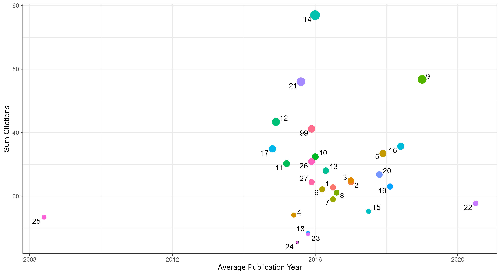
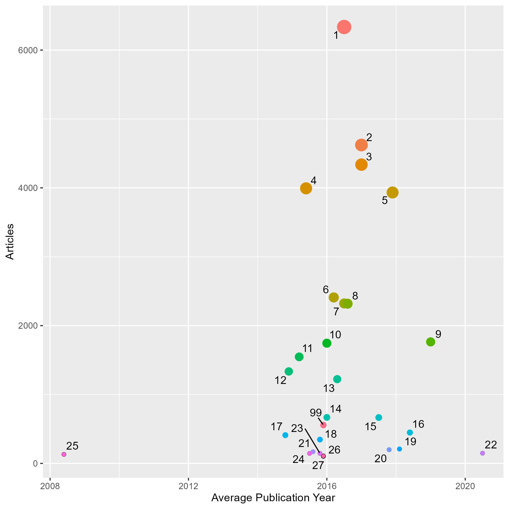
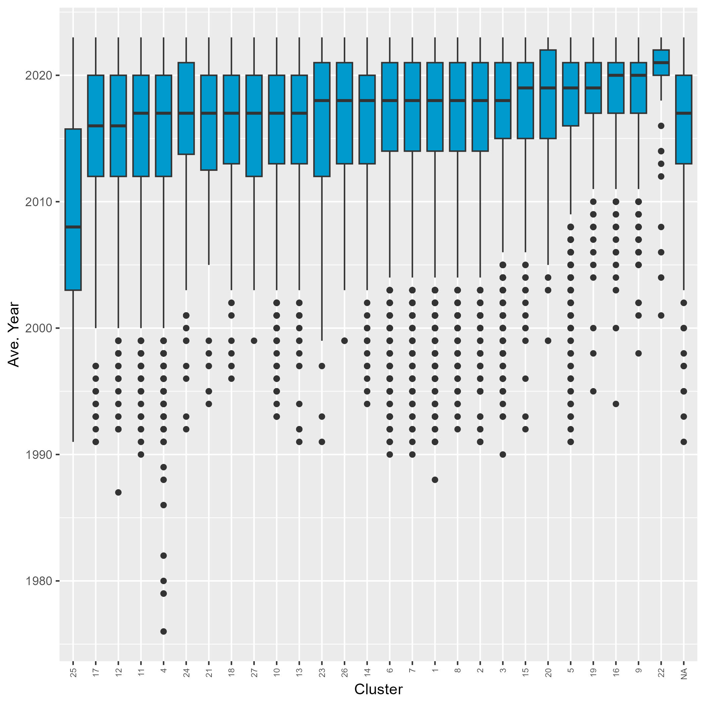
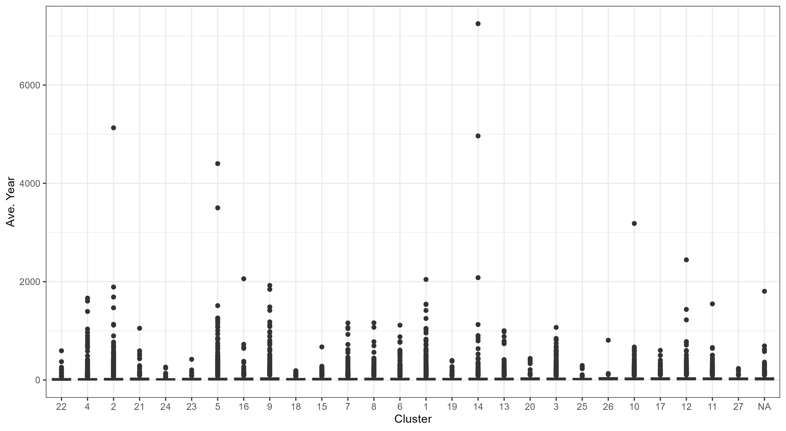
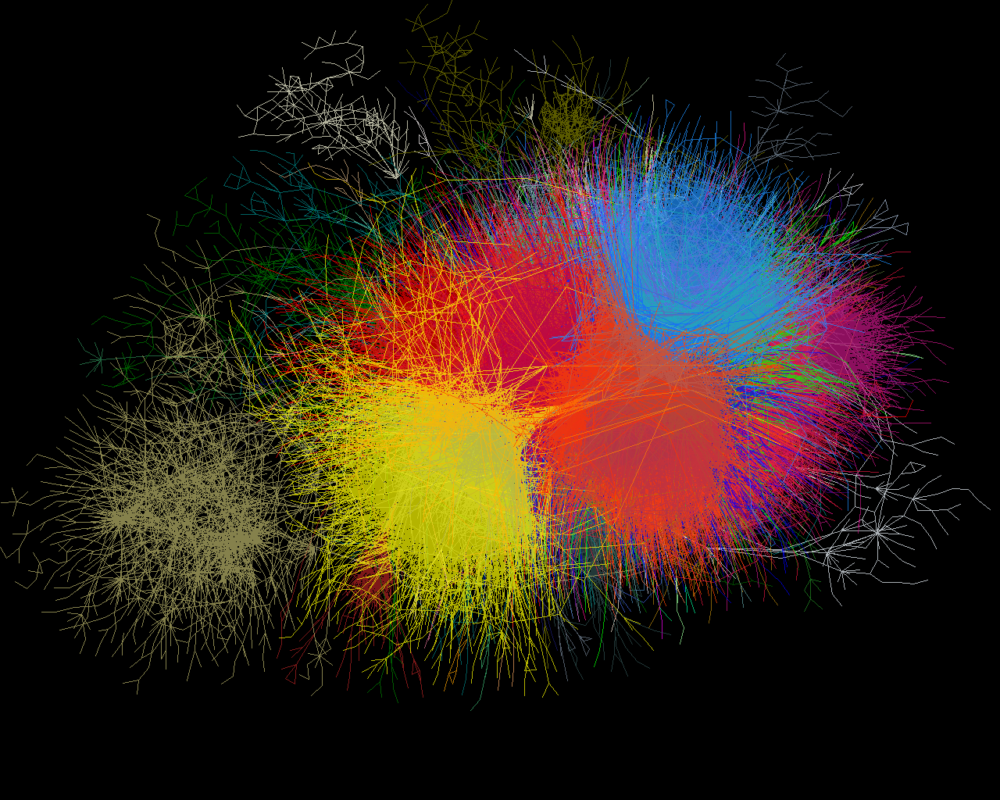

Citation_network of Future Scenario Papers
Data and Methods
Data
| Query | “future” AND ”scenario” |
|---|---|
| Database | WOS |
| Documents | 75265 |
| Date retrieved | 2023-07-13 |
| Fukan Analysis | Link |
| ID | Q249-future-scenario |
Methods
Results
Overview




Clusters
 Figure 1: Citation network of Future Scenarios, illustrating clusters of related research.
In this network, clusters are visually differentiated by color, with labels indicating their size based on the number of documents. Proximity between clusters reflects topical relatedness, with closer clusters indicating greater thematic similarity, while distant clusters suggest topical divergence.
Cluster 1: Climate Change Impacts and Adaptation
The common topic of the cluster is climate change and its impacts on various aspects such as precipitation patterns, flood risk, hydrological modeling, and regional climate projections. The texts discuss the projections of climate change in the Mediterranean region, the potential to reduce uncertainty in regional climate predictions, downscaling techniques for hydrological modeling, global flood risk, and the assessment of climate change impacts on hydrology. They also touch upon the importance of adaptation, the role of climate models in predicting future climate, and the need for effective floodplain management strategies. Overall, the cluster provides insights into the current understanding of climate change and its implications for different regions and sectors.
Articles:
Climate change projections for the Mediterranean region indicate a decrease in precipitation, particularly in the warm season, except for the northern Mediterranean areas in winter, due to increased anticyclonic circulation and a northward shift of the Atlantic storm track, along with a pronounced warming, maximum in the summer season, leading to a greater occurrence of extremely high temperature events, with the projections by global and regional models generally consistent but with substantial orographically-induced fine scale structure in the regional models, suggesting that the Mediterranean might be an especially vulnerable region to global change. (Giorgi and Lionello 2008) degree: 176 citations: 2045
The study examines the potential for climate science to reduce uncertainty in regional climate predictions, finding that model uncertainty is more significant than internal variability and that reducing uncertainty could have significant economic value for managing adaptation to a changing climate. (Hawkins and Sutton 2009) degree: 197 citations: 1542
Recent advances in downscaling techniques for hydrological modelling have allowed for the linking of climate change modelling to impacts studies, with new developments in climate scenario construction offering potential for advancement within the ‘downscaling for hydrological impacts’ community, including probabilistic modelling, pattern scaling, and downscaling of multiple variables, which can be merged with downscaling techniques in a probabilistic climate change scenario framework to assess uncertainties associated with future projections; however, there is still limited consideration given to applied research within hydrological impact studies. (Fowler, Blenkinsop, and Tebaldi 2007) degree: 544 citations: 1536
This study presents global flood risk projections for the end of the century, using outputs from 11 climate models and a state-of-the-art global river routing model, and demonstrates a significant increase in flood frequency in Southeast Asia, Peninsular India, eastern Africa, and the northern half of the Andes, with some areas projected to experience a decrease in flood frequency, highlighting the need for adaptation measures in the face of future climate change. (Hirabayashi et al. 2013) degree: 128 citations: 1414
Six approaches for downscaling climate model outputs for hydrologic simulation were evaluated, with emphasis on producing precipitation and other variables at higher spatial resolution; the study compared three statistical downscaling methods applied to both direct climate model output and after dynamical downscaling, finding that bias-correction and spatial disaggregation produced the best results. (Wood et al. 2004) degree: 371 citations: 1251
This paper presents SDSM, a decision support tool that uses statistical downscaling techniques to assess local climate change impacts, by generating multiple, low-cost, single-site scenarios of daily surface weather variables under current and future regional climate forcing, and demonstrates its application in generating temperature and precipitation scenarios for Toronto, Canada by 2040-2069. (48 words) (wilby-2002-sdsm?–) degree: 302 citations: 799
This study compares different sources of uncertainty for climate change impacts on flood frequency in England, finding that the largest source of uncertainty is the structure of the General Circulation Models (GCMs) used, particularly due to the extreme increases in winter rainfall predicted by one of the five GCMs. However, other sources of uncertainty, such as future climate modeling and hydrological modeling, become more significant if the results from this GCM are omitted, highlighting the importance of understanding current and future natural variability in assessing climate change impacts on hydrology. (Kay et al. 2009) degree: 208 citations: 431
This study assesses the impact of future climate change on the hydrology of the Gidabo river sub-basin in the Ethiopian Rift Valley Lakes Basin, using a climate ensemble of Regional Climate Model outputs and the Soil and Water Assessment Tool (SWAT). The results indicate a decline in mean annual surface runoff, water yield, and actual evapotranspiration, which could lead to reduced soil moisture availability for crop production, highlighting the need for watershed development and management practices to mitigate the adverse effects of climate change on agriculture and water supply. (Aragaw, Mishra, and Goel 2023) degree: 23 citations: 0
This study assesses the impacts of climate change on flooding in the river Chenab, Pakistan, under future scenarios. Various climate models were used to evaluate future streamflow and floodplain flows, and statistical distributions were employed to assess flood return periods. The results indicate an increase in flood inundation extent, highlighting the importance of using predicted climate data for effective floodplain management strategies. (Kiran, Iqbal, and Mahmood 2023) degree: 21 citations: 0
This study developed a probabilistic risk assessment approach to quantify urban flood risk and assess the impacts of future climate change, finding that the risk of urban flooding is projected to increase by 51.3% to 67.4% under different climate change scenarios, with the largest increases occurring in forestlands and grasslands, highlighting the importance of these findings for informed decision making in urban flood prevention. (W. Liu et al. 2023) degree: 20 citations: 0
A refined scenario-neutral approach is proposed to assess the potential hydroclimatological impacts of changing climatic conditions in Quebec, Canada, considering the sensitivity of systems, differential analysis of climatic stressors, paths of change, and categorized response of scenarios. The results indicate regional and differential behaviors in hydroclimatology, annual water balances, and snow, with a plausible scenario showing reduced snow, decreased low flows (varying between basins), and increased dry events despite current mean annual flows remaining unchanged due to temperature and precipitation increases. (Giraldo, Ricard, and Anctil 2023) degree: 23 citations: 0
Future scenarios of concurrent long-duration dry and hot (LDDH) events in China during summer were investigated using fourteen global climate models (GCMs) downscaled by four statistical downscaling methods. The downscaling methods improved the accuracy of LDDH characteristics and the three quantile mapping based techniques outperformed the cumulative distribution function transform. All downscaling methods projected an increasing tendency for the frequency, magnitude, and total days of LDDH events in China, with higher increases under RCP8.5 compared to RCP4.5. Model uncertainty dominated throughout the century, but scenario uncertainty became more important towards the end of the century for the projection of temperature magnitude of LDDH events. (Y. Yang and Tang 2023) degree: 20 citations: 0
Cluster 2: Climate Change and Species Distribution
The common topic of the cluster is the impact of climate change on species distribution and biodiversity. The texts discuss the shifts in species distributions and abundances, the risks of species extinction, the classification of climate conditions, the modeling of range-shifting species, the threats to plant diversity, the prediction of species’ range shifts, and the validation of species-climate impact models. They also address the development of novel climates, the variability and uncertainties in projections, and the implications for conservation. Overall, the cluster highlights the urgent need to address climate change and implement strategies to mitigate its effects on species and ecosystems. Therefore, the common topic can be named “Climate Change and Species Distribution.”
Articles:
Future climate change scenarios predict that 15-37% of species in sample regions will be ‘committed to extinction’ by 2050, emphasizing the urgent need for greenhouse gas emission reduction technologies and carbon sequestration strategies. (Thomas et al. 2004) degree: 632 citations: 5129
New global maps of the Koppen-Geiger climate classification at an unprecedented 1-km resolution for the present-day and future scenarios (under climate change) are presented, offering higher accuracy, more detail, and valuable indications of classification reliability, with potential applications in species and vegetation distribution modeling. (Beck et al. 2018) degree: 33 citations: 1890
This study explores modelling approaches to minimize extrapolation errors and assess predictions of range-shifting species against prior biological knowledge, using the invasive cane toad in Australia as an example. The results highlight the need for methods and tools to understand models and predictions, and demonstrate that controlling the fit of models and integrating information from mechanistic models can enhance the reliability of correlative predictions in non-equilibrium and novel settings. These findings have important implications for managing biodiversity in the face of species invasions and climate change. (Elith, Kearney, and Phillips 1800) degree: 383 citations: NA
Future scenarios of climate change in Europe indicate that more than half of the studied plant species could become severely threatened by 2080, with highly variable expected species loss and turnover across scenarios and regions, and a disproportionate sensitivity of mountain species to climate change; the transition between the Mediterranean and Euro-Siberian regions is expected to experience the greatest changes. (Thuiller et al. 2005) degree: 347 citations: 1687
Bagging Trees (BT) and Random Forests (RF) were found to be superior in reproducing current importance value distributions for four tree species, and were also more reasonable in estimating suitable habitat after climate change, making them robust techniques for predictive vegetation mapping under future climate scenarios. (Prasad, Iverson, and Liaw 2006) degree: 51 citations: 1468
Future scenarios of climate change will lead to the emergence of no-analog communities, characterized by novel climates that are warmer than any present climates globally, with variable shifts in precipitation, increasing the risk of species reshuffling and other ecological surprises, highlighting the need to test the robustness of ecological models to these conditions. (Williams and Jackson 2007) degree: 101 citations: 1131
Validation of species-climate impact models under climate change is crucial due to the significant variability in model predictions and the need to reduce uncertainties; however, model validation is challenging as predictions are made for future events, and current approaches suffer from spatial and temporal autocorrelation issues. In this study, using observed distribution shifts among 116 British breeding-bird species over the past 20 years, four envelope modelling techniques were independently validated, showing good to fair predictive performance, although the interpretation of model performance in a decision-planning context is difficult. Artificial neural networks and generalized additive models outperformed generalized linear models and classification tree analysis in predicting species range shifts. While perfect validation may not be conceptually possible, the usefulness of models depends on the questions being asked and the techniques used. (Araujo et al. 2005) degree: 249 citations: 1115
This study examines the patterns and uncertainties of species’ range shifts under climate change, finding that while there is high potential for species turnover in response to climate change, the variability in projections arising from different niche-based models obscures the potential distributional changes of species across climate scenarios, highlighting the need to explicitly quantify model uncertainty when discussing future species distributions and community descriptors. The study also proposes and tests an alternative method to account for modelling variability when estimating species turnover under different climate change scenarios. (Thuiller 2004) degree: 172 citations: 630
This study aims to predict the future habitat distributions of two endemic oak tree species, Quercus infectoria and Quercus libani, in the Kurdistan Region of Iraq’s mountain ranges under climate change scenarios, using distribution data, environmental factors, machine learning, and geospatial techniques. The results indicate that both species’ habitat ranges would contract, with some expansion in certain areas, and emphasize the importance of conserving the mountain areas where the species overlap for effective biodiversity conservation in the face of climate change in Iraq. (Hama and Khwarahm 2023) degree: 28 citations: 1
This study used optimized maximum entropy models to predict the potential distribution areas for Thesium chinense Turcz. in China, both in the present and future, under different climate scenarios. The results showed that the highly suitable areas were primarily located in Shandong and Shanxi Provinces, with a relatively stable habitat in South Central Shanxi, Eastern Gansu, and Midwest Guizhou. Additionally, the analysis indicated that the potential habitat of the plant migrated in a northwesterly direction under various climatic conditions. (P. Gao et al. 2023) degree: 23 citations: 0
This study utilized eBird and GBIF data to develop Species Distribution Models (SDMs) and predict the potential impacts of climate change on terrestrial avifauna in India. The findings suggest that a significant proportion of bird species in India will shift to higher elevations or northward, resulting in changes in their distribution ranges. Additionally, bird species diversity is expected to increase in regions above 2500 m in elevation, and the western Himalayas, Sikkim, northeast India, and the western Ghats regions are predicted to experience extensive changes in species richness by 2070. These results align with predictions made for avifauna in other regions, such as Europe and the USA. (Deomurari et al. 2023) degree: 30 citations: 0
Future scenarios of habitat suitability for the critically endangered plant species Commiphora wightii in India indicate that its potentially suitable bioclimatic distribution will increase under all future projections (2090 > 2050 ≈ current), except for 2070, suggesting that there are more suitable habitats available for artificial cultivation and future projections. Additionally, the species was found to favor various types of landforms outside rocky environments, such as sand dunes, sandy plains, and saline areas. The study also highlighted the importance of considering both bioclimatic and non-bioclimatic variables in understanding the effects on species distribution. (Mathur, Mathur, and Purohit 2023) degree: 24 citations: 0
Future scenarios of climate change pose a significant risk to alpine graminoid species, particularly the 79 Kobresia species in China, as their distributional ranges are likely to shrink to critical sizes, with around 40% of the species facing the risk of extinction due to climate-induced range shifts, emphasizing the urgent need for adaptation measures to mitigate the potential impacts of rapid warming on these cold-adapted mountain species. (JG. Wu 2023) degree: 29 citations: 0
Cluster 3: Feasibility and Challenges of Transitioning to 100% Renewable Energy System
The common topic of the cluster is the feasibility and challenges of transitioning to a 100% renewable energy system. The articles discuss various aspects of this topic, including the modeling of scenarios for a renewable European power system, the analysis of alternative fuels and vehicles for China’s road transport, the cost and resource analysis of sodium-ion batteries, the impact of plug-in electric vehicles on distribution networks, the modeling of load demand due to EV battery charging, the energy system analysis of 100% renewable energy systems in Denmark, the future scenarios of global plastic waste generation and disposal, the life-cycle assessment of electricity-supply scenarios, and the first step towards a 100% renewable energy system for Ireland. Overall, the articles highlight the potential benefits and challenges of transitioning to a 100% renewable energy system, including the need for increased generation capacity, transmission capacity, integration of new technologies, and policy support.
Articles:
This study examines the feasibility of a 100% renewable European power system by 2050 through modeling seven scenarios based on different levels of demand and technology availability, finding that it is possible to achieve the same level of system adequacy as today, but would require significant increases in generation capacity, transmission capacity, integration of heat pumps and electric vehicles, energy efficiency measures, wind and solar deployment, biomass consumption, and solid biomass and biogas capacity deployment, with a total cost approximately 30% higher than a power system including other low-carbon technologies, and potential reliance on negative emissions from biomass with carbon capture and storage to achieve emission reduction goals. (Zappa, Junginger, and Van Den Broek 2019) degree: 44 citations: 303
This paper presents a scenario analysis on alternative fuel/vehicle options for China’s future road transport, assessing their impact on life-cycle energy demand and greenhouse gas emissions, and suggests that future policies should focus on supporting sustainable biofuels, high-efficiency electric vehicles, and the deployment of coal-based fuels with low-carbon technology. (Ou, Zhang, and Chang 2010) degree: 47 citations: 243
This Perspective article presents a comprehensive cost and resource analysis of sodium-ion batteries, highlighting their potential as alternatives to lithium-ion batteries due to their lower cost, greater abundance, and reduced toxicity. The study utilizes the Battery Performance and Cost (BatPaC) model to assess the cost implications of substituting lithium with sodium and replacing the anode current collector foil. Additionally, the production costs of sodium-ion and lithium-ion batteries are compared, and the key parameters for optimization are identified. The article also examines the potential supply risks associated with the major raw materials for lithium-ion cathodes, such as lithium and cobalt, and discusses the implications for battery research. Overall, this Perspective offers an interdisciplinary perspective on the future of batteries, with a specific focus on sodium-ion batteries. (Vaalma et al. 2018) degree: 7 citations: 1069
This paper presents a comprehensive approach for assessing the impact of increasing levels of plug-in electric vehicle (PEV) penetration on distribution network investment and energy losses, using a large-scale distribution planning model to analyze two real distribution areas. The results indicate that, depending on charging strategies, investment costs can rise by up to 15% of total distribution network investment costs, and energy losses can increase by up to 40% during off-peak hours in a scenario with 60% of vehicles being PEVs. (LP. Fernandez et al. 2011) degree: 17 citations: 813
This paper presents a methodology for modeling and analyzing the load demand in a distribution system due to electric vehicle (EV) battery charging, considering different charging scenarios and their impact on peak demand, with results showing that a 10% market penetration of EVs would result in an increase in daily peak demand by up to 17.9%, while a 20% level of EV penetration would lead to a 35.8% increase in peak load, for the scenario of uncontrolled domestic charging. (Qian et al. 2011) degree: 18 citations: 844
This paper presents the methodology and results of an energy system analysis for a 100% renewable energy system in Denmark in the years 2030 and 2050, showing that a 100% renewable energy supply based on domestic resources is physically possible, but Denmark will need to consider the trade-offs between relying on biomass resources or wind power. (Lund and Mathiesen 2009) degree: 95 citations: 744
This study presents future scenarios of global plastic waste generation and disposal, projecting that the production of mismanaged plastic waste (MPW) could triple to 155-265 million metric tonnes per year by 2060 if no action is taken. The African and Asian continents are expected to have disproportionately high MPW loads, but this growth can be reduced through investments in waste management infrastructures and international efforts to reduce plastic in municipal solid waste. Additionally, the study highlights that rivers play a significant role in transporting MPW to the ocean, with 91% of MPW being transported through watersheds larger than 100 km². (Lebreton and Andrady 2019) degree: 5 citations: 682
The first global, integrated life-cycle assessment (LCA) of long-term, wide-scale implementation of electricity generation from renewable sources and carbon dioxide capture and storage for fossil power generation confirms that low-carbon technologies can double electricity supply while stabilizing or reducing pollution, despite requiring higher initial investments in infrastructure and higher material requirements. (Hertwich et al. 2015) degree: 68 citations: 407
This study presents the first step towards a 100% renewable energy-system for Ireland, using the EnergyPLAN analysis tool to create three different scenarios (biomass, hydrogen, and electricity) and comparing their benefits to create an optimum combination scenario, although further improvements and refinements are needed before a roadmap for Ireland’s renewable energy transition can be defined. (Connolly et al. 2011) degree: 72 citations: 307
This article explores various energy scenarios for modern power systems with a high renewable energy share, considering different sizes, generation technologies, and grid configurations, and quantifying them through an optimization-based algorithm using real data and specific locations in Europe. The study shows that while solar photovoltaic and wind can form the renewable backbone, additional technologies like solar thermal and pumped hydro are crucial for achieving a very high share in the energy mix due to their flexibility, despite being expensive for low shares. (Collados-Rodriguez et al. 2023) degree: 12 citations: 0
China’s transition to electric vehicles (EVs) will lead to increased demand for nickel, but a stock-driven bottom-up dynamic substance flow analysis (SFA) model suggests that closed-loop nickel recovery from EV batteries can effectively alleviate the demand-supply contradiction, with annual recycling potentially covering between 67.7% and 96.6% of the demand for EV batteries in 2050, and between 37.9% and 58.1% in terms of cumulative quantity by 2050, particularly when low-nickel battery technology is adopted and recovery efficiency is improved, highlighting the importance of focusing on low-nickel battery technology and efficient recycling of spent EV batteries to ensure the availability of nickel in China’s EV industry. (HY. Zhang et al. 2023) degree: 13 citations: 0
This study models alternative scenarios for Egypt’s 2050 energy mix using LEAP analysis, considering uncertain future demand and surplus capacity, and finds that the cancellation of nuclear power plans leads to a decline in natural gas contribution, while increasing the renewable share to 70% by 2050 results in the lowest long-term production cost. (El-Sayed, Khalil, and Yehia 2023) degree: 15 citations: 0
This study examines the drivers of carbon emission reduction in China’s building sector and simulates future trajectories of carbon emissions. The results show that building-sector investment and output are the main drivers of carbon emission growth, making it challenging to achieve the 2030 carbon emission peak target. (Shi et al. 2023) degree: 12 citations: 0
This study presents a comprehensive model of the Ethiopian electricity system, considering the unique features and context of developing countries, and explores future scenarios for power supply and demand until 2050. The analysis includes sector-wise and technological representation, assessment of grid-based and off-grid methods for improving electricity access, and sensitivity analysis. The results suggest that an efficiency scenario, which reduces installed capacity and saves costs, is the most desirable, with renewable technologies being more competitive and favorable due to lower investment costs and abundant resource availability. (Gebremeskel, Ahlgren, and Beyene 2023) degree: 12 citations: 0
Cluster 4: Adaptation and Resilience in the Context of Sustainability and Climate Change
The common topic of the cluster is “Adaptation and Resilience in the Context of Sustainability and Climate Change”. The texts discuss the need for successful adaptation to climate change impacts, the importance of considering different spatial and societal scales in adaptation processes, the role of resilience in sustainable development, the involvement of actors from outside academia in sustainability research, the cognitive perspective on risk-taking in decision-making, the concept of smart cities and their role in ensuring mobility and access to opportunities, the use of scenario planning as a tool for conservation and strategic thinking, and the evolution of scenario techniques in long-range business planning. Overall, the texts highlight the need for proactive and adaptive approaches to address the challenges posed by climate change and promote sustainable development.
Articles:
This article examines the successful adaptation to climate change across different scales, including physical and ecological systems, as well as human adjustments to resource availability and risk. The authors propose a set of evaluative criteria, including effectiveness, efficiency, equity, and legitimacy, to assess the success of adaptations at different scales. They argue that these criteria are implicit in current scenarios of socio-economic futures, but with varying importance. The authors also highlight the need for new institutional processes to evaluate adaptations at different scales. (48 words) (Adger, Arnell, and Tompkins 2005) degree: 27 citations: 1665
This article highlights the need for a fundamental change in thinking and practice of environmental management, as evidence suggests that natural and social systems behave in nonlinear ways and are strongly coupled. The concept of resilience, defined as the capacity to buffer change, learn, and develop, is proposed as a framework for sustaining and enhancing adaptive capacity in a rapidly transforming world. The use of structured scenarios and active adaptive management is recommended as tools for resilience-building, which require a flexible social context with open institutions and multi-level governance systems to increase adaptive capacity and preserve future development options. (Folke et al. 2002) degree: 18 citations: 1605
This article discusses the importance of transdisciplinary research in sustainability science, highlighting the need for the involvement of actors from outside academia to integrate knowledge, reconcile values, and create ownership for problems and solutions. The article synthesizes and structures key principles for conducting transdisciplinary sustainability research, examines challenges and coping strategies from empirical projects around the world, and suggests future research to enhance the practice of transdisciplinary sustainability research. (Lang et al. 2012) degree: 41 citations: 1393
This article explores the cognitive perspective on risk-taking in decision making, highlighting the tendency of decision makers to view problems as unique and neglect the statistics of the past and future opportunities, leading to overly cautious attitudes towards risk and overly optimistic forecasts. The implications of these biases for decision making in organizations are also discussed. (KAHNEMAN and LOVALLO 1993) degree: 12 citations: 1036
This text discusses the future scenarios of smart cities, focusing on mobility and access to opportunities for urban populations. It defines six scenarios for smart cities, proposes seven project areas, and anticipates paradigm shifts in smart city research, emphasizing the importance of key demonstrators. (Batty et al. 2012) degree: 13 citations: 968
Scenario planning is a valuable tool for conservation in an unpredictable world, allowing for the development of resilient policies by exploring contrasting scenarios and incorporating diverse information to make better decisions and build shared understanding. (Peterson, Cumming, and Carpenter 2003) degree: 247 citations: 834
This paper presents a typology of scenarios based on the user’s need to know what will happen, what can happen, and/or how a predefined target can be achieved, and discusses the applicability of various techniques for developing scenarios that provide the required knowledge, aiming to provide a guide on how scenarios can be developed and used. (Borjeson et al. 2006) degree: 310 citations: 731
Scenario planning is a valuable tool for strategic thinking, as it allows managers to consider a wide range of possibilities in detail, compensating for decision-making errors by identifying trends and uncertainties and constructing scenarios that can be used to plan a company’s future. (SCHOEMAKER 1995) degree: 226 citations: 692
The paper discusses the origins and evolution of scenario techniques in long-range business planning, highlighting the methodological chaos and confusion surrounding definitions and methods of scenarios, and emphasizes the need for resolving this issue in future scenarios. (Bradfield et al. 2005) degree: 292 citations: 586
Backcasting, a problem-solving approach, is proposed as a valuable tool for addressing the complex challenges of sustainable development and guiding policy formation by providing policymakers and the public with future scenarios that can inform decision-making and opinion formation. (Dreborg 1996) degree: 139 citations: 367
This paper presents a method for constructing future scenarios in the context of the future of work, aiming to provide a framework for analyzing and understanding potential future developments in this field. (CAZES 1976) degree: 1 citations: 3
This article emphasizes the importance of involving stakeholders in the research process of understanding and modeling change in food-energy-water systems, highlighting the need for sustained development and iteration with stakeholders to ensure the validity of models and outcomes, and proposing a paradigm shift in stakeholder engagement as a process of knowledge generation through building relationships and trust. The authors demonstrate a case-study of a mid-size river basin to showcase the co-production of knowledge process in food-energy-water systems, which generates solutions for the sustainable use of water, energy, and nutrients at the landscape level. (Kliskey et al. 2023) degree: 24 citations: 1
This paper explores the challenges of managing water and environmental systems under uncertainty, discussing concepts, models, and methods for achieving sustainable development in the face of complex interactions and future uncertainties. It emphasizes the need for comprehensive decision frameworks that consider multiple processes and introduces the concepts of robustness and adaptation. The paper also highlights the importance of shifting from rhetoric to intervention in order to address the changing tendencies of today and ensure the future well-being of future generations. (Cunha 2023) degree: 19 citations: 1
This paper proposes an adaptive scenario-building approach that uses exploratory scenarios as intermediate tipping points to facilitate adaptive policy responses in land use and transport planning, and presents a case study in the Henares Corridor in Madrid, Spain, where three exploratory scenarios were assessed as experimental tipping points for the initial policy pathways adopted by regional and local governments, leading to different adaptive policy responses. (Ariza-Alvarez, Soria-Lara, and Aguilera-Benavente 2023) degree: 26 citations: 0
This study conducted a bibliometric analysis of Delphi-based future scenarios applied to climate change, using quantitative methods to investigate the scientific literature path and establish new guidelines for future research projects in this area. (Calleo and Pilla 2023) degree: 35 citations: 0
This conceptual paper proposes integrating psychological principles of future thinking with future scenario development to enhance the impact of scenarios, arguing that understanding cognitive biases, psychological distance, and other psychological processes can improve scenario effectiveness. The authors suggest incorporating emotion-evoking aspects, tailored narratives and visuals, and inclusive co-creation of scenarios to overcome cognitive biases and facilitate sustainable change processes. This approach has the potential to support the development of inclusive policies and solutions that empower individuals, communities, and decision makers. (Richter et al. 2023) degree: 20 citations: 0
Cluster 5: Climate Change Research and Assessment
The common topic of the cluster is climate change research and assessment. The texts discuss various aspects of climate change, including the implications for the environment and society, the development of scenarios to explore potential consequences and response options, the experimental design and organization of climate modeling projects, the evaluation of binary classifiers for imbalanced datasets, the development of shared socioeconomic pathways for climate change research, and the impacts of air pollution on global health and extreme weather events. The texts highlight the importance of understanding and addressing climate change through scientific research and policy measures.
Articles:
New scenarios for climate change research are needed to explore the potential consequences of different response options, including mitigation and adaptation, and to facilitate information exchange among physical, biological, and social scientists. Here, we present a new process for developing plausible future scenarios to address these crucial questions. (RH. Moss et al. 2010) degree: 480 citations: 4401
The Coupled Model Intercomparison Project Phase 6 (CMIP6) aims to address scientific gaps from previous phases and fill specific knowledge gaps by utilizing the DECK and CMIP historical simulations, CMIP data standards, and a set of CMIP6-Endorsed Model Intercomparison Projects (MIPs) that will focus on future climate scenarios, addressing questions related to Earth system response to forcing, model biases, and assessing future climate changes given variability, predictability, and uncertainties in scenarios. (Eyring et al. 2016) degree: 400 citations: 3501
The Precision-Recall (PR) plot should be favored over the Receiver Operating Characteristics (ROC) plot when evaluating binary classifiers on imbalanced datasets, as the ROC plot can be misleading in these scenarios due to an incorrect interpretation of specificity, while the PR plot accurately predicts future classification performance by evaluating the fraction of true positives among positive predictions. This has implications for the interpretation of numerous studies that utilize ROC plots on imbalanced datasets. (Saito and Rehmsmeier 2015) degree: 4 citations: 1512
A new scenario framework for climate change research, called Shared Socioeconomic Pathways (SSPs), combines future radiative forcing and socioeconomic development pathways to study climate change impacts, adaptation, and mitigation. SSPs are reference pathways describing plausible alternative trends in society and ecosystems, and a space of challenges to adaptation and mitigation is defined within the framework. The development of basic SSPs, which can be extended for specific purposes, is proposed, along with an iterative process of application that may lead to modifications of the initial SSPs. (49 words) (o?’neill-2014-new-scenario) degree: 421 citations: 1260
The Scenario Model Intercomparison Project (ScenarioMIP) is a key component of the Coupled Model Intercomparison Project (CMIP6) that aims to provide multi-model climate projections based on different future emissions and land use scenarios, with the goal of enhancing understanding of the climate system and informing societal responses to climate change. The project will investigate various scientific and policy questions, including the role of specific forcings, the consequences of scenarios that limit warming to below 2 degrees C, and long-term climate system outcomes beyond the 21st century. The design of ScenarioMIP consists of eight alternative scenarios, an initial condition ensemble, and long-term extensions, organized into two tiers based on priority. Emissions and land use scenarios will be provided to climate modeling groups by late 2016, with climate model simulations and analysis to be conducted between 2017 and 2020. (o?’neill-2016-scenario-model) degree: 361 citations: 1256
This article discusses the development of shared socioeconomic pathways (SSPs) as a component of long-term scenarios for investigating climate impacts and options for mitigation and adaptation. The authors present the SSP narratives, which are qualitative descriptions of future changes in demographics, human development, economy and lifestyle, policies and institutions, technology, and environment and natural resources. The narratives are based on expert opinion and are intended to serve as a basis for integrated scenarios of emissions, land use, climate impact, adaptation, and vulnerability analyses. (43 words) (o?’neill-2017-roads-ahead) degree: 390 citations: 1092
Socio-demographic factors have a dominant influence on the health outcomes related to air pollution, with changes in population size and age distribution playing a more significant role than exposure level in shaping future health burden, as revealed by an assessment of pollution and health futures in five scenarios using an integrated modeling framework. (H. Yang et al. 2023) degree: 17 citations: 1
Projection of precipitation extremes over South Asia from CMIP6 GCMs 2061-2100 under two SSP scenarios (SSP2-4.5 and SSP5-8.5) indicates that under the SSP5-8.5 scenario, there will be increased frequency and intensity of extreme precipitation indices towards the end of the 21st century, especially in the eastern part of South Asia. This has significant implications for flooding, soil erosion, water resources, food security, and agriculture development in the region. (A. Abbas et al. 2023) degree: 14 citations: 0
Reductions in non-methane short-lived climate forcers (SLCFs) in eastern and southern Asia will increase global surface warming, temperature extremes, and precipitation extremes, leading to significant population exposure risks in these regions. (YF. Li et al. 2023) degree: 15 citations: 0
This study examines the expected variabilities in different drought conditions, the population exposure to drought, and the total exposure attributed to individual factors such as climate and population in future climate change scenarios in India. The results indicate that severe and extreme droughts are likely to increase under all scenarios, with the highest exposure observed under the SSP3-7.0 scenario. The study emphasizes the need for effective measures to mitigate the risk, particularly in high-risk areas of India. (Das and Das 2023) degree: 17 citations: 0
Future scenarios of climate change emergence under a high emissions scenario show lower S/N in Central Africa, South Asia, and parts of South America, West Africa, East Asia, and Western Europe, but higher in most other populated areas due to higher effective climate sensitivity in CMIP6 ensemble and changes to emissions pathways, effective radiative forcing, and region-scale climate responses. The first population-weighted calculation of climate change emergence for CMIP6 confirms the expected inequity of impacts and emphasizes the need for simultaneous mitigation and adaptation efforts. (Douglas et al. 2023) degree: 19 citations: 0
Cluster 6: Climate Change and its Impacts on Agricultural Systems and Food Production
The common topic of the cluster is the impact of climate change on agricultural systems, specifically on cropping systems and food production. The articles discuss various aspects such as the effects of elevated CO2 and climate change on crop yields, the consequences of climate change on global food production and hunger, methane production by ruminants contributing to global warming, the role of crop diversification in building resilience, the impact of climate change on global wine quality, methodologies for simulating climate change impacts on crop production, the impact of climate change on winter chill in fruit orchards, the timing of heat and drought stress in spring barley, and the water footprint of wheat production in a semi-arid environment. Overall, the articles highlight the need for adaptation strategies and sustainable agricultural practices in the face of climate change. Therefore, the common topic can be named as “Climate Change and its Impacts on Agricultural Systems and Food Production”.
Articles:
This study examined the potential effects of future climate change, including a doubling of atmospheric CO2, on agricultural production of four different cropping systems at two locations in Italy. The results showed that without modifications to current management practices, the combined effects of elevated CO2 and climate change would lead to a decrease in crop yields by 10-40%. However, adaptation strategies such as early planting and the use of slower-maturing cultivars can help maintain current crop yields. For irrigated crops, additional water may be required to mitigate the impact of climate change on grain yields. (C) 2000 Elsevier Science B.V. All rights reserved. (Tubiello et al. 2000) degree: 72 citations: 258
This paper analyzes the global consequences of climate change on crop yields, production, and the risk of hunger under different socio-economic and emissions scenarios. The study uses climate change scenarios developed from the HadCM3 global climate model and evaluates the impacts on crop yields and global cereal production using transfer functions derived from crop model simulations. The results show complex regional patterns of climate variables, CO2 effects, and agricultural systems that contribute to changes in global crop production. The findings suggest that while the world can continue to feed itself under the scenarios considered, there will be significant regional disparities, with poorer nations facing higher prices and increased risk of hunger, particularly under scenarios of greater inequality. The study also highlights the non-linearities in the world food supply system, both in terms of biophysical impacts and socio-economic factors. (C) 2003 Elsevier Ltd. All rights reserved. (Parry et al. 2004) degree: 154 citations: 1114
This paper reviews the role of methane in global warming, with a specific focus on its production through enteric fermentation in ruminants, highlighting the need for research on new anti-methanogenic compounds, alternative electron accepters, and reduction in protozoal numbers in the rumen to mitigate methane emissions while considering the importance of ruminants in providing high-quality protein sources. (AR. Moss, Jouany, and Newbold 2000) degree: 1 citations: 878
Implementing increased crop diversification in agriculture can improve resilience by suppressing pest outbreaks and buffering crop production from climate variability, but slow adoption is hindered by economic incentives, biotechnology strategies, and the misconception that monocultures are more productive. However, diversification can be tailored to provide economic benefits and enhance resilience at different scales and forms. (BB. Lin 2011) degree: 8 citations: 780
This study found that from 1950 to 1999, the warming trends in the majority of the world’s highest quality wine-producing regions led to increased vintage quality ratings and decreased year-to-year variation, with climate playing a significant role in quality variations; however, future scenarios indicate that the impacts of climate change will not be uniform across all varieties and regions, with European regions currently near their optimum growing season temperatures and New World viticulture regions showing less defined relationships, and model predictions suggesting an average warming of 2 degrees C in the next 50 years for global wine producing regions, which could exceed the climatic threshold for some regions producing high quality grapes at the margins of their climatic limits, making the ripening of balanced fruit for existing varieties and wine styles increasingly difficult, while pushing other regions into more optimal climatic regimes for the production of current varietals and potentially opening up more poleward locations for grape growing and wine production. (Jones et al. 2005) degree: 72 citations: 765
The Agricultural Model Intercomparison and Improvement Project (AgMIP) is an international initiative that aims to improve crop and economic models, as well as climate impact projections, in order to enhance food security and adaptation capacity in light of climate change. By linking climate, crop, and economic models, AgMIP seeks to analyze the effects of climate variability on agriculture and develop strategies for adaptation. The project provides protocols and guidelines for research activities, and pilot studies have shown the importance of considering uncertainties in climate scenarios and model choices when assessing climate impacts on wheat yields and economic projections. Ultimately, integrating multiple models can lead to a better understanding of future agricultural scenarios. (Rosenzweig et al. 2013) degree: 87 citations: 606
Approximately 170 papers have investigated the impact of climate change on crop production and adaptation strategies, focusing on wheat, maize, soybean, and rice, with the USA and Europe being the dominant regions studied. However, the most common approach used in simulating the response to increased CO2 levels does not consider the interacting effects of CO2, stomatal conductance, and canopy temperature, which could worsen the effects of global warming. Additionally, the assumed baseline CO2 concentration often corresponds to conditions 10-30 years earlier than the paper’s acceptance date, thereby exaggerating the relative impacts of increased CO2. Furthermore, due to the various scenarios for greenhouse gas emissions, the assumed future CO2 concentrations vary greatly, making comparisons between studies more complicated. Papers focusing on adaptation primarily examined changes in planting dates and cultivars. (White et al. 2011) degree: 104 citations: 407
Future scenarios of climate change in Mediterranean temperate fruit orchards reveal potential losses of winter chill, irregular and delayed bloom, increased risk of spring frost, exacerbation of bloom-related problems, and more frequent heat waves, highlighting the need for climate change adaptation strategies in the cultivation of temperate trees in this region. (E. Fernandez et al. 2023) degree: 18 citations: 2
This study projected the timing of heat and drought stress on spring barley in European sites for the years 2031-2050, and found that shifting sowing dates and choosing appropriate cultivars can mitigate some of the adverse effects, such as earlier heading and grain filling periods due to climate change, though drought conditions are projected to worsen in some regions. (Appiah et al. 2023) degree: 16 citations: 0
Assessing the impacts of climate change on the water footprint of rainfed and irrigated wheat in a semi-arid environment, our research found that future climates will lead to increased yield in the southern parts of the study area due to higher effective precipitation, while other regions will experience marginal yield decrease or no change for irrigated wheat. Additionally, the water footprint of wheat production is expected to decrease in the southern regions but increase in other regions, making the southern regions more suitable for wheat production in the future. (Fathian et al. 2023) degree: 14 citations: 0
This study examines the impact of climate change and planting date shifts on the growth and yields of double cropping rice in southeastern China in future scenarios. Using simulation models and statistical analysis, the researchers find that the yield of double cropping rice is influenced by meteorological factors such as CO2, precipitation, solar radiation, and temperature. They also find that adjusting the planting dates can lead to increased yield. The study provides valuable insights for local decision makers in mitigating the effects of future climate change on rice production. (ZY. Zhang et al. 2023) degree: 14 citations: 0
Future climate change scenarios in Tamil Nadu, India indicate a significant increase in annual maximum and minimum temperatures, as well as an increase in rainfall, potentially leading to a negative impact on the productivity of rice, maize, black gram, and red gram crops, highlighting the need for adaptation strategies to ensure food security in the region. (Geethalakshmi et al. 2023) degree: 14 citations: 0
Cluster 7: Future Impacts of Sea-Level Rise and Coastal Flooding on Coastal Populations and Infrastructure
The common topic of the cluster is the impact of sea-level rise and coastal flooding on coastal populations and infrastructure. The texts discuss future projections of sea-level rise, the vulnerability of coastal zones to flooding, the potential contributions of Antarctica to sea-level rise, and the need for adaptation and resilience measures. They also touch on the relationship between global temperature and sea-level rise, the potential energy resources in gas hydrates, and the importance of considering ice sheet and ocean parameters in predicting sea-level rise. Overall, the cluster highlights the urgent need for policies and planning to address the risks posed by sea-level rise and coastal flooding. Therefore, the common topic can be named as “Future Impacts of Sea-Level Rise and Coastal Flooding on Coastal Populations and Infrastructure”.
Articles:
This study assesses the future scenarios of coastal population growth and exposure to sea-level rise and coastal flooding at global and regional scales by the years 2030 and 2060, highlighting the highest population and exposure levels in Asia, particularly in China, India, Bangladesh, Indonesia, and Viet Nam, while also noting the expected high rates of population growth and urbanization in the coastal zones of Africa, particularly in Egypt and sub-Saharan countries in Western and Eastern Africa, emphasizing the need for policies and adaptive planning to build resilient coastal communities and further research in this area. (Neumann et al. 2015) degree: 74 citations: 1159
A semi-empirical approach has been developed to predict future sea-level rise by establishing a relationship between global mean surface temperature and sea-level rise, indicating that the rate of sea-level rise is proportional to the magnitude of warming above pre-Industrial Age temperatures, with a constant of 3.4 millimeters/year per degree Celsius, which leads to a projected sea-level rise in 2100 of 0.5 to 1.4 meters above the 1990 level based on the Intergovernmental Panel on Climate Change’s future warming scenarios. (Rahmstorf 2007) degree: 122 citations: 1065
Antarctica has historically played a significant role in sea-level rise, with past warm periods resulting in much higher global mean sea levels, and the Antarctic ice sheet being identified as the primary contributor; using a model that considers various factors, including the impact of atmospheric warming on ice shelves and cliffs, researchers project that Antarctica could contribute over a meter of sea-level rise by 2100 and more than 15 meters by 2500 if greenhouse gas emissions are not curbed, with prolonged ocean warming further delaying its recovery for thousands of years. (DeConto and Pollard 2016) degree: 114 citations: 1045
Future scenarios for gas hydrate resources involve incorporating a wide range of geological factors, such as gas hydrate concentration, host lithology, and burial depth, into evaluations of energy resource and environmental concerns, with initial focus on gas-hydrate-bearing sands as the most feasible targets for energy recovery, potentially leading to a global recoverable volume estimate of 3 x 10(13) m(3) (10(15) ft(3)). (Boswell and Collett 2011) degree: 7 citations: 927
A proposed relationship between global sea-level variations and global mean temperature, tested on synthetic and observed data and applied to future temperature scenarios, suggests a projected sea-level rise of 75 to 190 cm for the period 1990-2100, with a high correlation of >0.99 and an explanation of 98% of the variance. (Vermeer and Rahmstorf 2009) degree: 98 citations: 723
Projected changes in wind-wave climate have significant implications for coastal industries and ecosystems, as well as exacerbating vulnerabilities to sea-level rise; however, these changes have received little attention in global assessments of future climate change. Our study presents the first community-derived multi-model ensemble of wave-climate projections, revealing a projected decrease in annual mean significant wave height over 25.8% of the global ocean area, with a greater decrease during boreal winter. (Hemer et al. 2013) degree: 84 citations: 386
Future scenarios for the impact of climate change on storm surges in the Mediterranean Sea suggest that extreme storm surge magnitudes are projected to range between 0.35 and 0.50 m, with higher values along certain northern coasts and the Gulf of Gabes in the southern part of the sea. While the spatial distribution of surge maxima is expected to remain similar to that of the past, there may be variations in their magnitudes depending on the scenario. Specifically, a decrease of surge maxima from -30% to -2% is anticipated towards the end of the 21st century, although some specific coastal sites in Croatia, Spain, Italy, and France might experience an increase of 1% to 22% under different combinations of regional climate models and representative concentration pathways. The study also identifies correlations between deep depression events and high sea levels in various parts of the Mediterranean, with the strongest connections observed along the northern coasts. However, the influence of deep depressions on storm surges is expected to be lower in southern Mediterranean regions, except for the Gulfs of Gabes and Alexandretta. These findings are based on an analysis of storm surge data from the 20th century and projections towards 2100. (Makris et al. 2023) degree: 13 citations: 1
We conducted a study using the Community Ice Sheet Model (CISM) to explore the sensitivity of ice sheet models to ocean thermal forcing and basal sliding, and found that the initialization methods of these models can significantly impact future sea level rise predictions, with differences of up to 2 meters over several centuries and up to 0.2 meters by the end of this century. We also identified specific ocean and ice parameter combinations that lead to widespread mass loss within 500 years. Our findings highlight the importance of considering these parameter choices in ice sheet simulations for accurate sea level rise predictions and suggest the inclusion of glacial isostatic adjustment in these simulations. (Berdahl et al. 2023) degree: 13 citations: 0
This paper introduces a novel framework, called Probabilistic Sea Level Rise Hazard Analysis (PSLRHA), which utilizes current generation models and protocols to project future sea level rise and quantify uncertainties. The framework produces a global sea level rise hazard map by aggregating probabilities of exceeding specific sea level rise thresholds at different locations. The study also identifies the climate scenarios and sea level rise models that have the greatest impact on extreme thresholds. The practical application of PSLRHA is demonstrated through compound flooding analyses using Houston as a case study. (X. Luo and Lin 2023) degree: 16 citations: 0
This study aims to constrain future projections of Antarctic dynamics and their contribution to sea level rise by using ice discharge observations, and finds that even with calibration, the acceleration and relative contribution of the Amundsen Region are underestimated, with methodological choices leading to higher sea level contributions, although uncertainties associated with Earth system models and ice sheet models have a greater impact on the projected sea level contribution than the methodological choices made in this study. (Van Der Linden et al. 2023) degree: 11 citations: 0
This study analyzed the complementarity between wind and solar photovoltaic power in North America from 2025 to 2054 under the SSP2-4.5 scenario using a multi-model ensemble of 10 global climate models. The results showed that the combination of these two resources reduced spatial heterogeneity in power distribution, with optimal complementarity observed in coastal areas of the Gulf of Mexico and the Caribbean Sea, as well as in the US-Canada border and northern regions like Alaska and the Labrador Peninsula. Mexico exhibited the lowest values of complementarity. (Costoya et al. 2023) degree: 11 citations: 0
Cluster 8: Modeling and Simulation of Land Use and Land Cover Change for Sustainable Urban Planning and Ecosystem Conservation
The common topic of the cluster is the modeling and simulation of land use and land cover change (LULC) under different scenarios. The articles discuss various methods and models, such as the CA-based FLUS model, CLUE-S model, and self-modifying cellular automaton model, for predicting and simulating urban growth, regional land use dynamics, and future LULC patterns. These models integrate factors such as macro policy, spatial planning, socioeconomic status, and climatic effects to generate plausible scenarios and patterns of land use change. The articles emphasize the importance of understanding and managing LULC dynamics for sustainable urban planning, ecosystem conservation, and carbon storage. Therefore, the common topic can be framed as “Modeling and Simulation of Land Use and Land Cover Change for Sustainable Urban Planning and Ecosystem Conservation”.
Articles:
This paper presents a novel approach, called the future land use simulation (FLUS) model, for delineating urban growth boundaries (UGBs) in fast-growing regions. By integrating a top-down system dynamics model (SD) and a bottom-up cellular automaton model (CA), the FLUS model generates realistic UGB patterns under different planning scenarios. The proposed method was successfully applied to establish UGBs in the Pearl River Delta region from 2020 to 2050, demonstrating its effectiveness in supporting urban planning. (Liang et al. 2018) degree: 111 citations: 260
The CLUE-S model is a dynamic, spatially explicit land-use change model designed for analyzing land use in small regions, using systems theory to integrate socio-economic and biophysical factors, and allowing scenario analysis to identify critical locations in the face of environmental change. (Verburg et al. 2002) degree: 269 citations: 1162
This paper presents a self-modifying cellular automaton (CA) model that accurately predicts urban growth in the San Francisco Bay area, using complex rules and multiple data sources. The model’s control parameters are allowed to self-modify, adapting to different circumstances and enabling the accumulation of probabilistic estimates. The model has been calibrated using historical maps and is now being used to generate future scenarios and their probabilities, which will be visualized through animated dynamic mapping. (Clarke, Hoppen, and Gaydos 1997) degree: 138 citations: 1071
A future land use simulation model (FLUS) is proposed that effectively incorporates background climate changes and accurately simulates long-term spatial trajectories of multiple land use and land cover changes (LUCCs) under various scenarios, showing promising agreement with actual land use and higher simulation accuracy than other well accepted models, and demonstrating its effectiveness for future LUCC simulation. (XP. Liu et al. 2017) degree: 258 citations: 778
This paper presents a method using the Relative Operating Characteristic (ROC) as a quantitative measurement to validate a land-cover change model and applies it to a model of deforestation in the Ipswich watershed, Massachusetts, USA, highlighting the need for better tools to assess the accuracy of such models. (47 words) (Pontius and Schneider 2001) degree: 116 citations: 695
This paper discusses the vulnerability of ecosystem services to land use change and highlights the importance of considering the vulnerability of the human-environment system under such changes. The ATEAM project presents a new approach to ecosystem assessment by integrating potential impacts in a vulnerability assessment, which helps answer policy-relevant questions. The assessment of ATEAM land use scenarios shows that southern Europe, in particular, will be vulnerable to land use change, with projected economic growth increasing adaptive capacity but also associated with negative potential impacts. Environmental-oriented developments have smaller potential impacts, emphasizing the role of policy and society in determining residual impacts. (46 words) (Metzger et al. 2006) degree: 42 citations: 563
This research explores the construction of a long-term sustainable ecological security pattern (ESP) in the Pearl River Delta, China, to adapt to future land use change scenarios. The results show that different scenarios will have varying impacts on ecological sources and corridors, with the ecological priority scenario (EPS) demonstrating the best network structure for protecting ecological land and reducing damage. This study provides valuable insights for ecosystem conservation and land resource management amidst rapid urbanization. (L. Li et al. 2023) degree: 19 citations: 0
This study utilized the FLUS model to analyze the spatiotemporal characteristics of land use and land cover (LULC) changes in Urumqi city from 1980 to 2020, and projected future scenarios for 2030 and 2050. The results showed significant urban expansion and grassland depletion over the past 40 years, with grassland and cultivated land being converted into urban land. The simulation results indicated that urban land will continue to increase in all three scenarios, while cultivated land, grassland, and forest land are better protected under the Cultivated Land Protection Scenario and Ecological Protection Scenario compared to the Baseline Scenario. This study contributes to a better understanding of LULC dynamics in arid and semi-arid regions and provides valuable insights for land use planning and natural resources management in Urumqi City. (Mamitimin et al. 2023) degree: 17 citations: 0
We simulated and evaluated the future scenarios of land use and land cover (LULC) changes and their impact on carbon storage in the Nanjing metropolitan circle using the PLUS and InVEST models. We found that the distribution of LULC and carbon storage varied across the region under different scenarios, with elevation, nighttime lights, and population playing key roles in driving these changes. (Tao et al. 2023) degree: 22 citations: 0
This study examines the historical and future spatiotemporal distribution of land use and land cover (LULC) changes in the Upper Awash Basin (UAB) in Ethiopia using the CA-Markov model. The results show an increase in urban and cropland areas, as well as a decrease in grassland, shrubland, and water bodies from 1972 to 2015. Under the business-as-usual (BAU) scenario, cropland and urban areas are projected to expand further by 2060, while the governance (Gov) scenario promotes sustainable development with an increase in vegetation cover and a decrease in cropland. These findings highlight the need for sustainable practices in the UAB. (Gebresellase et al. 2023) degree: 19 citations: 0
This study utilized the Fuxian Lake basin in China as a case study to simulate and analyze land-use change using the PLUS model, with predictions made for the year 2048 under three future scenarios. The results showed high accuracy and consistency of the model, with significant impacts of driving factors on different land types. The main direction of land-use change was the conversion between farmland and forest land, along with the expansion of construction land. The model’s applicability was confirmed, providing valuable insights for land-space planning and coordination of development in the Fuxian Lake basin. (GQ. Ma et al. 2023) degree: 17 citations: 0
Cluster 9: Advancement and Future Prospects of Wireless Communication Systems
The common topic of the cluster is the advancement and future prospects of wireless communication systems, particularly in the context of 5G and mobile edge computing. The cluster includes articles that discuss various aspects of 5G technology, such as channel measurements and models, demand-side management, and key technologies for 5G networks. Additionally, there are articles that focus on mobile edge computing, human activity recognition using wearable sensors, and spectrum sharing schemes for 4G and 5G networks. Overall, the cluster provides insights into the challenges, advancements, and future directions in wireless communication systems, highlighting the importance of efficient and reliable connectivity in the digital age.
Articles:
This paper provides a comprehensive review of recent channel measurements and models for 5G systems, highlighting the need for accurate and efficient models that accommodate the unique propagation properties and requirements of various 5G technologies and scenarios, and offers insights into future research directions in this area. (CX. Wang et al. 2018) degree: 32 citations: 282
This paper presents an autonomous and distributed demand-side energy management system for the future smart grid, using game theory to formulate an energy consumption scheduling game among users. The proposed strategy achieves optimal performance in minimizing energy costs at the Nash equilibrium, while maintaining user privacy and incentivizing participation. Simulation results demonstrate reductions in peak-to-average ratio, total energy costs, and individual electricity charges. (Mohsenian-Rad et al. 2010) degree: 28 citations: 1923
This paper presents a survey on mobile edge computing (MEC) in the context of Internet of Things and 5G communications, highlighting the shift from centralized mobile cloud computing to MEC, which enables computation-intensive and latency-critical applications at resource-limited mobile devices. The survey focuses on joint radio-and-computational resource management and discusses various research directions for MEC, including system deployment, cache-enabled MEC, mobility management, green MEC, privacy-aware MEC, and standardization efforts. The advancements in these areas will help realize the potential of MEC in practice. (Mao et al. 2017) degree: 31 citations: 1843
This paper provides a survey on human activity recognition (HAR) using wearable sensors, discussing the current state of the art, proposing a two-level taxonomy, evaluating twenty eight systems, and highlighting key challenges and open problems that should be addressed in future research to enhance the way people interact with mobile devices. (Lara and Labrador 2013) degree: 6 citations: 1484
This article proposes a cellular architecture for 5G wireless communication systems that separates indoor and outdoor scenarios, and discusses promising technologies like massive MIMO, energy-efficient communications, cognitive radio networks, and visible light communications, while also addressing future challenges. (CX. Wang et al. 2014) degree: 38 citations: 1485
This paper presents a comprehensive survey of Mobile Edge Computing (MEC), an emergent architecture that extends cloud computing services to the edge of networks, focusing on its definition, advantages, architectures, and application areas in the context of 5G and ultralow latency requirements. (N. Abbas et al. 2018) degree: 29 citations: 1415
This paper presents experimental measurements and channel models for millimeter-wave (mmWave) bands, offering side-by-side comparisons of propagation characteristics and simplifying path loss models, which are useful for the research and standardization process of future mmWave systems, particularly for next-generation mmWave wireless networks that rely on adaptive antennas and MIMO systems. (Rappaport et al. 2015) degree: 51 citations: 983
This survey paper explores the challenges, use cases, and future directions of mobility-aware Multi-access Edge Computing (MEC), specifically focusing on four functional components: task/service offloading, resource allocation, content/task caching, and service/task migration. The paper discusses the importance of mobility in MEC and highlights key research areas such as intelligent task offloading and service migration algorithms, exploiting group mobility, and predicting mobile trajectories. Additionally, the paper compares itself to 31 other survey papers and discusses emerging domains like the Internet of drones and Digital twins, as well as future research directions in task/service migration, offloading, resource management, distributed computing, reliability, and Quality of Service, all in relation to mobility in MEC. (Singh, Sukapuram, and Chakraborty 2023) degree: 11 citations: 0
This paper presents an innovative method that utilizes open-source software and scenario-based hypothetical mobile operators to assess the financial costs of different infrastructure decisions for achieving universal affordable broadband in Africa by 2030, demonstrating that ‘leapfrogging’ to 4G is more cost efficient than 3G, with potential savings between 7 and 57% for 10 GB/Month and 20-47% for 30 GB/Month, and estimating the baseline 4G cost for connecting all unconnected and underserved users across Africa to be $0.4 trillion for 10 GB/Month and $0.7-1 trillion for 30 GB/Month. (Oughton 2023) degree: 6 citations: 0
This paper reviews the literature on spectrum sharing methods for future wireless networks, classifying them based on frequency regime and discussing implementation scenarios and necessary amendments to legacy networks. The use of artificial intelligence and machine learning techniques in facilitating spectrum sharing is also analyzed, and open research challenges are identified. (Parvini et al. 2023) degree: 8 citations: 0
This paper explores the paradigm shift from centralized cloud computing to edge computing in the context of resource scheduling, highlighting the need for collaborative scheduling approaches to optimize the operation of edge computing systems. It provides an overview of edge computing architecture, discusses different collaborative scheduling scenarios, compares resource scheduling techniques based on collaboration modes, and presents a comprehensive survey of task offloading schemes proposed by researchers. Additionally, it briefly addresses fairness and load balancing indicators in scheduling and concludes by discussing resource scheduling issues, challenges, and future research directions in edge computing. (Raeisi-Varzaneh et al. 2023) degree: 8 citations: 0
This research paper explores the integration of Internet of Things (IoT), Information-Centric Networking (ICN), and Federated Learning (FL) in network-related scenarios and discusses their potential applications and future perspectives, highlighting the need for robust security and privacy measures and addressing the challenges of supporting massive IoT devices in 5G and future 6G networks. The paper provides a comprehensive survey of the literature and identifies open research issues and potential directions for integrating these technologies. (49 words) (Rahman et al. 2023) degree: 6 citations: 0
Cluster 10: The Impacts of Climate Change and Human Activities on Ocean Health
The main topic of the cluster is the impact of climate change and human activities on the oceans, specifically focusing on ocean circulation, ecosystems, biogeochemical cycling, and ocean acidification. The texts discuss future changes in climate, ocean acidification, and the effects on calcifying organisms and marine ecosystems. They also touch upon the role of iron fertilization in carbon sequestration in the Southern Ocean and the impact of riverine nutrient and carbon transport on marine primary production and carbon uptake. Overall, the cluster highlights the potential consequences of climate change and human activities on the health and functioning of the oceans. Thus, the common topic of the cluster is “The Impacts of Climate Change and Human Activities on Ocean Health”.
Articles:
Future scenarios based on a business-as-usual CO2 emission scenario until year 4000 AD reveal significant changes in climate, ocean circulation, ecosystems, and biogeochemical cycling, including a 10-degree Celsius increase in global surface air temperature, sea ice melting, collapse of abyssal ocean circulation, decrease in subsurface oxygen concentrations, quadrupling of global water column denitrification, doubling of global ocean primary production, and a significant increase in atmospheric N2O concentrations. The model also suggests that changes in ocean biology become crucial for carbon uptake after year 2600, contributing to 22% of the atmospheric CO2 increase since the preindustrial era by year 4000. (Schmittner et al. 2008) degree: 40 citations: 285
Future scenarios of ocean acidification, resulting from increased anthropogenic CO2 emissions, indicate a significant drop in surface water pH and carbonate ion concentrations, leading to aragonite and calcite undersaturation in various regions of the global ocean by 2095, posing a significant threat to marine ecosystems. (Feely, Doney, and Cooley 2009) degree: 48 citations: 670
Future scenarios indicate that marine life forms are threatened by the specific or synergistic effects of ocean warming and acidification, and understanding the mechanisms through which temperature and CO2 affect organism fitness is crucial for accurate predictions of ecosystem effects and quantitative scenarios, as these changes in bioenvelopes may have major implications for geographical distribution and species interactions. (Portner 2008) degree: 53 citations: 628
This review examines the interactions and control of photosynthesis and calcification in coral reefs, highlighting the tight coupling between these processes at cellular, organismal, and community levels. The rate of calcification is higher in light than in darkness, contradicting the suggestion that calcification is dark-repressed. However, the ratios of calcification to gross photosynthesis differ between corals and reef communities. The potential impact of global climatic changes on calcification rate is also discussed, with a projected decrease of 10% between 1880 and 1990 and 9-30% (mid estimate: 22%) from 1990 to 2100. The lack of understanding of the calcification mechanism and its interaction with photosynthesis limits accurate predictions of future changes. (Gattuso, Allemand, and Frankignoulle 1999) degree: 14 citations: 600
Observations of a phytoplankton bloom induced by natural iron fertilization in the Southern Ocean suggest that changes in iron supply from below may have a more significant effect on atmospheric carbon dioxide concentrations than previously thought, shedding new light on the effect of long-term fertilization on carbon sequestration and supporting future climate change scenarios. (Blain et al. 2007) degree: 6 citations: 574
An integrated modeling approach analyzed past trends and four future scenarios of global river nutrient export, revealing that differences in nutrient management in agriculture and sewage treatment significantly impact the magnitude and direction of change in nutrient export, with population changes also playing a crucial role. Regional disparities were observed, with South Asia contributing significantly to the global increase in DIN and DIP river export. (Seitzinger et al. 2010) degree: 40 citations: 432
This study examines the impact of riverine transport of nutrients and carbon on future projections of marine primary production (PP) and carbon (C) uptake using an Earth system model. The inclusion of riverine inputs improves the model’s simulation of contemporary PP and CO2 fluxes, particularly in continental margins and the North Atlantic region. While riverine nutrient inputs mitigate nutrient limitation under future warmer conditions, reducing the projected decline in PP globally, the impact of riverine carbon on projected C uptake depends on the balance between C uptake and CO2 outgassing. The study suggests that increased riverine carbon may have a larger effect on future ocean C uptake than nutrient inputs. However, the results are subject to limitations related to model resolution and process representation, and further research using high-resolution models is recommended to provide more accurate assessments of future riverine scenarios. (S. Gao et al. 2023) degree: 7 citations: 1
Future scenarios for the Black Sea suggest that over half of the rivers will experience increased pollution due to declining population trends, economic development, and urbanization, highlighting the need for a better understanding of the impact of these factors on river pollution; however, implementing advanced wastewater treatment measures could lead to a significant decline in pollution levels by 2100, but this would require coordinated international efforts. (Strokal, Strokal, and Kroeze 2023) degree: 5 citations: 1
This study investigates the impact of climate change on coral reefs, specifically focusing on the role of coral adaptive capacity in preventing the transition of reefs into net erosion. The researchers estimate how the ability of coral symbionts to evolve tolerance to heat stress, or for coral hosts to switch to more favorable symbionts, may influence reef responses to ocean warming and acidification. The results demonstrate that symbiont evolution and shuffling can favor positive net reef calcium carbonate production. However, projections of future net calcium carbonate production vary spatially and by emissions scenarios. While some coral reefs may still have positive net calcium carbonate production by 2050 if symbionts can evolve increased thermal tolerance, the number decreases significantly without symbiont adaptive capacity. Overall, the findings suggest that even with symbiont adaptation, coral reefs globally are likely to transition into erosion by 2050 under severe emissions scenarios. (Cornwall et al. 2023) degree: 7 citations: 0
Short-term exposure to seasonal temperatures, projected ocean-warming temperatures, and marine heatwaves had little effect on the nutritional quality of eastern school prawns, but longer-term exposure resulted in changes in fatty acid composition and potential increases in certain elements, highlighting the importance of considering duration of exposure when studying nutritional responses in this species. Additionally, acute warming events could reduce harvestable biomass, underscoring the need to understand the impact of climate change on seafood-derived nutrient security. (Shalders et al. 2023) degree: 5 citations: 0
In this study, the feedback of CaCO3 dissolution on ocean carbon sink and seawater acidification is explored using an Earth System Model, revealing that the incorporation of the dissolution effect increases ocean carbon sink by 10%-42% and mitigates surface pH decrease by 10%-48%, with the Pacific-Indian Ocean experiencing stronger feedbacks than the Arc-Atlantic Ocean, emphasizing the significant role of CaCO3 dissolution effect in the global carbon cycle and climate system. (H. Zhang et al. 2023) degree: 7 citations: 0
Cluster 11: The Impact of Climate Change on Forest Fires
The common topic in this cluster of texts is the impact of climate change on forest fires. The texts discuss the relationship between climate change and forest fire occurrence, the effects of climate change on ecosystem structure and function, the increase in forest disturbances and their impact on carbon storage, the projected increase in future area burned, the disruptions to global fire activity, the influence of carbon dioxide on plant responses and continental runoff, and the forest fire potential in boreal forests. These texts highlight the significant impact of climate change on forest fire activity, including increased fire occurrence, severity, and damage. Therefore, the common topic can be framed as “The Impact of Climate Change on Forest Fires.”
Articles:
Climate change is expected to significantly impact forest fire activity in Canada, with projected increases in fire occurrence of 25% by 2030 and 75% by the end of the 21st century according to the Canadian Climate Centre GCM scenarios, and an increase of 140% based on fire climate scenarios derived from the Hadley Centre GCM, indicating that substantial changes to the boreal forest ecosystem are likely unless current climatic trends are altered. (Wotton, Nock, and Flannigan 2010) degree: 45 citations: 304
The response of terrestrial ecosystems to rising CO2 and climate change is explored using six dynamic global vegetation models driven by the IPCC IS92a scenario of rising CO2 and climate changes resulting from effective CO2 concentrations corresponding to IS92a. The simulations reveal a widely distributed terrestrial carbon sink during the 1990s, which continues to rise over a century. However, simulations including climate change show a reduced carbon sink due to the impacts of climate change on ecosystems in the tropics and southern hemisphere. Additionally, the rate of increase in net ecosystem productivity (NEP) begins to level off around 2030 due to the diminishing return of physiological CO2 effects at high CO2 concentrations. Furthermore, four out of the six models suggest a decline in NEP after 2050 due to increased heterotrophic respiration and declining tropical net primary productivity. Changes in vegetation structure also have an impact on the carbon sink and freshwater availability. These findings highlight the need to consider biospheric influences on the carbon balance in future scenarios of atmospheric CO2 and climate change, as well as the uncertainties surrounding the response of NEP to climate change. (Cramer et al. 2001) degree: 100 citations: 1547
Increasing forest disturbances in Europe, caused by wind, bark beetles, and wildfires, have been driven by climate change, and are expected to continue to increase in the coming decades, with a projected reduction of 503.4 Tg C in carbon storage potential in Europe’s forests by 2021-2030, emphasizing the need for forest policy and management to prioritize disturbance risk and resilience. (48 words) (Seidl et al. 2014) degree: 43 citations: 659
Future area burned in Canada is projected to increase by 74-118% by the end of the century in a 3 x CO2 scenario, according to an analysis of historical weather data, the Canadian fire weather index system, and output from the Canadian and Hadley Centre GCMs; however, there are regional variations in fire activity and the projections do not consider changes in vegetation, ignitions, fire season length, and human activity, which may also impact area burned. (Flannigan et al. 2005) degree: 81 citations: 644
Future scenarios of climate change and global fire activity disruptions show less pronounced decreases, primarily in tropical and subtropical biomes, with major uncertainties in the direction of near-term changes across over 50% of terrestrial lands, but by the end of the century, there is projected to be a substantial increase in the magnitude and agreement in the direction of change, with most agreement on increasing fire probabilities occurring at mid-to high-latitudes and decreasing probabilities mainly in the tropics; however, further research is needed to assess the explanatory power of interannual variation in climate variables in capturing fire probability patterns and to evaluate fire-related vulnerabilities to humans and ecosystems. (Moritz et al. 1800) degree: 61 citations: NA
The projected increase in continental runoff due to plant responses to increasing carbon dioxide concentration, also known as physiological forcing, has been detected in observational records of increasing average continental runoff over the twentieth century. Using a global climate model with a vegetation component, we find that the physiological effect of doubled carbon dioxide concentrations on plant transpiration leads to a 6% increase in simulated global mean runoff relative to pre-industrial levels, considering uncertainties in future precipitation. (Betts et al. 2007) degree: 19 citations: 504
Projected climate change in Russian and Canadian boreal forests will lead to larger areas of extreme fire danger, an earlier fire season, and increased fire activity, requiring a restructuring of forest fire management and a return to natural fire regimes. (Stocks et al. 1998) degree: 35 citations: 500
Combining scientific and local knowledge to create and evaluate future forest scenarios improves the understanding of potential long-term effects of management practices on ecosystem services, highlighting the importance of considering both short- and long-term impacts. Stakeholders found that scenarios emphasizing biodiversity conservation and net present value promoted more ecosystem services, posed fewer climate risks, and generated less conflict among stakeholders, underscoring the value of integrating different forms of knowledge in scenario development and evaluation. (Hallberg-Sramek et al. 2023) degree: 7 citations: 1
High-resolution wildfire simulations reveal the complexity of climate change impacts on burn probability in Southern California, with considerable uncertainty in future changes and a demonstrated need to consider interactions between temperature, humidity, precipitation, and seasonality of energy release. Simple correlations of increasing fire with increasing temperature may underestimate the range of plausible future fire scenarios. (Dye et al. 2023) degree: 12 citations: 0
Future fire carbon emissions are likely to decrease due to sustainable economic development, improved fire management, and capitalized agriculture, with the meteorological factor having a significant impact under higher warming cases, particularly in boreal forests, highlighting the need for climate change researchers to consider fire-carbon interactions and for the development of national mitigation and adaptation plans that incorporate future spatial changes under diverse scenarios. (48 words) (Park et al. 2023) degree: 11 citations: 0
Climate change is expected to impact boreal forest succession, disturbances, productivity, and mortality; using an ecophysiological-based mechanistic landscape model, we assessed the effects of climate change and wildfires on forest composition, biomass carbon storage, and mortality in three management units in Quebec boreal forest, finding a decrease in coniferous occupancy and an increase in mixed deciduous and coniferous forests, with overall biomass carbon stock potentially doubling under certain climate change scenarios. (Ameray, Cavard, and Bergeron 2023) degree: 8 citations: 0
Forest management has a greater impact on the future supply of boreal forest ecosystem services than climate change, with management effects being, on average, 11 times higher than climate change effects across all services, although the magnitude of these effects varies among services and biogeographical zones within the boreal biome, highlighting the need for region-specific guidelines for forest adaptation to global change. (Trivino et al. 2023) degree: 11 citations: 0
Cluster 12: Climate Change and Air Quality
The common topic of the cluster is the impact of climate change on air quality, specifically regarding tropospheric ozone and aerosols. The texts discuss how climate change affects the concentrations of ozone and fine particulate matter in the atmosphere, both globally and regionally, and how these changes are influenced by greenhouse gas emissions. They highlight the complex interactions between climate change, emissions, and meteorological factors, and emphasize the need to consider climate-induced changes when planning for future air quality standards. The cluster provides insights into the predicted increase in surface layer ozone concentrations, the role of regional climate change and emissions in air pollution, and the potential implications for human health and the environment. Therefore, the common topic of the cluster is “Climate Change and Air Quality.”
Articles:
Climate change is expected to have complex effects on future tropospheric ozone and aerosol levels, with reductions in global ozone burden but increased surface layer ozone concentrations over populated and biomass burning areas, as well as changes in aerosol burdens due to altered emissions and thermodynamic equilibrium. (Liao, Chen, and Seinfeld 2006) degree: 64 citations: 198
Future scenarios of regional air pollution over the eastern United States were simulated using a modeling system that incorporated climate change, emissions, and atmospheric composition. The results showed that changes in regional climate and boundary conditions had the largest impact on ozone concentrations, followed by increased anthropogenic emissions. These findings emphasize the importance of considering climate change when planning for future air quality standards. (Hogrefe et al. 2004) degree: 61 citations: 202
Future scenarios of global climate change and emissions reveal a potential decrease in regional ozone and fine particulate matter concentrations over the United States, with reductions of more than 50% in NOX and SO2 emissions, leading to a 20% decrease in mean summer maximum daily 8-hour ozone levels and an estimated 23% lower mean annual PM2.5 concentrations, particularly benefiting the eastern United States and urban sites like Atlanta. (Tagaris et al. 2007) degree: 59 citations: 155
Future scenarios of climate change in the United States are predicted to result in a decrease in background ozone levels, but an increase in ozone produced internally, particularly in the eastern region, leading to up to 12 additional days per year exceeding the maximum daily 8-hour averaged ozone limit of 80 ppbv. Various climatic factors, such as temperature, water vapor, clouds, transport, and lightning NOx, are identified as influencing the net increase in ozone. (Murazaki and Hess 2006) degree: 64 citations: 156
We present greenhouse gas concentrations for the Representative Concentration Pathways (RCPs) and their extensions beyond 2100, known as the Extended Concentration Pathways (ECPs), which include major anthropogenic greenhouse gases and are the result of a multi-year effort to produce new scenarios for climate change research. The projected global-mean surface temperature increases range from 1.5 degrees C by 2100 for the lowest RCP (RCP2.6) to 4.5 degrees C for the highest one (RCP8.5), relative to pre-industrial levels. We also provide the GHG concentrations for supplementary extensions, illustrating the emissions implications of different scenarios. (Meinshausen et al. 2011) degree: 94 citations: 2444
Observational and reanalysis data have shown a significant trend towards the positive phase of the Southern Hemisphere annular mode (SAM), indicating a major shift in the broadscale climate of the Southern Hemisphere; however, previous studies using NCEP-NCAR reanalysis data have been compromised by spurious negative trends and errors in SH high-latitude pressure, highlighting the need for a reliable benchmark against which future climate scenarios can be evaluated; this study addresses this issue by employing an empirical definition of the SAM and station data, revealing a statistically significant increase in the difference in zonal mean sea level pressure between 40°S and 65°S, with the trend being most pronounced since the mid-1970s; however, it is also shown that trends in the SAM and zonal mean sea level pressure difference are exaggerated in the NCEP-NCAR reanalysis data, while equivalent data from the ECMWF ERA-40 reanalysis provides a more accurate representation of SH high-latitude atmospheric circulation variability, making it ideal for examining the recent trend in the SAM. (Words: 190) (Marshall 2003) degree: 18 citations: 1435
We developed the Regional Emission inventory in ASia (REAS) Version 1.1, the first emission inventory to integrate historical, present, and future emissions in Asia using a consistent methodology, and found that total energy consumption in Asia more than doubled between 1980 and 2003, leading to significant increases in emissions of air pollutants, particularly in China, with emissions of SO2, NOx, CO, NMVOC, black carbon ( BC), and organic carbon (OC) showing large temporal variations from 1980-2003 and projected to increase substantially by 2020, depending on different emission scenarios. (Ohara et al. 2007) degree: 30 citations: 1222
This paper provides the 2005 global inventory of anthropogenic mercury emissions and describes the methodology used to compile emissions data as well as the results. It also presents initial findings on scenario emissions inventories for 2020 to assess the potential impact of global mercury emission reduction efforts. (43 words) (EG. Pacyna et al. 2010) degree: 7 citations: 780
A comprehensive evaluation of nitrogen and sulfur deposition across the globe reveals that models generally agree with observations in Europe and North America, but overestimate NHx deposition in South Asia and underestimate NOy deposition in East Asia. Variability in removal mechanisms leads to significant differences in deposition fluxes, particularly in anthropogenic emission regions. Currently, a substantial percentage of deposition occurs over the ocean, while natural vegetation receives the majority of land-based deposition. Approximately 11% of global natural vegetation exceeds the critical load threshold for nitrogen deposition. Future deposition fluxes will be primarily driven by changes in emissions, with Europe and Asia being the most affected regions. (Dentener et al. 2006) degree: 29 citations: 762
Future scenarios of substantial short- and long-term health effects due to PM2.5 and its constituents in China are explored, showing that even with emission reductions, premature deaths are projected to increase due to aging offsetting air quality improvements, with organic carbon identified as the major contributor to short-term exposure deaths and compound events of high relative humidity and atmospheric stagnation found to have a larger impact on premature deaths compared to individual events, emphasizing the importance of considering both long- and short-term health effects and extreme weather events. (xiang-2023-substantial-short?-) degree: 8 citations: 0
Future scenarios of ozone-related mortality in China over the period 2013-2030 show that changes in ozone concentration, population age structure, population size, and mortality rate for respiratory disease will contribute to varying rates of O3-mortality; while the deterioration of ozone air quality is identified as the primary factor contributing to the rise in O3-mortality from 2013-2019, population aging alone is projected to result in significant increases in O3-mortality in the coming decade, surpassing the impact of ozone air quality deterioration. (L. Chen et al. 2023) degree: 8 citations: 0
This study explores the impacts of technology-driven climate and emission changes on future meteorology and air quality in the U.S. Using a Weather Research and Forecasting model coupled with chemistry simulations, two climate scenarios (A1B and B2) and emissions from a Technology Driver Model are integrated. The results show widespread reductions in gas and aerosol species emissions, but an increase in maximum daily average 8-hour ozone levels due to temperature increases and methane concentrations. However, under the B2 scenario, ozone levels decrease except near urban centers. The study also finds that both climate and emission changes lead to decreases in daily average PM2.5 concentrations, particularly in the eastern U.S., suggesting potential improvements in future air quality. (49 words) (Jena et al. 2023) degree: 19 citations: 0
Future scenarios of climate-driven deterioration of ozone pollution in Asia are predicted using machine learning and multi-source data, with projected increases in near-surface ozone concentrations over South China, Southeast Asia, and South India, and expansion of summertime ozone pollution over eastern China. These findings highlight the significance of climate change penalties on Asian ozone pollution and provide implications for environmental and climate strategies. (HM. Li et al. 2023) degree: 9 citations: 0
Simulated future air quality scenarios in Korea, based on different emission control pathways, indicate reductions in NO2, SO2, and PM2.5 concentrations, as well as a decrease in O3 levels under SSP1 (most sustainable pathway) in the long-term. However, under SSP3 (most challenging pathway), O3 concentrations increase due to elevated CH4 levels and biogenic VOC emissions. While overall PM2.5 concentrations decrease, the contribution of biogenic secondary organic aerosol (BSOA) to PM2.5 is projected to increase. Estimating cardiorespiratory mortality changes, we find that the total excess mortality due to air pollutants decreases under SSP1 but increases by 80% in 2045 and decreases by 22% in 2095 under SSP3, highlighting the significant health implications of different emission scenarios. Additionally, the regional variability of BSOA contribution emphasizes the potential local health impact of BSOA in the future. (Oak et al. 2023) degree: 10 citations: 0
Cluster 13: Climate Extremes and Future Projections
The main topic of the cluster is climate extremes and their projections in future climate scenarios. The texts discuss the changes in temperature and precipitation extremes, including heat waves, heavy rainfall, and dry conditions. They analyze the impacts of climate change on these extremes on a global and regional scale. The texts also mention the use of climate models to simulate and project these changes. Overall, the common topic of the cluster is the assessment and analysis of future climate extremes and their implications.
Articles:
This study examines future climate projections of climate extremes indices using the CMIP5 multimodel ensemble, finding that changes in indices based on daily minimum temperatures are more pronounced than those based on daily maximum temperatures, and that extreme precipitation generally increases faster than total wet-day precipitation. Changes in temperature and precipitation indices are most significant under RCP8.5, exceeding previous studies based on SRES scenarios. The complete set of indices is available for further research. [49 words] (Sillmann et al. 2013) degree: 103 citations: 1001
Future greenhouse warming is predicted to lead to more frequent El Nino events and stronger cold events in the tropical Pacific Ocean, according to a global climate model with sufficient resolution in the tropics to adequately represent the narrow equatorial upwelling and low-frequency waves. (Timmermann et al. 1999) degree: 28 citations: 980
Future scenarios of climate extremes were analyzed using global general circulation models (GCMs) and historical and future simulations of temperature and precipitation indicators. The consensus from the GCM ensemble indicates greater temperature extremes and a wetter world, but with less certainty when considering regional patterns. These findings have important implications for climate projections and impact assessments. (47 words) (Tebaldi et al. 2006) degree: 73 citations: 883
This study evaluates temperature and precipitation extremes in global climate models participating in the IPCC diagnostic exercise for the Fourth Assessment Report. The models simulate present-day warm extremes well, but struggle with cold extremes, particularly in sea ice-covered areas. Precipitation extremes are plausible in the extratropics, but uncertainties remain in the Tropics. Changes in warm extremes follow mean summertime temperature changes, with cold extremes warming faster. The intensity of precipitation extremes generally exceeds changes in mean precipitation, leading to reduced waiting times for extreme events. The consensus among models is that 20-year return values of annual extremes of 24-hour precipitation amounts will increase by about 6% with each kelvin of global warming. However, large intermodel disagreements in the Tropics reduce confidence in these projections. (Kharin et al. 2007) degree: 63 citations: 792
This study evaluates changes in temperature and precipitation extremes in an ensemble of climate models participating in the CMIP5 project, documenting projected changes for three radiative forcing scenarios. The models perform comparably to the CMIP3 ensemble in simulating 20-year temperature and precipitation extremes, with better agreement for warm extremes. However, uncertainties remain in simulating extreme precipitation in the tropics and subtropics. Cold extremes warm faster than warm extremes, particularly in regions affected by snow and sea-ice retreat. Intensity of precipitation extremes generally increases more than annual mean precipitation, resulting in reduced waiting times for extreme events. The CMIP5 planetary sensitivity in extreme precipitation is approximately 6% per degree Celsius, with lower values over extratropical land. (Kharin et al. 2013) degree: 67 citations: 757
Future climate change over East Asia, as assessed using the RCP scenarios downscaled by GRIMs-RMP, indicates strong warming coupled with intensified monsoonal precipitation, with extreme weather conditions projected to increase and intensify over South Korea, including a significant increase in the frequency of heat wave events and an increase in the frequency and variability of heavy rainfall. (Lee et al. 2014) degree: 79 citations: 373
Investigating the nonstationary association of monsoon temperature and precipitation extremes in East-Central India, this study finds that the nonstationarity of precipitation extremes is becoming more pronounced under anthropogenic warming. The generalized extreme value distribution is used to model the trend in parameters of the distribution, with local temperature categories as covariates. The results show significant trends in precipitation frequency and intensity over certain regions, with high uncertainty in estimated quantiles over the Himalayan territory. The study also predicts average design return values for different return periods in various regions. (Biswas and Bhattacharya 2023) degree: 11 citations: 1
This study investigates future scenarios of drying in subtropical East Asia during winter and identifies the mechanism behind it. It finds that the weakening of the southern branch westerly jet on the southern side of the Tibetan Plateau plays a crucial role in suppressing precipitation in the region. The study also highlights that the models underestimate the sensitivity of precipitation to interannual variability in the jet stream. By considering observational constraints, the projected drying trend is amplified, showing a decrease in precipitation of 3.3% per degree of warming, with greater reductions in southern China. (He 2023) degree: 12 citations: 0
Future scenarios indicate that the northern boundary of the East Asian summer monsoon (EASM) is projected to shift northwestward by 70-170 km during 2080-2099 compared to 1981-2010, due to the strengthened EASM resulting from increased land-sea thermal contrast and atmospheric water vapor content in response to global warming, potentially mitigating drought conditions in northern arid regions of eastern China. (BL. Wu, Lang, and Jiang 2023) degree: 14 citations: 0
High-resolution climate projections using the Weather Research and Forecasting model (WRF) driven by bias-corrected CESM indicate substantial warming, increased precipitation, and decreased snow cover over the Tibetan Plateau (TP) under future RCP8.5 scenarios. The model successfully captures the spatial pattern of temperature and precipitation over the TP, but underestimates snow cover in the southeastern TP and exhibits limited ability to reduce dry bias in summer. (MN. Ma et al. 2023) degree: 13 citations: 0
The study used high-resolution simulations of the regional climate model RegCM4.7 to assess the projected changes in tropical South America under different emissions scenarios. The model showed added value in reproducing historical climate patterns in certain regions but had limitations in representing precipitation over the Amazon Basin. However, the more refined simulation of RegCM4.7 improved the projected change patterns compared to the coarser resolution simulation of HadGEM2-ES. Both models projected increased temperatures, with greater magnitude under the high emissions scenario. (Da Silva et al. 2023) degree: 15 citations: 0
Cluster 14: Health impacts of climate change
The common topic of the cluster is the impact of climate change on mortality and disease. The texts discuss projections of heat-related mortality under a changing climate, the role of increasing temperature variability in heatwaves, the mortality risk attributable to high and low ambient temperatures, and the burden of diabetes in the future. These articles highlight the potential consequences of climate change on human health, including a significant increase in heat-related premature deaths, shifts in seasonal patterns of temperature-related mortality, and the projected burden of non-communicable diseases like diabetes. The common topic can be summarized as the health impacts of climate change.
Articles:
Projected regional increases in heat-related premature mortality by the 2050s in the New York City metropolitan region range from 47% to 95%, with a mean 70% increase compared to the 1990s, despite acclimatization effects reducing regional increases by about 25%; urban counties are expected to experience greater numbers of deaths and smaller percentage increases than less-urbanized counties. (Knowlton et al. 2007) degree: 48 citations: 182
Future scenarios of temperature-related mortality in Manhattan, New York indicate that there will be increased deaths during warm seasons and decreased deaths during cold seasons, with the largest percentage increases potentially occurring in May and September, suggesting that the impact of rising temperatures on heat-related mortality may outweigh reductions in cold-related mortality. (TT. Li, Horton, and Kinney 1800) degree: 40 citations: NA
New projections of global mortality and burden of disease from 2002 to 2030 indicate a dramatic shift in the distribution of deaths from younger to older ages and from communicable to noncommunicable disease causes, with HIV/AIDS deaths projected to rise to 6.5 million in 2030 under the baseline scenario, and tobacco projected to be responsible for 10% of all deaths globally, surpassing HIV/AIDS in 2015. These projections provide valuable insights into the future of population health and highlight the need for targeted health policies. (Mathers and Loncar 2006) degree: 28 citations: 7247
Three scenarios of future mortality and disability were developed, considering factors such as socioeconomic development, educational attainment, technological advancements, and exposure to hazards. Projections were made for different age-sex groups, causes, and regions using regression equations based on GDP, education, time, and smoking intensity. The study also projected years of life lived with disability (YLDs) based on projected numbers of deaths and relation models of YLDs to years of life lost (YLLs). The findings indicated an increase in life expectancy at birth for women in all three scenarios. (Murray and Lopez 1997) degree: 10 citations: 4964
Increasing temperature variability, in addition to rising mean temperatures, may explain the record-breaking central European summer temperatures in 2003, which cannot be accounted for by the current understanding of heatwave occurrence; simulations of future European climate with increased greenhouse gas concentrations show temperature variability increasing by up to 100%. (Schar et al. 2004) degree: 57 citations: 2081
This multicountry observational study quantified the mortality burden associated with non-optimum ambient temperature and assessed the relative contributions of heat and cold, as well as moderate and extreme temperatures. The findings revealed that cold temperatures were responsible for a larger proportion of temperature-related deaths compared to heat, and that milder but non-optimum weather had a greater impact than extreme temperatures. These results have important implications for public-health interventions and predictions of future effects in climate-change scenarios. (Gasparrini et al. 1800) degree: 52 citations: NA
Land-atmosphere interactions play a crucial role in increasing summer temperature variability in central and eastern Europe, as predicted by climate models, due to the shifting of climatic regimes northwards in response to rising greenhouse gas concentrations, creating a new transitional climate zone in this region. These findings underscore the significance of soil-moisture-temperature feedbacks in influencing summer climate variability and the potential migration of climate zones with strong land-atmosphere coupling as a result of global warming. (Seneviratne et al. 2006) degree: 17 citations: 1127
Future scenarios for diabetes burden in the US adult population by 2050 are projected to show an increase in annual diagnosed diabetes incidence, with total diabetes prevalence projected to reach 21% to 33% of the population, depending on incidence rates and mortality. Implementing preventive interventions targeting high-risk subgroups can mitigate, but not eliminate, the increasing prevalence of diabetes. Policymakers must address these projections to effectively plan for future healthcare needs and costs. (Boyle et al. 2010) degree: 7 citations: 902
Relaxing current restrictions on nicotine vaping products in Australia could lead to significant public health gains, according to a modeling study. The study found that under a permissive scenario, assuming an NVP excess risk of 5% that of smoking, over 100 thousand smoking-attributable deaths and 2 million life years lost could be averted between 2017 and 2080. The impact is most sensitive to the rate at which smokers switch to vaping and quit smoking. However, more research is needed to better understand the impact of NVPs on smoking if access regulations were relaxed. The study highlights the potential benefits of maintaining cigarette-oriented policies while relaxing current NVP restrictions in Australia. (Levy et al. 2023) degree: 2 citations: 2
Improved air quality in China’s clean air actions has reduced health expenditure inequality, resulting in significant savings in air-pollution-related healthcare spending; however, regional disparities in air quality improvements and economic development may impact existing health expenditure inequality, necessitating the strengthening of air pollution control policies and consideration of regional public health costs. (Weng et al. 2023) degree: 2 citations: 1
This study investigated public willingness to pay for heat-resilient infrastructure in Guangzhou, China, and found that over 90% of respondents expected government involvement in payment, with around 42.3% supporting payment directly. The average payment amount was estimated to be between 19.9 and 27.6 Yuan, depending on different scenarios. Heat-related impacts on sleep/rest and heat adaptation awareness positively influenced payment willingness, while experience of heat-related psychological illness and heat adaptation awareness positively influenced payment amount. These findings contribute to understanding heat-related payment issues and inform economic support for heat mitigation and adaptation. (X. Liu et al. 2023) degree: 2 citations: 1
Projected excess mortality due to heatwaves and their characteristics under climate change, population, and adaptation scenarios were assessed in China. The study found that heatwave-related excess mortality will consistently increase in the future, with the intensity of heatwaves being the main factor contributing to the threat. The results highlight the importance of considering different heatwave definitions and characteristics in public health planning and policy-making for climate change adaptation and mitigation. (JD. Liu et al. 2023) degree: 8 citations: 0
Reducing the intake of red and processed meat in Germany could potentially prevent approximately 205,000 cases of colorectal cancer (CRC) between 2020 and 2050, with the majority of cases prevented among males, and eliminating red meat intake alone could prevent around 63,000 cases; thus, implementing strategies such as price and taxation policies, food labeling, and improved risk communication could significantly reduce the incidence of CRC in the country. (Niedermaier et al. 2023) degree: 4 citations: 0
This tutorial presents a methodologic framework for estimating future health impacts under climate change scenarios, addressing the need for reliable estimates to inform adaptation and mitigation strategies. The framework utilizes advanced statistical techniques and is illustrated through a step-by-step hands-on tutorial with a practical example and accompanying R scripts. (Vicedo-Cabrera, Sera, and Gasparrini 2019) degree: 44 citations: 57
Cluster 15: Climate Change and Building Energy Consumption
The common topic of the cluster is the impact of climate change on building energy consumption and the need for energy efficiency policies. The articles discuss the current and future trends in building energy consumption, the comparison of energy consumption among different countries, and the potential effects of climate change on heating and cooling energy requirements in buildings. They highlight the urgency of promoting building energy efficiency policies, the insufficiency of current policies in reducing energy consumption, and the need for adopting cost-effective practices and technologies to mitigate the forecasted increase in energy demand. Overall, the cluster focuses on the importance of addressing climate change and implementing sustainable practices in the building sector to reduce energy consumption and mitigate its environmental impact.
Articles:
This paper presents a cross-country comparison of building energy consumption, focusing on US, EU, and BRIC countries (Brazil, Russia, India, and China), and discusses historical, current, and future trends. The study finds that building energy consumption in BRIC countries has surpassed that of developed countries, highlighting the need for energy efficiency policies. Additionally, current policies in developed countries are inadequate to significantly reduce energy consumption in buildings. The paper concludes that the global energy demand in buildings will double by 2050 unless cost-effective practices, technologies, and behavioral changes are adopted globally. (46 words) (Berardi 2017) degree: 7 citations: 279
This paper explores the future of comfort in relation to environmental sustainability, energy consumption, and the indoor environment by identifying four possible scenarios based on interviews with UK policy makers and building practitioners, highlighting the need for debate to avoid unsustainable social and technical trajectories. (Chappells and Shove 2005) degree: 8 citations: 271
Climate warming in Switzerland is projected to decrease heating degree-days and increase cooling degree-days in buildings, leading to significant shifts in energy consumption and the need for adaptation in building design to minimize overestimation of heating and underestimation of cooling demand. (Christenson, Manz, and Gyalistras 2006) degree: 43 citations: 256
This study examined the potential impact of climate change on heating and cooling energy requirements for residential houses in various regional climates in Australia. The findings suggest that climate change could significantly affect energy requirements, with projected variations ranging from -26% to 101% by 2050 and -48% to 350% by 2100, depending on the emission scenarios and existing regional climate. The study also highlights that houses in temperate climates, such as Sydney, are particularly sensitive to climate change, potentially straining local energy supply. Energy-efficient houses may experience less absolute changes in energy requirements but higher percentage changes. These findings underscore the need to consider the effects of global warming when planning energy requirements for energy-efficient buildings. (46 words) (XM. Wang, Chen, and Ren 2010) degree: 62 citations: 246
This paper focuses on the generation and assessment of building simulation weather files that are suitable for predicting the impacts of climate change on building performance, particularly the risks of summer overheating. The authors integrate future UK climate scenarios into widely used file formats and demonstrate the importance of climate change analysis through a case study example. They utilize a “morphing” methodology to transform current weather years into climate change weather years and present a tool for generating the necessary files. Simulations of a case study building illustrate the potential impact of climate change on summer overheating hours in naturally ventilated buildings. (Jentsch, Bahaj, and James 2008) degree: 71 citations: 222
This study used climate models to project future weather data and assess the impact of climate change on energy consumption for heating and cooling in buildings across different climate zones in the United States. The results show that there will be a net increase in energy consumption for climate zones 1-4 and a net decrease for climate zones 6-7 by the 2080s. Additionally, the study examined the effectiveness of natural ventilation in San Francisco, San Diego, and Seattle, finding that it would still be acceptable for the latter two cities despite global warming. (47 words) (HJ. Wang and Chen 2014) degree: 70 citations: 212
This paper investigates the generation of climate change adapted simulation weather data for worldwide locations by “morphing” existing EnergyPlus/ESP-r Weather (EPW) data with UK Met Office Hadley Centre general circulation model (GCM) predictions for a ‘medium-high’ emissions scenario (A2), finding that this approach can be considered a viable interim solution until more detailed regional climate model (RCM) data becomes available globally. (42 words) (Jentsch et al. 2013) degree: 65 citations: 174
This study assesses the impact of climate change on building heating and cooling energy demand in the city of Toronto, Canada, using statistical and dynamical downscaling methods to generate future weather files. The simulation results suggest that by 2070, there could be an average decrease of 18%-33% in heating energy use intensity and an average increase of 15%-126% in cooling energy use intensity, depending on the baseline climatic file and building typology. These findings emphasize the importance of considering future climate scenarios in building design to promote resilience and reduce greenhouse gas emissions. (Berardi and Jafarpur 2020) degree: 48 citations: 98
In this article, the authors assess the potential development of energy use for future residential heating and air conditioning in the context of climate change, finding that energy demand for heating will stabilize until 2030, while energy demand for air conditioning is projected to rapidly increase over the whole 2000-2100 period, resulting in a net increase in CO2 emissions from 0.8 Gt C in 2000 to 2.2 Gt C in 2100, with the strongest increase occurring in Asia; overall, the net effect of climate change on global energy use and emissions is relatively small, but there are considerable impacts on heating and cooling individually, with heating energy demand decreasing by 34% worldwide by 2100 and air-conditioning energy demand increasing by 72%, particularly in South Asia where it could increase by around 50% compared to the situation without climate change. (C) 2008 Elsevier Ltd. All rights reserved. (Isaac and Van Vuuren 2009) degree: 41 citations: 672
This analysis investigates the impact of future climate scenarios on the energy use of commercial buildings in the United States, using Representative Concentration Pathways (RCP) scenarios defined in the IPCC Assessment Report 5. The study finds that, if US commercial floorspace remained constant, total energy use by 2100 is predicted to decrease by 1.75% under the highest emission scenario (8.5) and increase by 1.76% under the lowest emission scenario (2.6). Adjusted for anticipated urban growth, the predicted range is a 65% increase (8.5) to a 71% increase (2.6). Furthermore, the warmest climate zones in the US will experience significant increases in electricity use for cooling, while the coldest climate zones will see decreases in natural gas use for heating. Ultimately, climate change is projected to be a net energy saver for the United States from a building energy perspective. (Bass and New 2023) degree: 11 citations: 2
This study focuses on improving the assessment of the operational phase of buildings in life cycle assessment (LCA) studies by considering variations in operational energy use due to climate change. Using a dynamic assessment method, the study assesses a Belgian office building and finds that a climate change scenario leads to a decrease in gas use for heating and an increase in electricity use for cooling and ventilation. The environmental impact of the building depends on the electricity mix, with changes ranging from a 13% reduction to a 10% increase in global warming potential. However, when considering a broader set of environmental indicators, the overall environmental impact may only decrease by 4% or even increase by 7% compared to the current electricity mix. (c) 2022 Elsevier B.V. All rights reserved. (46 words) (Ramon et al. 2023) degree: 20 citations: 1
This study presents a novel approach for sizing and designing cooling and heating systems in nearly zero-energy office buildings in Brussels, considering the long-term effects of climate change. Using climate data from a regional atmospheric model, the study evaluates the performance of different HVAC strategies and quantifies the impact on overheating, cooling energy use, overcooling, and heating energy use. The results show an increase in overheating and cooling energy use, as well as a decrease in overcooling and heating energy use, by the end of the century. However, the study demonstrates that with climate change sensitive sizing and design, coupled with optimal sizing, the reference building can be resistant to climate change effects. The paper concludes with recommendations for future practice and research. (Amaripadath et al. 2023) degree: 9 citations: 0
Climate change impacts on the life cycle greenhouse gas emissions of cross-laminated timber (CLT) and reinforced concrete (RC) buildings in China are assessed using future weather data. Results show that heating demands will decrease while cooling demands will increase due to global warming. By the 2080s, LCGHGE will be significantly higher for both RC and CLT buildings, with CLT buildings consistently emitting less GHG. This study supports the use of CLT as a sustainable alternative to reduce GHG emissions in Chinese buildings. (Duan 2023) degree: 15 citations: 0
This study analyzes the future energy resilience performance of the urban residential sector in China’s hot-humid area under climate change, considering uncertainties in climate, building characteristics, and occupancy behavior. The results indicate that future energy demand in this sector will increase significantly, especially under the most severe climate change scenario. The findings highlight the need for implications on future energy system design in cities. (Zou et al. 2023) degree: 11 citations: 0
Cluster 16: Autonomous Vehicles in Transportation Systems
The main topic of this cluster is the impact of autonomous vehicles on transportation and related issues. The texts discuss various aspects such as modeling shared autonomous vehicles, machine learning in vehicle routing research, consumer acceptance of e-commerce, autonomous intersection management, the travel and environmental implications of shared autonomous vehicles, managing new and remanufactured products, adaptive cruise control for congestion avoidance, robust optimization models for logistic problems, and forecasting the adoption of autonomous vehicle technologies. Overall, the cluster explores the potential benefits, challenges, and implications of autonomous vehicles in transportation systems.
Articles:
This paper presents a framework for modeling shared autonomous vehicles (SAVs) and analyzing their impact on traffic congestion and travel patterns. The authors propose a method for implementing SAV behavior in existing traffic simulation models, using a dynamic network loading simulator. They also examine the effects of dynamic ride-sharing on SAV scenarios. The results demonstrate that realistic traffic flow models are crucial for accurately predicting the benefits of SAVs. The authors recommend future research to integrate SAVs with established traffic flow simulators using their framework. (48 words) (Levin et al. 2017) degree: 15 citations: 134
This paper provides a comprehensive review of the use of machine learning (ML) in combination with analytical approaches to address the complexities of the Vehicle Routing Problem (VRP). It highlights the benefits of ML in enhancing VRP modeling and improving algorithmic performance for both online and offline VRP optimizations, and discusses future research challenges and opportunities in this field. (RB. Bai et al. 2023) degree: 3 citations: 13
This paper proposes a model for predicting consumer acceptance of e-commerce by integrating trust, perceived risk, and technology acceptance variables. The model is tested through two empirical studies, which strongly support the hypotheses. The paper concludes with implications for e-commerce theory, research, and practice, as well as suggestions for future research. (Pavlou 2003) degree: 3 citations: 2058
Future scenarios for autonomous intersection management propose a multiagent approach where intersections and drivers are treated as autonomous agents, using a reservation-based system with a detailed communication protocol, which demonstrates potential to outperform current intersection control technology in simulation, while also allowing for control of human-driven vehicles and prioritizing emergency vehicles without significant cost to civilian vehicles. (Dresner and Stone 2008) degree: 17 citations: 725
This study presents an agent-based model that simulates the operation of shared autonomous vehicles (SAVs) and assesses their potential environmental benefits compared to conventional vehicle ownership. The model generates realistic travel profiles and estimates the fleet size required to service all trips, as well as the impact of various vehicle relocation strategies on traveler wait times. Preliminary results suggest that each SAV can replace approximately eleven conventional vehicles, resulting in overall beneficial emissions impacts. (47 words) (Fagnant and Kockelman 2014) degree: 39 citations: 663
This study examines the management of new and remanufactured products in different scenarios, including a monopoly environment and a duopoly environment, and identifies thresholds and production quantities associated with remanufacturing operations, self-selection, and the Nash equilibrium, finding that the original equipment manufacturer may lower the price and sell additional units to increase the number of cores available for remanufacturing in the face of competition. (Ferrer and Swaminathan 2006) degree: 7 citations: 643
We present an adaptive cruise control (ACC) strategy that automatically adjusts the driving style based on traffic conditions, using a car-following model, real-time traffic detection, and a strategy matrix; simulations show improved traffic stability and dynamic road capacity, indicating potential for future driver assistance systems. (Kesting et al. 2008) degree: 11 citations: 378
This study presents a highly efficient robust optimization model for stochastic logistic problems, which generates progressively less sensitive solutions to uncertain data. By reformulating the problem as a linear program, the proposed method requires adding fewer variables compared to existing robust programming methods. The computational efficiency of the model is demonstrated through logistic examples involving a wine company and an airline company. (48 words) (Yu and Li 2000) degree: 15 citations: 374
This study forecasts the long-term adoption of connected and autonomous vehicle technologies in the US, indicating that without policies or significant reductions in technology costs, the fleet’s technology mix will likely not be homogeneous by 2045, with 24.8% or 87.2% Level 4 autonomous vehicle penetration depending on different assumptions. (46 words) (bansal-2017-forecasting-americans?’) degree: 31 citations: 350
This paper investigated the calibration of trust in automated driving, specifically focusing on the effect of time, personality traits, and system warning design. Through two driving simulator experiments, the study found that trust in automation initially increased during short-term interactions but decreased after four months, although it remained higher than pre-experiment trust. Initial trust and trust propensity had a consistent impact on trust, while drivers trusted the system more with a two-stage warning design compared to a one-stage design. The results contribute to understanding trust calibration in long-term human-automation interactions and can inform the design of more effective automated driving systems. (Qu et al. 2023) degree: 5 citations: 0
This paper explores the impact of different pick-up and drop-off (PUDO) locations and densities on the operations of a shared autonomous vehicle (SAV) fleet in Austin, Texas. The study uses an agent-based simulation to model 18 scenarios, varying PUDO density, fleet size, and fare price. The results suggest that PUDO spacing significantly affects ridership, vehicle-miles travelled, vehicle occupancy, and revenue. The optimal fleet size to serve the region’s 80 core square miles is 4000 SAVs, with a $1 fare per mile and PUDOs spaced three blocks apart in the CBD. (Hunter, Kockelman, and Djavadian 2023) degree: 3 citations: 0
This paper presents a new method called anticipatory-routing-and-service-offering (ARS) which combines value function approximation (VFA) and the multiple scenario approach (MSA) to effectively address the challenges of demand control and fleet control in ride-hailing services. The study demonstrates that the ARS method outperforms the individual components, improving both the total reward and the number of accepted requests, particularly under conditions of heavy workload and limited resources. (Heitmann et al. 2023) degree: 3 citations: 0
This paper explores the challenges of autonomous repositioning and the assignment of shared autonomous electric vehicle systems to balance a system’s network and fulfill its demand, using stochastic Petri nets formalism to analyze the system’s performance and assess different simulation scenarios, ultimately demonstrating the potential of using Petri nets as a probabilistic formalism approach for modeling e-automated mobility systems. (Benarbia et al. 2023) degree: 3 citations: 0
Cluster 17: Climate Change and its Impact on Aquatic Ecosystems
The common topic of the cluster is the impact of climate change on aquatic ecosystems, specifically focusing on water temperature, dissolved oxygen levels, and the growth and dynamics of cyanobacteria in lakes. The articles discuss the effects of climate warming on fish habitat, stream temperature, trophic status of lakes, water quality, and the dominance of cyanobacteria in future climate scenarios. They also address the potential consequences of temperature increases, changes in nutrient levels, and increased light penetration on the ecological conditions and habitats of lakes and rivers. Overall, the cluster highlights the importance of considering climate change in the management and restoration of aquatic ecosystems. Hence, the common topic of the cluster is “Climate Change and its Impact on Aquatic Ecosystems.”
Articles:
A fish habitat simulation model was used to assess potential refuge lakes for cisco in Minnesota under future climate scenarios, by calculating an oxythermal habitat variable (TDO3) based on water temperature and dissolved oxygen profiles. The model determined the average TDO3 values over a variable benchmark period, and lakes were classified into tiers based on their suitability for cisco habitat. (Jiang et al. 2012) degree: 16 citations: 29
The NorWeST Summer Stream Temperature Model and Scenarios for the Western US is a crowd-sourced database that integrates temperature records from various agencies to predict broad climate warming of rivers and streams, providing a valuable resource for understanding the thermal regimes of aquatic ecosystems in the face of rapid global change. (Isaak et al. 2017) degree: 21 citations: 141
Future climate change will lead to increased eutrophication in three New Zealand lakes, with the effects on water quality equivalent to a 25-50% increase in external nutrient loading, and an increase in cyanophyte abundance by over 15%, highlighting the need for refined and adapted lake management strategies. (Trolle et al. 2011) degree: 20 citations: 143
Future climate scenarios project increases in lake surface temperatures, duration of summer stratification, and reductions in ice cover and thickness, potentially impacting ecological conditions and aquatic habitats in lakes across the contiguous United States. (X. Fang and Stefan 2009) degree: 18 citations: 140
Future scenarios suggest that elevated temperatures and nutrient levels may promote the growth of toxic strains of Microcystis, potentially leading to more toxic cyanobacteria blooms with higher microcystin content in eutrophied ecosystems. (TW. Davis et al. 2009) degree: 8 citations: 602
Future climate scenarios may lead to variations in the dominant cyanobacterial taxa among different regions, as eco-physiological adaptations that benefit freshwater cyanobacteria differ among genera and enable them to thrive in a changing climate and effectively harness light; however, overall, cyanobacteria as a group are expected to increase in most regions. (Carey et al. 2012) degree: 12 citations: 501
Warmer water temperatures in boreal lakes are found to increase the mineralization of organic carbon in lake sediments, which subsequently leads to a decrease in organic carbon burial by 4-27% annually, according to a cross-system survey of lakes in Sweden and a compilation of published data from various lakes. These findings suggest that future temperature increases predicted by the Intergovernmental Panel on Climate Change could have significant implications for the carbon cycle in boreal lakes. (Gudasz et al. 2010) degree: 9 citations: 402
Climate change could lead to deepening of the Laurentian Great Lakes and Precambrian Shield Region, resulting in reduced dissolved organic carbon input and decreased dissolved oxygen below the thermocline, which would have complex effects on phytoplankton, zooplankton, benthos, and fish populations, including potential increases in phytoplankton production and zooplankton biomass, changes in thermal habitats for fish, and the northward shift of fish species’ zoogeographical boundary. (Magnuson et al. 1997) degree: 24 citations: 348
A new index-based framework was developed to assess river fragmentation and flow regulation by dams at multiple scales, providing a holistic view of the impacts of dam construction on biodiversity, ecosystem functioning, and fluvial geomorphology worldwide. The results show that currently 48% of river volume is impacted, and this number could double to 93% with the completion of all planned dams, particularly in the Amazon Basin. The study highlights the significance of considering small to medium sized dams and the inclusion of waterfalls in assessing river fragmentation and connectivity. (Grill et al. 2015) degree: 8 citations: 333
This study investigates the effects of climate change and reoligotrophication on primary production in Lake Geneva, Switzerland-France. The model results show that reoligotrophication has a slightly larger impact on primary production than warming, leading to a 10% decrease in primary production from the past to the present. Additionally, future climate scenarios are expected to bring back symptoms of eutrophication in similar large temperate lakes. (Krishna et al. 2023) degree: 9 citations: 1
Using 21 years of data, the study developed a model to predict the effects of river flow on water temperatures in California’s Scott River, finding that flow variation had stronger effects on water temperatures in April-July, and applying the model to predict the effects of different instream flow scenarios showed that higher instream flow would reduce annual maximum temperature, decrease cumulative thermal stress, and delay the onset of high water temperatures during drought years. (Asarian, Robinson, and Genzoli 2023) degree: 4 citations: 0
Heat waves are expected to increase in intensity and duration, favoring the growth of harmful cyanobacteria in freshwater lakes; however, little is known about how heat waves affect nitrogen fixation by cyanobacteria. Through laboratory experiments and ecosystem-based studies, this research found that elevated temperatures reduce N2 fixation rates in Dolichospermum spp. and other cyanobacterial communities, despite promoting their growth. (Kramer and Gobler 2023) degree: 3 citations: 0
Using high level validation, the study adapts a four level validation framework to improve the reliability of lake ecosystem models for future scenarios, finding that most processes and emergent properties were accurately simulated but weaknesses in light attenuation and particle dynamics were revealed, highlighting the need for further validation to ensure reliable results. (Regev, Carmel, and Gal 2023) degree: 4 citations: 0
Using whole genome resequencing, this study identified twelve genomic regions associated with local adaptation in redband trout, including regions linked to migration and developmental timing genes; diurnal temperature variation was found to be a key driver of local adaptation, with vulnerability to climate change predicted for high-elevation desert populations. (Andrews et al. 2023) degree: 3 citations: 0
Cluster 18: Volcanic Hazard Assessment and Risk Mitigation
The common topic of the cluster is volcanic hazard assessment and risk mitigation. The texts discuss various aspects related to the evaluation and prediction of volcanic scenarios, including the use of event tree structures, Bayesian inference, tephra dispersal modeling, and seismic vulnerability assessment. They also highlight the importance of understanding past volcanic activity to inform future hazard assessments and the need for long-term planning and emergency preparedness. Therefore, the common topic can be framed as “Volcanic Hazard Assessment and Risk Mitigation.”
Articles:
HASSET is a probability event tree tool that utilizes Bayesian inference to assess future volcanic scenarios and their potential impacts on urbanized areas, including noneruptive and nonmagmatic scenarios, and incorporates the Delta method to determine the precision of probability estimates; the tool is presented as a free software package within the Quantum Gis (QGIS) system and is demonstrated through an application to the Teide-Pico Viejo volcanic complex in Spain. (Sobradelo, Bartolini, and Marti 2014) degree: 11 citations: 38
The study reconstructs the tephra dispersal of the 1530 AD Soufriere eruption in Guadeloupe using a numerical model, providing valuable input parameters for scenario definition and hazard assessment in case of a future sub-plinian eruption, which could impact a significant number of people in the region. (49 words) (Komorowski et al. 2008) degree: 11 citations: 38
The Concepcion-Constitucion area in South Central Chile, a mature seismic gap with no large subduction earthquake since 1835, shows interseismic strain accumulation consistent with a fully coupled elastic loading on the subduction interface, indicating the potential for a future earthquake of magnitude 8-8.5. (Ruegg et al. 2009) degree: 1 citations: 189
Probabilistic modeling of tephra dispersal at the Tarawera Volcanic Complex in New Zealand was conducted to assess the hazard of a future rhyolitic eruption. By using the A.D. 1315 Kaharoa eruption as a scenario, a numerical model called TEPHRA was developed to simulate the dispersal of tephra particles. Three different scenarios were investigated, and the hazard assessment showed that the area east and northeast of Tarawera would be the most affected by a similar-scale eruption. (Bonadonna et al. 2005) degree: 10 citations: 176
Seafloor geodetic data from the Nankai Trough megathrust zone reveals previously unknown regions of high slip-deficit rates (SDRs) that are important for tsunami disaster mitigation, as well as regions of low SDRs that align with distributions of shallow slow earthquakes and subducting seamounts, providing direct evidence of a relationship between coupling conditions and seismological and geological phenomena and offering insights for inferring future megathrust earthquake scenarios in the Nankai Trough subduction zone. (Yokota et al. 2016) degree: 5 citations: 175
This study focuses on the seismic vulnerability and risk assessment of the historic city centre of Coimbra, Portugal, highlighting the importance of building vulnerability assessment in reducing physical damage, loss of life, and economic impact of seismic events. The research proposes a method for vulnerability assessment and discusses damage and loss scenarios using GIS mapping. (Vicente et al. 2011) degree: 7 citations: 169
This paper presents the first qualitative integrated volcanic hazard map for El Hierro, the youngest of the Canary Islands, by analyzing past eruptive activity to determine the spatial and temporal probability, and likely style, of a future eruption on the island, taking into account hazards such as lava flows, pyroclastic fallout, and pyroclastic density currents. (Becerril et al. 2014) degree: 12 citations: 33
The Holocene eruptive history of Popocatepetl volcano in central Mexico has shown a recurrent pattern of destructive Plinian eruptions every 1000 to 3000 years, with the most recent eruptions occurring between 3195 and 2830 B.C., 800 and 215 B.C., and A.D. 675 and 1095, posing a serious threat to the densely populated surrounding areas, highlighting the need for a comprehensive volcano emergency contingency plan. (Siebe et al. 1996) degree: 4 citations: 172
The development of a Vesuvius ‘Event Tree’ (ET) within a risk-based framework provides a coherent and comprehensive approach to probabilistic hazard and risk assessment, connecting generic hazard assessment to quantitative risk evaluation, and incorporating diverse strands of evidence through a structured expert elicitation procedure. (47 words) (Neri et al. 2008) degree: 20 citations: 141
This study models the future scenarios of pyroclastic density currents resulting from a subplinian eruption at La Soufriere de Guadeloupe, providing insights into potential hazards and informing hazard mitigation strategies. (Ongaro et al. 1800) degree: 12 citations: NA
A probabilistic seismic risk assessment framework is developed, incorporating a previously developed tool for seismic hazard analysis and vulnerability functions, to estimate human and economic losses for different return periods in the city of Adapazari, Turkey; the framework provides accurate predictions for extensive and complete damage states, but microzonation studies are necessary for accurate risk predictions at the district level. (Sianko et al. 2023) degree: 2 citations: 0
This study assesses the vertical evacuation processes for the west coast of Aceh Besar, Indonesia, based on probabilistic tsunami hazard assessment (PTHA). The PTHA method is used to estimate recurrence period-based tsunami risk, considering fault activity at sea. The study recommends the construction of evacuation buildings and roads, as well as the arrangement of hills close to the beach, to reduce casualties in the event of a tsunami. Additionally, continuous tsunami drills and education are necessary to maintain awareness of the threat. (Ibrahim. et al. 2023) degree: 2 citations: 0
We use scenario-based modelling to investigate waves generated by sublacustrine explosive eruptions at Lake Taupo, New Zealand, and find that a minimum explosive size is required to generate significant waves, with inundation becoming significant near the shore for eruption sizes above VEI 5, and propose the potential use of novel hydrographic output for future structural impact analysis. However, further research should be conducted to explore other volcanic source mechanisms and formulate a probabilistic study. (Hayward et al. 2023) degree: 3 citations: 0
This study aims to integrate shelter siting, building benchmarks, and decision-making by evacuees to develop more comprehensive tsunami vertical evacuation (TVE) planning frameworks, and the findings showed that the inclusion of TVE buildings might decrease human losses by 6.5-13.7% in a catastrophic tsunami evacuation scenario in Vina del Mar, Chile, highlighting the importance of considering TVE in future emergency planning. (Leon et al. 2023) degree: 3 citations: 0
This study examines ground motion predictions in locking-based dynamic rupture scenarios for potential large earthquakes, comparing them with ground motion models (GMMs) and observations from a real earthquake, and finds that while the predictions are generally consistent with GMMs, there are differences in attenuation rate and amplitude in the near field, as well as significant differences in spatial patterns due to rupture directivity effects; the study also highlights the importance of considering rupture dynamics and stress heterogeneities in earthquake source modeling and the potential application of locking models in seismic hazard assessment. (SL. Yao and Yang 2023) degree: 4 citations: 0
Cluster 19: Effects of environmental changes on plant and soil ecosystems
The common topic across the texts in this cluster is the impact of environmental factors, such as nitrogen addition, increased precipitation, warming, and drought, on plant and soil ecosystems. These studies investigate the responses of plant communities, microbial communities, soil respiration, and soil organic carbon to these environmental changes. The findings highlight the importance of water availability, species traits, soil acidity, and nutrient availability in shaping plant and soil communities under changing environmental conditions. The studies also emphasize the need to consider the differential responses of ecosystem components and the functionality of the soil organic carbon pool when predicting the effects of future climate change. Therefore, the common topic of this cluster is the effects of environmental changes on plant and soil ecosystems.
Articles:
Increased nitrogen (N) enrichment and precipitation are expected to impact plant communities, influencing biodiversity and ecosystem functioning. A study in a temperate steppe in northern China found that increased precipitation and N addition had contrasting effects on species richness. Plant community structure and composition were significantly altered by these treatments, with soil moisture and species traits playing important roles. Understanding these factors will be crucial for predicting vegetation dynamics in response to future environmental changes. (HJ. Yang et al. 2011) degree: 17 citations: 272
Future scenarios of warming and drought in grassland ecosystems are likely to have significant effects on microbial communities, including changes in population size, diversity, and composition, with warming treatments generally increasing population size and decreasing diversity, but drought conditions leading to a reduction in population size and changes in species richness, diversity, and evenness. (Sheik et al. 2011) degree: 6 citations: 246
Soil acidification plays a larger role in controlling soil respiration than soil nitrogen availability in grasslands that are subjected to long-term nitrogen enrichment, highlighting the need to consider N-induced soil acidification when predicting the carbon balance of terrestrial ecosystems in future scenarios of nitrogen deposition. (DM. Chen et al. 2016) degree: 14 citations: 147
Warming significantly increased above-ground plant respiration and total autotrophic plant respiration, but reduced heterotrophic respiration in a meadow grassland on the Tibetan Plateau, resulting in insensitive responses of ecosystem respiration and soil respiration to warming. These findings suggest that future carbon-climate feedbacks should consider the differential responses of ecosystem respiration components under warming scenarios. (J. Chen et al. 2016) degree: 12 citations: 128
Nitrogen enrichment increases particulate organic carbon (POC) and mineral-associated organic carbon (MAOC) pools in soil, but decreases the ratios of MAOC to SOC and MAOC to POC. Increases in POC are correlated with aboveground plant biomass and hydrolytic enzymes, while increases in MAOC are linked to microbial biomass. These findings suggest that while nitrogen deposition can enhance soil carbon sequestration, it may also reduce nutrient density, turnover time, and resistance to disturbance in the soil organic carbon (SOC) pool. Understanding these effects is crucial for predicting SOC dynamics in future scenarios with more frequent and severe disturbances. (Tang et al. 2023) degree: 3 citations: 4
The Messinian Salinity Crisis (MSC), a significant event in the geological history of the Mediterranean, continues to captivate the scientific community. Recent advancements have led to the development of a comprehensive stratigraphic framework, which incorporates onshore and offshore data, and allows for testing through deep drilling. This ecological crisis, driven by geodynamic and climatic factors, had a profound impact on the Mediterranean’s geological history and global ocean salinity. The MSC unfolded in three distinct stages, each marked by unique palaeoenvironmental conditions. (Roveri et al. 2014) degree: 3 citations: 384
This meta-analysis examines the effects of nitrogen fertilization on soil extracellular enzyme activities and carbon and nitrogen storage. The study finds that nitrogen fertilization increases certain enzyme activities but decreases others, and also has differential effects on soil carbon, nitrogen, and microbial biomass. The authors suggest that the observed relationship between enzyme activities and microbial biomass could be used as a proxy for carbon acquisition in future models of global nitrogen enrichment scenarios. (Jian et al. 2016) degree: 2 citations: 396
Increased levels of carbon dioxide in the atmosphere lead to higher activity of arbuscular mycorrhizal fungi (AMF), resulting in significant loss of soil carbon, challenging the notion that AMF protect against organic carbon degradation and raising concerns about future carbon balance in terrestrial ecosystems. (Cheng et al. 2012) degree: 14 citations: 382
Future scenarios of more extreme and frequent drought events in semiarid grasslands may lead to large reductions in aboveground net primary productivity (ANPP) and perennial forb biomass, but our study found that ANPP fully recovered within 1 year after the drought treatments were terminated, primarily due to increased soil total nitrogen and root biomass allocation after drought. Surprisingly, the extreme drought treatment led to overcompensation, with large increases in ANPP during the recovery periods compared to the control, driven by the enhanced biomass of perennial grasses. This highlights the rapid recovery of grasslands and the critical role of community overcompensation in maintaining ecosystem function and stability under future climate change scenarios. (Ru et al. 2023) degree: 2 citations: 1
Moderate precipitation reduction in a semi-arid grassland enhances plant root turnover and soil nitrogen (N)-cycling processes, leading to increased emissions of nitrous oxide (N2O) and carbon dioxide (CO2) after each rainfall event, primarily through nitrification processes, according to field experiments and lab incubation studies. These findings suggest that future precipitation scenarios with altered drying-rewetting cycles may intensify N cycling and soil N2O emissions in semi-arid ecosystems, contributing to climate change. (KC. Zhang et al. 2023) degree: 4 citations: 0
Warming does not have a significant effect on soil carbon stock, but it does increase root biomass and soil respiration, with the effects depending on soil nitrogen availability; soil C:N ratio plays a critical role in mediating warming effects on soil carbon dynamics, which should be considered in future global warming scenarios. (49 words) (TS. Bai et al. 2023) degree: 12 citations: 0
Future scenarios of climate change and intensive land use can lead to a reduction in Collembola biomass, particularly surface-dwelling species, through climate-induced body size shrinkage and density reduction caused by land use changes. (Gruss et al. 2023) degree: 4 citations: 0
Cluster 20: The Impact of Soil Erosion on Food Security and Sustainable Agriculture.
The main topic of the cluster is soil erosion and its relationship to land use, climate change, and food security. The texts discuss the importance of soil health for food security and the threats posed by soil degradation. They also address the impacts of climate change on soil erosion and the need to address key limitations in modeling future erosion rates. The texts highlight the importance of preserving soil capital, adopting sustainable agricultural practices, and reconsidering our relationship with nature and natural resources. Based on these common themes, the common topic shared by the articles is “The Impact of Soil Erosion on Food Security and Sustainable Agriculture.”
Articles:
Soil degradation and land scarcity present a complex challenge to food security, as they reduce yield and may lead to soil abandonment; yet, the importance of preserving soil health is often overlooked by policy makers. In this paper, we review the typologies and global estimates of soil degradation, discuss the interwoven issues of agricultural production, natural resources, and land use, and analyze scenarios for the availability of arable land. We argue for a precautionary approach given the uncertainties and risks involved, and emphasize the need for sustainable agricultural practices and a reconsideration of our relationship with nature and resources. (Gomiero 2016) degree: 2 citations: 209
This study addresses the limitations in previous soil erosion models by considering both direct impacts of climate change, such as increased rainfall intensity, and indirect impacts, such as changes in land use and management. The results show that future climate change has the potential to increase soil erosion, highlighting the need to incorporate these factors in future conservation strategies. (46 words) (Mullan, Favis-Mortlock, and Fealy 2012) degree: 31 citations: 106
Using the Rainfall Erosivity Database at European Scale (REDES) and a statistical approach, future rainfall erosivity in Europe was predicted based on climate scenarios, with projections showing an 18% increase in mean rainfall erosivity for the European Union and Switzerland till 2050 compared to baseline data, with changes varying across the continent depending on future projections of the most erosive months. (Keywords: rainfall erosivity, climate scenarios, modelling, projections) (Panagos et al. 2017) degree: 26 citations: 96
Using a GIS-based RUSLE model, this research provides the first comprehensive assessment of global soil erosion potential, considering historical, present, and future conditions of cropland and climate; results indicate that present soil erosion potential is estimated at 0.38 mm/year globally, with Southeast Asia being the most affected region, and human activity accounting for nearly 60% of erosion, while global warming may significantly increase erosion potential, particularly in regions experiencing increased precipitation and population. (DW. Yang et al. 2003) degree: 37 citations: 438
We quantitatively assess the global abundance and functional group composition of soil nematodes, the most abundant animals on Earth, using georeferenced samples. Our high-resolution models reveal that nematodes are present in large numbers across the globe, with higher abundances in sub-Arctic regions. These models provide valuable insights into soil fertility and functioning, and can be used to predict elemental cycling under current and future climate scenarios. (Van Den Hoogen et al. 2019) degree: 1 citations: 425
The study proposes a methodology for estimating the cover-management factor (C-factor) in the European Union (EU) using pan-European datasets, biophysical attributes derived from remote sensing, and statistical data on agricultural crops and practices, finding a mean C-factor of 0.1043 with high variability. (Panagos et al. 2015) degree: 20 citations: 382
Future scenarios of land use and climate change are predicted to either decrease or increase global soil erosion by water by 2070, depending on socioeconomic developments impacting land use, with climate projections indicating a trend towards a more vigorous hydrological cycle that could increase global water erosion; these findings aim to inform efforts to assess global soil erosion and develop national strategies for soil conservation. (Borrelli et al. 2020) degree: 27 citations: 333
This study examines the future scenarios of soil erosion in the Three Gorges Reservoir (TGR) area in China, taking into account both global climate change and regional vegetation restoration projects. The results suggest that while overall soil erosion is projected to decrease, different calculation methods for erosion factors can lead to different trends, with some indicating a significant increase in erosion. The study also highlights the effectiveness of the grain-for-green policy in reducing soil erosion, particularly in scenarios with higher forest cover. Additionally, the increasing precipitation in all scenarios emphasizes the need for continued efforts to control soil loss in the TGR area. (ZB. Luo et al. 2023) degree: 10 citations: 0
This study predicts soil erosion potential in the Chini Lake Basin, Malaysia under different CMIP6 climate change scenarios. The results show that future soil erosion values are influenced by different scenarios, with the highest values projected for SSP4.5 and the lowest values for SSP2.6. Overall, the study suggests a reduction of approximately 33.9% in future soil erosion potential compared to the baseline year. The rainfall erosivity factor has a significant impact on soil erosion potential in the study area. These findings contribute to the United Nations’ 2030 Agenda for Sustainable Development. (Rendana et al. 2023) degree: 7 citations: 0
Projected mid-century rainfall erosivity is expected to increase by 47%, with the greatest absolute increase in coastal and mountainous regions, suggesting that changes in rainfall intensity, rather than precipitation amount, are driving the change in erosivity in the southeastern United States under climate change. (Takhellambam et al. 2023) degree: 6 citations: 0
This study compares two weather generator-based tools for simulating storm intensification and its impacts on soil erosion under climate change, finding that both tools are capable of providing information on future storm intensification, and that they can be used to generate a range of potential impacts on soil erosion and surface hydrology. (XC. Zhang et al. 2023) degree: 5 citations: 0
Future climate change scenarios in a semi-arid region of the Mediterranean, specifically the High Atlas of Morocco, were examined to assess the potential impact on soil erosion rates. High-resolution precipitation and temperature data from regional climate model simulations were collected for the baseline period (1976-2005) and future periods (2030-2060 and 2061-2090). The results indicate a projected decrease in annual precipitation and an increase in temperature, which are expected to significantly increase the soil erosion potential rate in the region. (Elaloui et al. 2023) degree: 5 citations: 0
This study investigates the future scenarios of soil erosion by water in Europe by 2050, considering the impact of climate change, land use patterns, socio-economic development, and agro-environmental policies. Using the Revised Universal Soil Loss Equation (RUSLE) adjusted at a continental scale, the researchers project a potential increase of 13% to 22.5% in the mean soil erosion rate in the European Union and the UK compared to the current baseline. The study suggests that a combination of targeted cover crops and limited soil disturbance measures can partially or completely mitigate the effects of climate change on soil losses, emphasizing the need for effective soil conservation policies on agricultural lands with erosion rates above 5 t ha(-1) yr(-1). (Panagos et al. 2021) degree: 26 citations: 51
Cluster 21: The Cognitive Processes and Neural Mechanisms of Mental Time Travel and Future Thinking
The common topic of the cluster is the cognitive processes involved in mental time travel, episodic memory, and future thinking. The articles discuss the mechanisms and neural substrates that allow humans to mentally travel in time, simulate future scenarios, and imagine hypothetical events. They explore how these cognitive processes are linked to memory, decision-making, risk-taking behavior, and entrepreneurial thinking. The cluster highlights the importance of cognitive flexibility and the ability to consider future outcomes in shaping human behavior. Therefore, the common topic can be framed as “The Cognitive Processes and Neural Mechanisms of Mental Time Travel and Future Thinking.”
Articles:
This article discusses the mechanisms of mental time travel, which allows humans to envision potential future scenarios and make decisions accordingly. The authors propose the use of future-oriented action methodologies to study mental time travel in children, as linguistic performance alone may be misleading. They also suggest an experimental paradigm to assess mental time travel in nonhuman animals, and describe a preliminary study using this paradigm for children. (46 words) (Suddendorf and Busby 2005) degree: 19 citations: 263
The cognitive neuroscience of constructive memory focuses on the idea that memory is a constructive process prone to errors and illusions, and recent studies suggest that memory distortions serve adaptive functions. One key function is the ability to simulate or imagine future scenarios by drawing on past experiences, as evidenced by overlapping psychological and neural processes involved in remembering the past and imagining the future. (Schacter and Addis 2007) degree: 51 citations: 1052
This study found that people tend to underestimate their own task completion times, but not others’, and that they focus on future scenarios rather than past experiences when making predictions. Participants’ predictions were overly optimistic, but when instructed to consider relevant past experiences, this bias was eliminated. Additionally, participants attributed their past prediction failures to external, transient, and specific factors. Observer participants, on the other hand, overestimated others’ completion times and relied more on past experiences. (BUEHLER, GRIFFIN, and ROSS 1994) degree: 11 citations: 592
The study investigates the neural mechanisms involved in envisioning the future and suggests that similarities between future and past tasks arise from the reactivation of previously experienced visual-spatial contexts, shedding light on the cognitive ability of projecting oneself in the future. (Szpunar, Watson, and McDermott 2007) degree: 28 citations: 537
Using cognitive theory to explain entrepreneurial risk-taking, this study found that entrepreneurs categorize equivocal business scenarios more positively than non-entrepreneurs, leading them to view these situations as opportunities rather than risky ventures with low returns. This suggests that cognitive processes, unlike personal traits, can be changed, offering hope for identifying and exploiting business opportunities and potentially developing a taxonomy to differentiate entrepreneurs from small business owners. (PALICH and BAGBY 1995) degree: 2 citations: 496
This article explores the concept of episodic future thought, which involves mentally simulating hypothetical scenarios that may occur in the future. It discusses the relationship between episodic future thought and the ability to remember personal episodes from one’s past, and suggests that both episodic and semantic memory contribute to the construction of episodic future thoughts. The role of abstracted representations in this process is also discussed. (Szpunar 2010) degree: 27 citations: 438
Age-related decline in episodic specificity of past events has been well-documented, but it remains unclear if this decline also applies to the simulation of future events. In a study using an adapted version of the Autobiographical Interview, older adults were found to generate fewer internal details (episodic) than younger adults when generating both past and future events, replicating previous findings on age-related changes in episodic memory. (Addis, Wong, and Schacter 2008) degree: 26 citations: 432
A randomized controlled trial was conducted to test the effectiveness of an online cognitive-bias-modification program in training individuals to have more positive episodic predictions. The results showed that participants in the positive-training condition demonstrated improvements in negative and positive expectancy bias, as well as self-efficacy. These gains were maintained at a 1-month follow-up. Surprisingly, there were no significant differences in anxiety and depression symptoms or growth mindset between the different conditions. This study highlights the potential of scalable programs to target and improve cognitive biases and outlook. (Eberle et al. 2023) degree: 1 citations: 0
This study investigates the interplay between risk-taking propensity, physiological markers of emotion, and performance in a game scenario that simulates decision-making in an ambiguous environment, finding that entrepreneurs’ risk-taking propensity impedes emotion-based learning, leading to worse performances on the Iowa gambling task compared to the control group. (Seloni, Kusrohmaniah, and Lufityanto 2023) degree: 1 citations: 0
In this study, the researchers investigated the relationship between mental imagery content and disease severity in patients with Parkinson’s disease (PD). They found that the quality of visual imagery (VI) content during daily practice was related to functional connectivity changes in brain areas supporting visuospatial and sensorimotor processes. Additionally, subjects with worse disease severity showed poorer quality of VI content. These findings suggest that mental imagery training combining VI and motor imagery (MI) may enhance motor function in patients with mild PD, highlighting the importance of incorporating self-reports of thoughts and experiences in neuroimaging studies of complex cognitive processes in neuropsychiatric patient populations. (Cherry et al. 2023) degree: 2 citations: 0
Verbal explanations and item choices in children’s episodic foresight tasks were examined to determine the extent to which future projection, memory, or semantic associations are required for success. Results showed that children’s explanations were more future-oriented and included more personal pronouns in the Picture-book task compared to the Spoon task, indicating a higher level of future orientation and self-projection. Age and item choice were significant predictors of future orientation and episodicity in the Picture-book task, while item choice significantly predicted future orientation and episodicity in the Spoon task. This study demonstrates the importance of verbal explanations in understanding the underlying processes of episodic foresight. (Mazachowsky et al. 2023) degree: 3 citations: 0
This study explores the use of virtual reality (VR) and other representation methods in projecting oneself into a future office space and its influence on willingness to relocate. Participants were assigned to different representation conditions (VR, desktop, and paper) and were instructed to freely explore their representation method. The results indicate that VR significantly differed in terms of presence, user experience, and engagement compared to other methods. Users in VR spent more time exploring the environment and provided more positive comments about the building. Overall, VR enhanced users’ capability to imagine future scenarios, supported them in projecting themselves into these spaces, and positively affected their attitude towards relocating. (Weerasinghe et al. 2023) degree: 2 citations: 0
Cluster 22: Mathematical modeling and assessment of non-pharmaceutical interventions for COVID-19.
The common topic in this cluster of texts is the mathematical modeling and assessment of the impact of non-pharmaceutical interventions on curtailing the COVID-19 pandemic. The texts discuss the use of social distancing, mask-wearing, and other interventions as strategies for controlling and mitigating the spread of the virus. They also highlight the importance of vaccination and the effectiveness of different intervention scenarios in reducing cases, hospitalizations, and deaths. Mathematical models are used to analyze the population-level impact of these interventions and to make projections for the future trajectory of the pandemic. Overall, the texts focus on the quantitative assessment and modeling of various strategies to combat COVID-19.
Articles:
A mathematical model was developed to assess the impact of non-pharmaceutical interventions on curbing the COVID-19 pandemic. The model showed that maintaining strict social-distancing measures until the end of May or June could significantly reduce the worst-case scenario projections for cumulative mortality. The study also emphasized the importance of social-distancing and the use of face-masks, with higher adherence levels resulting in a dramatic reduction in the burden of the pandemic. Combining low efficacy masks with other intervention strategies can lead to the elimination of the pandemic. (Ngonghala et al. 1800) degree: 8 citations: NA
Future scenarios for COVID-19 dynamics in the UK were predicted using a mathematical model that incorporated vaccination rollout and the relaxation of non-pharmaceutical interventions (NPIs). The study found that vaccination alone is insufficient to control the outbreak, and even with optimistic assumptions, the reproduction number (R) is estimated to be 1.58 once all eligible adults have been vaccinated. Removing all NPIs after vaccination is predicted to result in a significant number of deaths, emphasizing the importance of continued NPIs alongside vaccination. (Moore et al. 2021) degree: 17 citations: 258
Modeling future scenarios of COVID-19 in the United States based on case and mortality data, a SEIR model predicts that cumulative deaths could reach 511,373 by February 2021 if current intervention strategies continue. However, achieving universal mask use could potentially save an additional 129,574 lives, or 95,814 lives with a lesser adoption of mask wearing, mitigating the effects of epidemic resurgences in many states. (Reiner et al. 2021) degree: 7 citations: 223
Short-term forecasting models, including autoregressive integrated moving average (ARIMA), cubist regression (CUBIST), random forest (RF), ridge regression (RIDGE), support vector regression (SVR), and stacking-ensemble learning, were evaluated for predicting COVID-19 cumulative confirmed cases in ten Brazilian states. SVR and stacking-ensemble learning demonstrated better performance, achieving accurate forecasting with errors ranging from 0.87% to 6.90% in different time horizons. These models can assist decision-making in managing the ongoing growth of COVID-19 cases. (43 words) (Ribeiro et al. 2020) degree: 3 citations: 215
Assessing the effectiveness of non-pharmaceutical interventions (NPIs) to mitigate the spread of COVID-19 is crucial for future preparedness plans. Using a combination of computational techniques, statistical inference, and artificial intelligence tools, this study quantifies the impact of over 6,000 NPIs implemented in 79 territories on the effective reproduction number of the virus. The findings demonstrate that a combination of NPIs is necessary to control the spread of the virus, with less disruptive and costly measures proving to be as effective as more drastic interventions like national lockdowns. Moreover, by analyzing different scenarios based on the timing of NPI deployment, the study provides insights into the effectiveness of future interventions. Overall, this research highlights the potential effectiveness of softer measures such as risk communication and healthcare capacity enhancement in curbing the spread of COVID-19. (Haug et al. 2020) degree: 13 citations: 594
Inferring change points in the spread of COVID-19 reveals the effectiveness of interventions by combining an established epidemiological model with Bayesian inference, detecting change points in the effective growth rate of new infections that correlate well with publicly announced interventions in Germany, quantifying the effect of interventions and incorporating these change points into forecasts of future scenarios and case numbers. (Dehning et al. 2020) degree: 10 citations: 372
This study models future COVID-19 outcomes in the United States from April to September 2021, considering vaccination rates and different nonpharmaceutical intervention scenarios. (Borchering et al. 2021) degree: 8 citations: 70
This study developed a probabilistic epidemiological model to assess the relative risks for future scenarios and the effectiveness of different management actions for COVID-19 at a global level, finding that without interventions, there would be a 100% risk of explosion and 34% of the world population infected, whereas strong mitigation actions could reduce the risk to 7% and the infected population to 3%. The model and probabilistic approach proved to be practicable and could be used in future pandemic episodes with unknown viruses. (47 words) (Duarte et al. 2023) degree: 3 citations: 1
This study investigates the use of a dynamic model and machine learning models for analyzing and predicting infectious outbreaks, specifically focusing on the case of COVID-19. The dynamic model is shown to be effective for long-term analysis and parameter estimation but not for long-term forecasting. On the other hand, machine learning models, such as ANFIS and RBF, demonstrate better performance in disease prediction. Various metrics, including RMSE, R-Squared, and accuracy, are utilized to evaluate the machine learning models. (Rakhshan et al. 2023) degree: 2 citations: 0
This article presents a modified SVIR compartmental model for predicting COVID-19’s evolution, incorporating vaccination, a saturated incidence rate, and self-regulation based on the epidemic trend, with parameters estimated using artificial neural networks. The model is validated against actual data and explores potential future scenarios, and is also transformed into a system of one-dimensional PDEs for more detailed analysis. The study highlights the effectiveness of this modified model in improving our understanding of COVID-19 and informing public health decisions. (Wyss and Hidalgo 2023) degree: 2 citations: 0
A risk-based decision framework for policy analysis of societal pandemic effects was developed and applied in three countries, demonstrating its feasibility in real-time policy-making for pandemic mitigation measures. This framework, based on handling imprecise information using intervals and qualitative estimates, provides a more fine-grained model for future policy decisions aligned with societal needs. (Danielson et al. 2023) degree: 2 citations: 0
A multi-layer network model is proposed to simulate and forecast the future scenarios of epidemics in an urban town, with the simulation results suggesting that restricting social interactions within the “friendship” layer has the greatest impact on slowing down the spread of epidemics. (Turker and Bingol 2023) degree: 2 citations: 0
Cluster 23: Advancements in Advanced Tokamak Fusion Devices
The common topic of the cluster is the development and research of advanced tokamak fusion devices. The texts discuss various aspects of fusion devices, including the use of tungsten as plasma facing components, the suppression of edge localized modes, research on steady-state operation, integrated modeling of plasma scenarios, the conceptual design of fusion reactors, improved ion core confinement, and the progress and activities of specific fusion projects such as CFETR and ITER. The cluster provides insights into the progress and challenges in the field of advanced tokamak fusion and the potential for future fusion energy production. Therefore, the common topic of the cluster is “Advancements in Advanced Tokamak Fusion Devices.”
Articles:
The tungsten programme in ASDEX Upgrade aims to achieve a full high-Z device by extending and refining the spectroscopic diagnostic of tungsten and re-evaluating its cooling factor. While the majority of plasma facing components are now coated with tungsten, critical issues such as anomalous transport and impurity concentration need to be addressed for successful operation. Remedies such as central RF heating, increased ELM frequency, and moderate gas puffing have shown promise in mitigating these issues, although they may affect confinement. Impurity transport calculations suggest that strong high-Z accumulation is not expected in the ITER standard scenario as long as anomalous transport is sufficiently high. (49 words) (Neu et al. 2005) degree: 3 citations: 204
Suppressing large Type-I edge localized modes (ELMs) in high confinement DIII-D plasmas using edge resonant magnetic fields has been achieved, eliminating sub-millisecond heat pulses for extended periods, with minimal plasma current requirements and without affecting other plasma parameters, demonstrating the potential of non-axisymmetric edge magnetic perturbations for active ELM control in future tokamaks like ITER. (Evans et al. 2005) degree: 3 citations: 159
The DIII-D National Fusion Facility has made significant progress in advancing the tokamak approach for future steady state fusion power plants, identifying promising plasma configurations for non-inductive operation and developing techniques for profile control, stability, and ELM control. They have also made major advances in physics understanding, using a rigorous integrated modeling framework to validate individual physics models and guide the development of improved regimes. With ongoing upgrades, DIII-D aims to resolve key scientific and technological questions to enable a decision on a future fusion power plant. (Buttery et al. 2019) degree: 13 citations: 24
Integrated modeling is used to design CFETR hybrid scenario plasmas, aiming to achieve DEMO relevant fusion power and tritium self-sufficiency; the physics justification for plasma parameters and auxiliary heating and current drive is presented, and simulations suggest that replacing a part of electron cyclotron waves with high harmonic fast waves can yield higher fusion power and lower ohmic flux consumption. Future simulations will explore further improvements in plasma performance and design possibilities. (JL. Chen et al. 2021) degree: 9 citations: 24
The Conceptual Design Activities of the International Thermonuclear Experimental Reactor (ITER) developed a flexible design that allows for a variety of operating scenarios, meeting the technical objectives of the program, and leading to the consideration of the implementation of the next phase, the Engineering Design Activities. (TOMABECHI et al. 1991) degree: 1 citations: 136
Improved ion core confinement in the JET Tokamak can be achieved by combining high rotational shear and low magnetic shear, as demonstrated by recent transport experiments, with implications for future advanced tokamak scenarios involving rotational shear and q profile manipulation. (Mantica et al. 2011) degree: 10 citations: 95
This paper provides an overview of the progress and activities on the China Fusion Engineering Test Reactor (CFETR), which is designed to bridge the gaps between the ITER experimental reactor and the DEMO demonstration reactor, with a focus on future scenarios including steady-state operation, self-sufficiency, and advanced H-mode physics. (Wan et al. 2017) degree: 15 citations: 420
In future scenarios, the study found that a closed divertor facilitates detachment onset at lower plasma densities and higher pedestal temperatures, benefiting advanced tokamak scenarios. The density and temperature gradients in the pedestal decrease linearly with line-averaged density but remain similar across different heating powers, indicating the potential for improving core-edge integration in future tokamak fusion reactors. (H. Wang et al. 2023) degree: 1 citations: 0
Self-consistent modeling using the STEP workflow in the OMFIT framework suggests that high-density operation, achieved through the use of peaked density profiles and pellet injection, will benefit ITER and future devices like CFETR, with promising predictions for fusion gain and the achievement of necessary density and temperature profiles. (47 words) (McClenaghan et al. 2023) degree: 1 citations: 0
The integrated simulation analysis of the HL-2M high-parameter hybrid scenario reveals that a hybrid scenario with a typical safety factor q profile, achieved through the joint injection method of neutral beam and electron cyclotron wave, yields a normalized toroidal beta (beta (N)) of 2.39. By considering the effect of impurity concentration (Z (eff)) and pedestal density (n (e,ped)), a higher parameters hybrid scenario with beta (N) reaching 3.118 is obtained, indicating that there is an optimal Z (eff) value for optimal confinement, which decreases with the increase of n (e,ped). These research findings are essential for achieving the 1 MA advanced scenario discharge target in the HL-2M device and provide guidance for future impurity seeding experiments. (47 words) (Zhong et al. 2023) degree: 2 citations: 0
A new design study for an advanced tokamak, called the Exhaust and Confinement Integration Tokamak Experiment (EXCITE), shows that advancements in fusion science and engineering can be used to narrow the gaps in energy confinement and power exhaust between present devices and a future fusion pilot plant. The study proposes a compact, high-field, high-power-density tokamak with advanced scenarios and high-temperature superconductor magnets, which would match several important parameters of the future fusion pilot plant and improve key dimensionless parameters. The study also discusses parameter sensitivities and uncertainties. (Weisberg et al. 2023) degree: 2 citations: 0
The integration of no-ELM and small-ELM scenarios into future fusion devices is crucial to achieve high-performance plasma cores and sustainable long-duration operation, as the current high confinement mode (H-mode) with type-I edge localized modes (ELMs) pose a threat to plasma-facing components. Various alternative regimes such as I-mode, QH-mode, EDA H-mode, QCE, ‘grassy’ ELM regimes, X-point radiator scenarios, and negative triangularity L-mode have been explored, but knowledge gaps remain in areas such as divertor detachment, radiative mantle, high Q operations, low core collisionality, high Greenwald fractions, and impurity transport. Strategies to address these gaps and demonstrate the applicability of these regimes to ITER and EU-DEMO are discussed. (47 words) (Viezzer et al. 2023) degree: 9 citations: 0
Cluster 24: Water Management and Forecasting
The common topic of the cluster is “Water Management and Forecasting.” The cluster includes articles that discuss various aspects of urban water demand modeling, forecasting methods, reservoir release decisions, and the impact of climate change on water resources. These articles highlight the importance of incorporating complex human and natural processes, uncertainty, and resilience in water management decision-making. They also emphasize the need for accurate forecasts, adaptive decision systems, and the consideration of climate change scenarios in reservoir operations. Overall, the cluster focuses on understanding and improving the management of water resources in urban areas, considering factors such as population growth, climate change, and the efficient utilization of rainfall.
Articles:
This paper reviews the methodological advances in urban water demand modeling, within the framework of coupled human and natural systems, focusing on four central themes: spatial and temporal scales, uncertainty, system response, and the transition to dynamic modeling. The review concludes that technological and statistical innovations have led to increasingly effective models that provide accurate estimates of urban water demand determinants at fine resolution, with a trend towards incorporating alternative future scenarios and stochastic analysis. (House-Peters and Chang 2011) degree: 13 citations: 261
This literature review examines urban water demand forecasting from 2000 to 2010, highlighting the range of methods and models utilized for decision making in water utilities. The study emphasizes the importance of tailoring the choice of model based on the forecast variable, periodicity, and horizon. Short-term forecasting commonly utilizes artificial neural networks, while long-term strategic decisions often rely on econometric models coupled with simulation or scenario-based forecasting. However, future research should prioritize the development of probabilistic forecasting methods to account for uncertainty in demand forecasts. (Donkor et al. 2014) degree: 13 citations: 243
This paper investigates the potential benefits of using uncertainty predictions in seasonal inflow volumes for improved reservoir release decisions, highlighting the complex dependence of optimal release and objective function on reservoir parameters and uncertain inflow forcing. The study finds that predicted inflow uncertainty is particularly beneficial when operating near reservoir capacity or near zero reservoir volume, but errors in predicted uncertainty can lead to suboptimal release decisions and significant operation losses. The presence of binding release constraints also hinders the benefits of uncertainty predictions, suggesting the need for less rigid release policies. The study further identifies the reservoir capacity values that are most sensitive to seasonal inflow uncertainty predictions. Suggestions for further research in this area are provided. (Georgakakos and Graham 2008) degree: 15 citations: 44
An integrated forecast-decision system for Folsom Lake in California was developed to assess the sensitivity of reservoir performance to various forecast-management schemes under historical and potential future climate scenarios, demonstrating the benefits of reliable inflow forecasts and adaptive decision systems in improving reservoir performance and the effectiveness of dynamic operational procedures as climate change coping strategies. (43 words) (H. Yao and Georgakakos 2001) degree: 26 citations: 134
Climate change-induced temperature increases in California may worsen stresses on the state’s electric power system, and this study uses recent data and regional climate change projections to estimate potential impacts on electricity consumption and peak demand, as well as associated economic costs, while also highlighting coping strategies and future research priorities. (Franco and Sanstad 2008) degree: 2 citations: 131
This paper examines the impact of streamflow forecast uncertainty on real-time reservoir operation, considering various forecast products such as deterministic streamflow forecast (DSF), DSF-based probabilistic streamflow forecast (pseudo-PSF, pPSF), and ensemble or probabilistic streamflow forecast (real-PSF, rPSF). The study demonstrates that forecast uncertainty has a significant effect on reservoir operation efficiency, with rPSF performing nearly as well as a perfect forecast, while DSF and pPSF are less effective. Additionally, streamflow variability and reservoir capacity can influence the magnitude but not the relative performance of the forecast products. (49 words) (Zhao, Cai, and Yang 2011) degree: 15 citations: 136
This paper explores the challenge of using streamflow forecasts for real-time reservoir operation, considering the constraints of forecast uncertainty (FU) and limited forecast horizon (FH). It demonstrates the existence of an effective FH (EFH) that balances the effects of FH and FU, providing the maximum information for decision making. The study proposes metrics to evaluate reservoir performance under a limited forecast and presents procedures to analyze the complicating effects of FU and FH. Results indicate that reservoir performance improves quickly as FH increases when it is initially short. (Zhao et al. 2012) degree: 17 citations: 89
This article explores the forecasting of robustness in water distribution networks (WDNs) in response to changes in parameters such as water demand and population growth, using a system dynamics (SD) modeling approach. Through a real-world case study, the authors simulate three scenarios to forecast the effects of different population growth rates on WDN robustness, finding that uneven demand distribution resulting from uneven population growth strongly impacts WDN robustness and emphasizing the need to consider future development patterns in city planning. (Zarghami and Gunawan 2023) degree: 1 citations: 2
This article examines the current state of rainwater utilization in coastal regions of Egypt and proposes future scenarios for using rainwater harvesting (RWH) to meet the increasing demand for freshwater. Using ArcGIS maps and the runoff rational equation, the study estimates the annual rainfall volumes in 11 coastal Egyptian cities. The results indicate that the maximum total precipitation in these areas is limited to 1.8 km(3), with 1 km(3) potentially suitable for agricultural use. These findings aim to assist decision-makers in selecting appropriate locations, investing in water resources, and implementing RWH as an alternative to conventional water sources. (Gabr, El-Ghandour, and Elabd 2023) degree: 2 citations: 1
This study evaluates the potential benefits of climate information for flood control, hydroelectric energy production, and low flow augmentation at Folsom Lake in California, through the application of an integrated forecast-control system and simulations of future climate scenarios. The results show that the system provides reliable ensemble inflow volume forecasts, particularly during high flow periods, and emphasize the importance of using input time series that reflect potential sharp changes in precipitation amount to maintain forecast reliability in future climate periods. (47 words) (Carpenter and Georgakakos 2001) degree: 22 citations: 65
We present an open-source synthetic population of individuals and households at a fine geographical level for Canada, based on 2016 census data and population projections for the years 2021, 2023, and 2030. The synthetic individuals possess detailed socio-demographic attributes and are related into households. Validation against 2021 census data confirms the dataset’s reliability. Researchers can explore future scenarios by extracting populations for specific areas and extending the dataset with local survey data. Additionally, the code allows for population generation up to 2042. (Predhumeau and Manley 2023) degree: 1 citations: 0
Investigating the impact of modern irrigation methods on groundwater storage and land subsidence in high-water stress regions, this study focuses on the Nile delta in Egypt and finds that different irrigation scenarios result in varying levels of groundwater drawdown and land subsidence, highlighting the need for future infrastructure designs to consider these effects. (Abd-Elaty et al. 2023) degree: 2 citations: 0
Exploring the relationship structure features of water resources, society, economy, and ecological environment is a considerable challenge in the analysis of regional complex systems. In this study, the authors utilized information entropy, ordered degree, connection number coupling, and system dynamics approaches to reveal membership characteristics between indicators and evaluate equilibrium subsystems. The integrated model was applied to simulate the relationship structure and evolution trend of the WSEE system in Hefei city, China, showing higher variation in overall equilibrium conditions from 2020-2029 compared to 2010-2019, with a slower increasing rate of ordered degree and connection number entropy after 2019. (CG. Wu et al. 2023) degree: 1 citations: 0
Cluster 25: Acid Deposition and Drought-Induced Acidification
The main topic of this cluster is the impact of acid deposition and drought-induced acidification on soil and water chemistry in different ecosystems. The texts discuss the relationship between nitrogen input and nitrate leaching in European forests, the importance of base cation deposition in mitigating acid rain and acidification in China, the mobility of dissolved organic carbon in peat soils under drought conditions, changes in acidification of lochs in Scotland over time, and the sensitivity of soil calcium supply and stream acid neutralizing capacity to whole-tree harvest. The texts also mention the modelling of future impacts of biomass harvesting and climate change on acid-sensitive catchments in Finland, as well as the prediction of metal release from peat due to drought-induced acidification. Therefore, the common topic of these texts is the understanding and prediction of the effects of acid deposition and drought-induced acidification on soil and water chemistry in various ecosystems.
Articles:
The study analyzes the IFEF database to evaluate the relationship between nitrogen input and nitrate leaching in European forests, finding that nitrate leaching is strongly dependent on nitrogen deposition and that the C/N ratio in the organic horizon can be used as an indicator of nitrate leaching, particularly when stratified based on C/N ratios. (46 words) (MacDonald et al. 2002) degree: 4 citations: 259
Acid rain and acidification in China are major environmental concerns, with previous studies primarily focusing on sulfur deposition and precipitation pH. However, the presence of high concentrations of alkaline dust in many parts of China necessitates consideration of base cation deposition to understand its effects on soil and vegetation. By analyzing both measured and modeled data, we estimate the regional deposition of sulfur and calcium, the dominant anion and cation, respectively, in China. The ratio of sulfur to calcium deposition serves as an indicator of areas where deposition acidity exceeds alkalinity, posing a risk of soil acidification. Using the MAGIC model, we demonstrate significant soil acidification over the past few decades due to acid deposition in two highly impacted sites in southwest China. We also illustrate the potential effects of different future deposition scenarios on the spatial distribution of acidic deposition in China. Considering that the anthropogenic fraction of base cation deposition remains uncertain, we explore various possible trends in calcium deposition. Model predictions reveal the soil response under different combinations of sulfur and calcium deposition scenarios. Notably, implementing stringent measures to reduce sulfur emissions can effectively address the acid deposition problem. (Larssen and Carmichael 2000) degree: 4 citations: 294
Future scenarios suggest that drought-induced acidification can significantly affect the mobility of dissolved organic carbon (DOC) in peat soils, as demonstrated by a 10-year time series analysis. Drought conditions were found to have a strong relationship with DOC and sulphate dynamics, resulting in lower DOC concentrations due to drought-induced acidification. This finding has implications for understanding the impact of climate change on DOC suppression in soil and stream waters during drought events. (Clark et al. 2005) degree: 4 citations: 229
Decreased acidic deposition in the Galloway area of Scotland from 1979 to 1988 resulted in changes in water chemistry, as demonstrated by a survey of 50 lochs. The MAGIC model successfully reproduced these changes and can be used to evaluate the future impact of acidic deposition and afforestation on fish status in the region. Afforestation was found to further acidify the lochs if acidic deposition remained at 1988 levels. Acidic deposition was identified as the main cause of soil and water acidification, with forestry practices exacerbating the effects. (WRIGHT et al. 1994) degree: 13 citations: 47
This study modeled the long-term effects of whole-tree harvest on soil and stream water acidity in Swedish forested catchments using the MAGIC model, finding that all three sites experienced large depletions in soil calcium supply and a reversal of the positive trend in stream acid neutralizing capacity, with the largest decrease in acid neutralizing capacity observed at the well-buffered site, Gammtratten, and the effects at Kindla and Aneboda being more limited and not large enough to offset the general recovery from acidification; sensitivity analyses showed that varying tree biomass calcium concentrations had the largest impact on the modelled outcomes, followed by site productivity, while changing biomass amounts left on site only marginally affected the results, and the reliability of the modelled outcomes could be improved by using site-specific calcium concentrations in tree biomass and field-determined identification of site productivity. (Zetterberg, Kohler, and Lofgren 2014) degree: 11 citations: 26
The study found that while reductions in atmospheric deposition and biomass harvesting improved soil and lake water chemistry in acid-sensitive catchments in Finland, further reductions are still needed. The “MFR” scenario predicted long-term improvement in soil base saturation and continued recovery in surface waters, while the “WTH” scenario predicted re-acidification and negative impacts on soil and surface water chemistry. Increased utilization of biofuels will require balancing emissions with soil amendment to maintain ecosystem quality and sustainable forest growth. The current practice of sustainable maximum harvesting (SOH) is close to the limit for current atmospheric deposition in Finland. (Aherne et al. 2008) degree: 20 citations: 24
The study used the MAGIC model to predict the response of Finnish lake catchments to future acidic deposition and climatic change scenarios, based on European emission reduction policies and maximum feasible reductions, as well as climate projections from two global scenarios (IPCC A2 and B2). The study also examined the potential influence of changes in surface water organic carbon concentrations. Surprisingly, the results showed that current emission reduction policies have limited impact on future recovery. (Posch et al. 2008) degree: 17 citations: 15
Drought-induced acidification of ombrotrophic peat in northern England and Scotland, caused by the conversion of reduced peat sulfur to sulfuric acid, is predicted to lower soil solution pH and release potentially toxic metals. Simulation modeling suggests that pH decreases and increases in dissolved metal concentrations will occur during rewetting periods following droughts, with the severity of pH depressions declining gradually due to slow depletion of the soil sulfur pool but heavy metal pulses declining rapidly due to insufficient metal deposition to compensate for leaching losses. (49 words) (Tipping et al. 2003) degree: 1 citations: 106
The decline in nitrogen (N) deposition across Europe has led to decreased N inputs in forest ecosystems, particularly in Central and Western Europe with high deposition levels. Observational studies on various indicators such as soil acidification, understory vegetation, tree nutrition, vitality, and growth show varied ecosystem responses to decreasing N deposition. Experimental studies suggest that soil solution and foliar element concentrations are more responsive to changes in N supply compared to other parameters. While further decrease in N deposition is expected to be limited, future changes may be influenced by climate change and forest management’s impact on N pools accumulated in forest soils. (Schmitz et al. 2019) degree: 3 citations: 98
Damming and climate change are impacting the patterns of water and material export from boreal rivers to the Eastern James Bay, with the peak discharge shifting to winter for the dammed river La Grande due to high energy demands and overall, the James Bay being a hot spot of DOC loading to the entire Hudson Bay System. (De Melo et al. 2022) degree: 2 citations: 1
Future scenarios of forest biomass removal in Finland show that stem-only or stem-and-branches harvesting is sustainable and does not deplete soil nutrient pools, while the most intensive scenario of whole-tree harvesting doubles biomass removal, triples base cation removal, and increases nitrogen removal fourfold, but climate change is predicted to have a positive impact by increasing base cation supply through weathering, although additional nitrogen and potassium inputs will be necessary for sustained forest growth under intensive biomass harvesting. (Aherne et al. 2012) degree: 13 citations: 66
Future scenarios of seawater intrusion in coastal aquifers lead to higher concentrations of halogenated disinfection byproducts (DBPs) in drinking water, specifically bromide and iodide, which are cyto- and genotoxic to mammalian cells and probable human carcinogens, resulting in increased risks of cancer and disability-adjusted life years (DALY) loss; further research is needed to understand the toxicity of other DBPs and predict cancer risks more accurately. (Chowdhury 2023) degree: 1 citations: 0
This study aimed to develop optimal management strategies to mitigate soil acidification and minimize nutrient losses in croplands by assessing the impacts of different nutrient management scenarios on soil pH and nutrient budgets. The results showed that replacing 70% of nitrogen fertilizer input with manure effectively neutralized acidity production and maintaining the soil pH. Additionally, balancing nitrogen and phosphorus input with crop demand significantly reduced nutrient surplus, while substituting nitrogen fertilizer with manure counteracted acidification. An optimized combination of fertilizer, manure, and lime was identified to minimize acidification and unnecessary phosphorus accumulation. The VSD+ model was deemed a valuable tool for sustainable nutrient and acid management in agricultural systems. (DH. Xu et al. 2023) degree: 1 citations: 0
Future climate scenarios in a subarctic watershed indicate that elevated temperature and precipitation will lead to a shift in hydroclimatic regimes, resulting in decreased average discharge but increased carbon export due to greater catchment connectivity, particularly in early winter, highlighting the need for further monitoring efforts in the region. (47 words) (Sharma et al. 2023) degree: 2 citations: 0
This study develops a reactive transport model to assess the impact of different climate change scenarios on groundwater contamination sites, specifically focusing on the Savannah River Site F-Area. The modeling results indicate that pH changes significantly influence the sorption of uranium, with lower pH resulting in reduced sorption due to remobilization. Additionally, the integration of downscaled CMIP5 climate projection data allows for the evaluation of residual contamination evolution through 2100 under different climate scenarios, aiding in climate resiliency efforts and site management. (ZX. Xu et al. 2022) degree: 4 citations: 0
Cluster 26: Landslide hazard assessment and analysis in mountainous areas considering factors such as deforestation, land-use change, and climate change.
The common topic of the given cluster is the assessment and analysis of landslide hazards in mountainous areas, specifically focusing on the impact of deforestation, land-use change, and climate change on slope stability. The cluster includes articles that discuss the methods used to determine the controlling factors of slope failure, build slope stability models, and assess the impact of past and future land-use change on slope stability. The articles also highlight the need for detailed hazard assessments, multidisciplinary approaches, and the collaboration between experts from various fields to effectively mitigate landslide risks. Therefore, the common topic of this cluster can be framed as “Landslide hazard assessment and analysis in mountainous areas considering factors such as deforestation, land-use change, and climate change.”
Articles:
This study focuses on linking hydrological, infinite slope stability, and land-use change models through GIS to assess the impact of deforestation on slope stability in high Andean watersheds. The authors developed a process-based slope stability model that incorporates dynamic soil wetness index and spatially varying hydrologic and soil strength properties. The model was applied to a high Andean watershed in Ecuador and validated using field measurements. The proposed methodology allows for assessing the effects of past and future land-use change on slope stability, with a specific deforestation scenario presented. (46 words) (Vanacker et al. 2003) degree: 12 citations: 130
A multidisciplinary approach was successfully applied to assess debris flow hazard in Andorra, using a four-step procedure that included geomorphologic and geologic analysis, runout analysis, hazard zonation, and hazard mitigation, highlighting the importance of collaboration between experts and the potential application of this approach in other mountainous areas. (48 words) (Hurlimann, Copons, and Altimir 2006) degree: 1 citations: 129
Modelling landslide hazards in a Pyrenean valley from the present to 2100, this study evaluates the influence of vegetation cover and climate change on landslide hazards by constructing socioeconomic scenarios and using climate change parameters to compute the factor of safety and hazard levels, demonstrating the significant but small changes in slope stability dependent on future land cover linked to socioeconomic scenarios. (Bernardie et al. 2021) degree: 20 citations: 12
This study compares sediment requirements for debris flows with estimated sediment reproduction from solifluction and rockwall retreat, finding a deficit ranging between 6.2 and 8.5, indicating that sediment storage is not refilled as fast as the next potential triggering rainfall occurs, highlighting the need for future debris-flow hazard-assessment schemes to include geomorphic analysis for more sustainable results. (Glade 2005) degree: 4 citations: 118
Probabilistic landslide risk analysis in the area north of Lisbon, Portugal, incorporates direct costs and rainfall patterns that have caused slope instability in the past. By modeling different scenarios based on the return period of rainfall events, the study assesses the probability of future landslides on a pixel level. The analysis includes 2561 buildings and roads, with vulnerability determined by the degree of loss resulting from a landslide of a specific magnitude and process type. (Zezere et al. 2008) degree: 6 citations: 109
This study investigated the relationship between climate change and its potential effects on landslide hazard in Central Italy, specifically focusing on the effects of changes in rainfall patterns on slope stability. The researchers used rainfall measurements and downscaled synthetic rainfall fields to analyze variations in rainfall thresholds for landslide initiation, probability distribution of landslide size, and overall landslide hazard. The results indicated that while rainfall thresholds are expected to change in future scenarios, the probability distribution of landslide areas remains constant. These findings contribute to the understanding of how projected climate variations may impact slope stability and landslide hazards in the region. (45 words) (Alvioli et al. 2018) degree: 16 citations: 90
Future Scenarios: Evaluation of potential changes in landslide susceptibility and occurrence frequency in China under climate change suggests that climate change will increase the extent of landslide-prone areas and the frequency of landslide-triggering rainfall events in China, with the southeastern Tibetan Plateau and the Tianshan Mountains being the most vulnerable regions. This study highlights the need for adaptation and mitigation strategies in these areas and contributes to a national-scale assessment of landslide risk under climate change. (QG. Lin et al. 2022) degree: 15 citations: 4
This survey paper provides a comprehensive overview of deep domain adaptation methods in computer vision, focusing on future scenarios. It presents a taxonomy of different deep domain adaptation scenarios, summarizes approaches based on training loss, discusses various computer vision applications, and highlights potential deficiencies and future directions. (46 words) (M. Wang and Deng 2018) degree: 8 citations: 808
Future climate change is expected to decrease the subsurface runoff and potentially reduce the frequency of acceleration of the Vogelsberg landslide, according to a study that used an extended empirical water balance model and climate simulations under the RCP8.5 scenario, although variability within the simulations introduces uncertainty in the results. (Zieher et al. 2023) degree: 5 citations: 1
Future scenarios of land cover and climate change in southwest China were analyzed to assess the susceptibility of shallow landslides. The study found that both antecedent rainfall and event rainfall will increase in magnitude in the future, and there will be significant changes in land use and land cover, including increased forest cover and decreased farming land. The negative impact of climate change on landslide susceptibility outweighs the stabilizing effect of land cover change, leading to decreased stability in the study area. These findings contribute to understanding and mitigating landslide risks in the context of land use planning and climate change mitigation. (Guo et al. 2023) degree: 10 citations: 0
This study developed an integrated machine learning model to assess the risk of extreme precipitation-induced landslides and applied it to estimate the future population at risk (LPAR) in Shuicheng County, China. By considering different extreme precipitation recurrence periods and combining susceptibility results, the model identified high-risk areas and evaluated the LPAR under different socioeconomic scenarios. The results demonstrated the effectiveness of the proposed model and provided valuable insights for disaster prevention and mitigation planning. (46 words) (Rong et al. 2023) degree: 2 citations: 0
This study assesses landslide susceptibility in the Hengduan Mountain Region of southwest China under future climate change scenarios. Using machine learning models and extreme rainfall thresholds, the results show that high susceptibility zones are projected to increase with warming targets, emphasizing the importance of limiting temperature rise. The study provides scientific guidelines for developing climate change adaptation strategies. (Yin et al. 2023) degree: 8 citations: 0
Assessing uncertainties in landslide susceptibility predictions in a changing environment is important, and in a Styrian Basin case study, it was found that while there may be a potential increase in highly susceptible areas due to climate change, the estimated uncertainties in predictions were generally high, highlighting the need for improved data and models to reduce uncertainties in assessing the impacts of climate change on landslide hazard and risk. (Knevels et al. 2023) degree: 7 citations: 0
Modelling the probability of rainfall-induced shallow landslides in a changing climate in Otta, Central Norway, we analyzed slope stability conditions considering present and future scenarios, taking into account changes in precipitation, uncertainty in model parameters, and evaluating the contributing factors to model output and uncertainty. Using a hydrological-stability model, we studied the hydrological control on shallow landslides in different precipitation regimes, including climatic settings, extreme events, and antecedent precipitation conditions. By employing the Monte Carlo approach and conducting sensitivity analysis, we determined probabilities of failure for present and future conditions, revealing that changes in stability conditions only occur when the effect of antecedent precipitation is not considered. However, due to uncertainties in predicted extreme precipitation events, soil parameters, and antecedent precipitation conditions, accurate estimation of changes in stability conditions for shallow landslides is not possible. (Melchiorre and Frattini 2012) degree: 15 citations: 61
Future changes in rainfall-induced landslides in the Mediterranean region were assessed using a method that combined information on past landslide occurrences and climate projections. The study found that under the RCP4.5 and RCP8.5 scenarios, there is an expected average regional increase of 45.7% and 21.2% respectively in landslide occurrence from 2036-2065. The impact on the population of Calabria is also expected to increase by 80.2% and 54.5% under the same scenarios. The proposed method is quantitative and reproducible, making it applicable to similar regions with adequate data. (48 words) (Gariano et al. 2017) degree: 16 citations: 59
Cluster 27: The Impact of Climate Change on the Skiing Industry and Winter Tourism.
The common topic of the cluster is the impact of climate change on the skiing industry and winter tourism. The articles discuss the vulnerability of ski areas to climate change, the importance of snowmaking as a climate adaptation strategy, and the potential future scenarios for ski tourism under different climate change projections. The studies highlight the need for considering snowmaking and other adaptation strategies in assessing the vulnerability of the ski industry to climate change. Overall, the cluster focuses on the effects of climate change on ski resorts and the potential implications for the skiing industry in different regions. Therefore, the common topic of the cluster is “The Impact of Climate Change on the Skiing Industry and Winter Tourism.”
Articles:
This study explores the impact of climate change on the ski industry in southern Ontario, Canada, with a focus on the role of snowmaking as a climate adaptation strategy. Using climate change scenarios and a ski season simulation model, the study finds that ski areas in the region could remain operational in a warmer climate, at least until the 2020s. However, the economic impact of additional snowmaking requirements remains uncertain. The study highlights the need for further research on the ability of ski areas to absorb these costs and the relative impact of climate change on other nearby regions. Overall, the findings emphasize the importance of considering a wide range of climate change scenarios and incorporating adaptation strategies in vulnerability assessments for the ski industry and winter tourism globally. (Words: 157) (Scott, McBoyle, and Mills 2003) degree: 33 citations: 233
This study examines the potential impacts of climate change on ski tourism in Ontario, Canada, using an improved version of the SkiSim model. The results indicate that if global warming is limited to 2 degrees Celsius, the ski tourism industry in this region can minimize capacity losses to less than 10% by the mid- and late-century. However, under a high-emission scenario, system capacity losses between 28% and 73% are projected by mid-century, highlighting the urgent need for climate action to protect this valuable tourism market. (Scott et al. 2019) degree: 16 citations: 38
This paper presents a PV module reliability model based on degradation studies, which is particularly important as PV systems transition from small isolated systems to large grid-connected power stations. The model evaluates the main analytical functions of reliability engineering and provides relevant and defensible power warranties and reliability data based on measured degradation rates and time-dependent power variability. The approach can be used for different assumed functional profiles, and it offers manufacturers guidance on making reasonable warranty projections. (47 words) (Vazquez and Rey-Stolle 2008) degree: 1 citations: 208
This paper presents an agent-based model of the diffusion of water-saving innovations in Southern Germany, using a real geographic area and simulating the adoption of showerheads, toilet flushes, and rain-harvesting systems by households with different lifestyles. The model integrates concepts of bounded rationality and is calibrated and validated with empirical data, providing scenarios for the future diffusion of these innovations. (46 words) (Schwarz and Ernst 2009) degree: 7 citations: 182
The impact of climate change on ski tourism in Eastern Canada and the US Northeast is explored, with the SkiSim2 model used to analyze potential effects on 171 ski areas. Under a low emission pathway, mid-century season length losses are limited to 12-13%, but under high emissions, losses increase to 15-22%. By late-century, a low emission pathway shows minimal impacts, while a high emission pathway leads to significant transformations, with only 29 ski areas in Quebec and high-elevation regions of the US Northeast able to maintain a 100-day season and open regularly during the Christmas-New Year holiday. The study highlights the importance of achieving national pledges outlined in the Paris Climate Agreement to preserve the ski tourism marketplace in Eastern North America. Comparisons with previous studies demonstrate the significance of considering the adaptive capacity of snowmaking and avoiding overestimations of climate change impacts. (Scott et al. 2020) degree: 16 citations: 28
This paper examines the impact of climate change on ski resorts in China, using the ski season simulation model SkiSim 2.0 to analyze four main indicators: ski season length, operational ski days, technically produced snow, and snowmaking requirements. The study finds that, under all climate change scenarios, average ski seasons in China are projected to shorten, with reductions ranging from 4% to 61% under the RCP 4.5 scenario. This research highlights the need to consider climate change in the future development of China’s ski industry. (Y. Fang, Scott, and Steiger 2021) degree: 15 citations: 21
Projected climate change in mainland Australia is expected to lead to a decrease in natural snow cover, resulting in a shorter ski season and reduced snow depths, but with sufficient investment in snowmaking technologies, ski resorts may be able to adapt to these changes and maintain adequate snow conditions until at least 2020. (47 words) (Hennessy et al. 2008) degree: 13 citations: 125
Future climate resources for tourism in Europe, based on the daily Tourism Climatic Index (TCI), show that current regional climate models capture important climatic patterns, with the best climate resources currently in Southern Europe, but deteriorating with increasing latitude and altitude; however, with climate change, the latitudinal band of favorable climate is projected to shift northward, improving climate resources in Northern and Central Europe in most seasons, while Southern Europe’s suitability for sightseeing tourism drops strikingly in the summer holiday months but is partially compensated by considerable improvements between October and April. (Perch-Nielsen, Amelung, and Knutti 2010) degree: 9 citations: 109
Under high emission scenarios, the Swedish ski industry faces significant reductions in season length, with the northern areas experiencing much less decline compared to central and southern Sweden; however, to mitigate these losses, a substantial increase in snow production of over 250% is required, which may lead to the closure of at-risk resorts, making northern Sweden a potential refuge for the European ski industry in the future. (Rice et al. 2022) degree: 6 citations: 7
A new method using user-generated content data was proposed to generate daily tourist volume for cherry blossom viewing tourism, revealing non-linear and threshold relationships between tourist volume and temperature; future scenarios simulated under two climate change scenarios indicated potential impacts on tourist volume. (SH. Wang et al. 2023) degree: 1 citations: 6
Future climate change poses significant risks to the US Midwestern ski industry, with projected reductions in ski seasons and potential for overcrowding due to increased utilization intensity, highlighting the importance of low-emission futures in preserving the regional market. Snowmaking, when considered as a climate risk management strategy, mitigates the impact of mid-century and low-emission scenarios, challenging previous studies that overestimated the industry’s vulnerability. (Scott et al. 2021) degree: 17 citations: 5
The paper presents a Regional Distribution Model (RDM) that simulates the distribution of alpine skiing tourists in Europe based on climate change impacts, investigating substitution effects and behavioral adaptation strategies. Three scenarios are explored, revealing potential losses in overnight stays in all regions without adaptation strategies, reduced losses when shifting to more snow reliable areas, and further losses when allowing skiers to shift to other tourist activities outside winter tourism regions. The study emphasizes the importance of multi-regional modeling considering the connectedness of tourism markets, which may become more relevant in the future due to factors such as COVID-19 travel restrictions. (prettenthaler-2022-modelling-tourists?) degree: 7 citations: 3
The study examines the impact of climate change on the Olympic Winter Games (OWG) and solicits perspectives from elite athletes and coaches. Findings reveal an increasing frequency of unfair and unsafe conditions in past OWG host locations, with the probability of such conditions rising under all future climate change scenarios. While a low emission scenario aligned with the Paris Climate Agreement could sustain a relatively stable number of climate reliable hosts, the current emissions trajectory would drastically reduce the number of viable host cities. Athletes emphasize the urgency for the sporting world to serve as a catalyst for climate action. (Scott et al. 2022) degree: 6 citations: 2
This study analyzes the Holiday Climate Index (HCI) for urban and beach destinations in Sri Lanka under changing climate conditions, highlighting the importance of HCI scores through visual maps. While the overall correlation between HCI scores and tourist arrivals was not significant, country-specific analysis suggests that climate change can impact tourist arrivals. The study recommends further research and adaptive plans for Sri Lanka’s future tourism industry, providing valuable insights for policymakers and industry stakeholders. Additionally, potential scenarios for beach and urban destinations under different climate scenarios are presented, aiding in policy changes to accommodate future tourist behavior. This study serves as a starting point for future investigations into the effects of climate change on Sri Lanka’s tourism industry. (49 words) (Samarasinghe et al. 2023) degree: 3 citations: 0
Cluster 99: Others
The main topic of the cluster is the impact of climate change on contaminant cycling and human health in the Arctic. The articles discuss the effects of climate change on the transport and behavior of persistent organic pollutants (POPs) and mercury in the Arctic region. They emphasize the need for better characterization of pollutant sources, improved modeling of contaminant fate and transport, and long-term monitoring of POPs. The articles also highlight the importance of understanding the health effects of newly identified POPs and the potential increase in volatilization emissions and mobility of pollutants due to climate change. Overall, the cluster focuses on the intersection of climate change, contaminant cycling, and human health in the Arctic.
Articles:
The EU ArcRisk project investigated the impacts of climate-induced changes in contaminant cycling on human health in the Arctic and concluded that better characterization of pollutant sources, improved modeling of fate and transport in the physical environment, long-term monitoring, and more research on the health effects of newly identified pollutants are needed to accurately predict and mitigate these impacts. The project also developed methodologies, tools, and databases that can be utilized in future studies. (46 words) (JM. Pacyna et al. 2015) degree: 10 citations: 17
Modeling the global levels and distribution of polychlorinated biphenyls (PCBs) in air under a climate change scenario revealed that increased temperatures and higher wind speeds in the A2 scenario led to higher concentrations of PCBs in the high Arctic and remote Pacific Ocean, indicating that climate change will likely result in increased volatilization emissions and mobility of PCBs. (Lamon et al. 2009) degree: 14 citations: 91
The projected cost of cancer care in the United States is expected to increase by 27% by 2020, reaching a total of $157.77 billion, with the largest increases in the continuing phase of care for prostate and female breast cancer; however, if costs of care increase annually by 2% in the initial and last year of life phases of care, the total cost in 2020 is projected to be $173 billion, representing a 39% increase from 2010. These findings have important implications for policy makers in terms of resource allocation and planning. (Mariotto et al. 2011) degree: 6 citations: 1804
This study analyzes the techno-economic viability of autotrophic microalgae for fuel production, focusing on open pond and closed tubular photobioreactor systems. The cost of lipid production for a 10% return is estimated at $8.52/gal for open ponds and $18.10/gal for PBRs, with additional costs for hydrotreating. The study suggests that future improvements in microalgal strains that can sustain high growth rates and lipid content could significantly reduce production costs. Sensitivity studies and resource assessments were also conducted to identify important cost drivers and evaluate water and CO(2) requirements. (48 words) (R. Davis, Aden, and Pienkos 2011) degree: 12 citations: 693
Understanding how plant communities assemble is crucial for predicting their behavior under future environmental scenarios, and while the traditional concept of assembly rules suggests that species co-occur non-randomly due to interspecific competition, a meta-analysis of 59 papers indicates that non-random co-occurrence is not widespread, although this finding could be influenced by methodological shortcomings, highlighting the need for more comprehensive surveys using standardized methods to test for assembly rules at larger scales. (Gotzenberger et al. 2012) degree: 4 citations: 621
Future scenarios for global atmospheric emissions of polycyclic aromatic hydrocarbons (PAHs) indicate a decrease in emissions by 46-71% in developed countries and 48-64% in developing countries from 2009 to 2030, based on six IPCC SRES scenarios. The potential health impact of these emissions is greatest in regions with high anthropogenic emissions and high population densities. (Shen et al. 2013) degree: 5 citations: 579
This article updates a global emission database for PCB congeners, including new information on production and composition, and improves the methodology for estimating temporal trends of PCB emissions. The study provides projected emissions up to 2100, allowing for predictions of future environmental exposure. (Breivik et al. 2007) degree: 12 citations: 361
Climate change can significantly impact the behavior and distribution of organic pollutants, including persistent organic pollutants (POPs), through various direct effects such as temperature increase, changes in precipitation and wind patterns, sea level rise, and alterations in snow and ice cover, leading to alterations in partitioning of POPs among environmental compartments and degradation rates, soil properties, air-particle partitioning, and more; a case study conducted in the Venice Lagoon (Italy) using a dynamic multimedia model demonstrates that even minor environmental changes resulting from different climate change scenarios can cause significant variations in POPs concentrations, with potential implications for their long-range atmospheric transport, although it is suggested that global warming might also reduce the environmental levels of these chemicals. (48 words) (Valle, Codato, and Marcomini 2007) degree: 11 citations: 87
This study examines the profitability of a photovoltaic (PV) plant in Italy under a collective self-consumption (CSC) scheme, considering different political and market contexts. The results show promising economic returns with low levels of risk, and variations in net present value (NPV) are more significant in market scenarios than policy scenarios. Additionally, the study proposes three scenarios for dividing benefits among renewable self-consumers in a CSC scheme. (d?’adamo-2023-photovoltaic-systems) degree: 2 citations: 2
This paper explores the possibility of producing low carbon and renewable aviation fuel using existing first generation corn biorefineries, through the conversion of corn feedstocks to 1,4-dimethylcyclooctane (DMCO). The study evaluates the potential for reducing greenhouse gas emissions and displacing fossil fuel in the aviation industry, and suggests that corn-to-DMCO could meet sustainable aviation fuel policy targets in the near term, while also acting as a bridge towards the development of biomass-based jet fuel in the future. (Batten et al. 2023) degree: 2 citations: 1
Hubble WFC3 spectroscopy of the terrestrial planets L 98-59 c and d finds no evidence for a clear hydrogen-dominated primary atmosphere, leaving open the possibility of a hydrogen-dominated atmosphere with an opaque cloud layer, a secondary thin atmosphere, or no atmosphere at all; future observations with the James Webb Space Telescope are needed to confirm the presence of atmospheres and determine their compositions. (Zhou et al. 2023) degree: 3 citations: 1
This review article provides a comprehensive analysis of past research on corner-column failure scenarios in building structures, highlighting the need for more emphasis on corner columns, which are more vulnerable than internal or edge columns. The article identifies the most important research findings, limitations, and significant knowledge gaps to be addressed in future studies. (Makoond et al. 2023) degree: 6 citations: 0
This paper investigates the relationship between fault level and system strength in future renewable-rich power grids, considering the impact of power electronics-based renewable energy sources (RESs) on fault current contribution and system impedance. The study utilizes Thevenin impedance-based fault level estimation and compares it with steady-state and dynamic simulations. The results suggest that while fault level remains a suitable measure for system strength in scenarios with low RES penetrations, it may be misleading in highly penetrated RES grids. The findings are validated using the IEEE nine-bus test system in DIgSILENT PowerFactory. (Aljarrah et al. 2023) degree: 3 citations: 0
References
Abbas, A., AS. Bhatti, S. Ullah, W. Ullah, M. Waseem, CY. Zhao, X. Dou, and G. Ali. 2023. “Projection of Precipitation Extremes over South Asia from Cmip6 Gcms.” Journal of Arid Land. https://doi.org/10.1007/s40333-023-0050-3.
Abbas, N., Y. Zhang, A. Taherkordi, and T. Skeie. 2018. “Mobile Edge Computing: A Survey.” Ieee Internet of Things Journal 5 (1): 450. https://doi.org/10.1109/JIOT.2017.2750180.
Abd-Elaty, I., I. Fathy, A. Kuriqi, AP. John, S. Straface, and EM. Ramadan. 2023. “Impact of Modern Irrigation Methods on Groundwater Storage and Land Subsidence in High-Water Stress Regions.” Water Resources Management. https://doi.org/10.1007/s11269-023-03457-5.
Adger, WN., NW. Arnell, and EL. Tompkins. 2005. “Successful Adaptation to Climate Change Across Scales.” Global Environmental Change-Human and Policy Dimensions 15 (2): 77. https://doi.org/10.1016/j.gloenvcha.2004.12.005.
Aherne, J., M. Posch, M. Forsius, A. Lehtonen, and K. Harkonen. 2012. “Impacts of Forest Biomass Removal on Soil Nutrient Status Under Climate Change: A Catchment-Based Modelling Study for Finland.” Biogeochemistry 107 (1-3): 471. https://doi.org/10.1007/s10533-010-9569-4.
Aherne, J., M. Posch, M. Forsius, J. Vuorenmaa, P. Tamminen, M. Holmberg, and M. Johansson. 2008. “Modelling the Hydro-Geochemistry of Acid-Sensitive Catchments in Finland Under Atmospheric Deposition and Biomass Harvesting Scenarios.” Biogeochemistry 88 (3): 233. https://doi.org/10.1007/s10533-008-9206-7.
Aljarrah, R., M. Karimi, H. Marzooghi, S. Alnaser, M. Al-Omary, Q. Salem, and S. Harasis. 2023. “Relationship Between Fault Level and System Strength in Future Renewable-Rich Power Grids.” Applied Sciences-Basel 13 (1). https://doi.org/10.3390/app13010142.
Alvioli, M., M. Melillo, F. Guzzetti, M. Rossi, E. Palazzi, J. von Hardenberg, MT. Brunetti, and S. Peruccacci. 2018. “Implications of Climate Change on Landslide Hazard in Central Italy.” Science of the Total Environment 630: 1528. https://doi.org/10.1016/j.scitotenv.2018.02.315.
Amaripadath, D., R. Rahif, W. Zuo, M. Velickovic, C. Voglaire, and S. Attia. 2023. “Climate Change Sensitive Sizing and Design for Nearly Zero-Energy Office Building Systems in Brussels.” Energy and Buildings 286. https://doi.org/10.1016/j.enbuild.2023.112971.
Ameray, A., X. Cavard, and Y. Bergeron. 2023. “Climate Change May Increase Quebec Boreal Forest Productivity in High Latitudes by Shifting Its Current Composition.” Frontiers in Forests and Global Change 6. https://doi.org/10.3389/ffgc.2023.1020305.
Andrews, KR., T. Seaborn, JP. Egan, MW. Fagnan, DD. New, ZQ. Chen, PA. Hohenlohe, LP. Waits, CC. Caudill, and SR. Narum. 2023. “Whole Genome Resequencing Identifies Local Adaptation Associated with Environmental Variation for Redband Trout.” Molecular Ecology 32 (4): 800. https://doi.org/10.1111/mec.16810.
Appiah, M., G. Bracho-Mujica, NCR. Ferreira, AH. Schulman, and RP. Rotter. 2023. “Projected Impacts of Sowing Date and Cultivar Choice on the Timing of Heat and Drought Stress in Spring Barley Grown Along a European Transect.” Field Crops Research 291. https://doi.org/10.1016/j.fcr.2022.108768.
Aragaw, HM., SK. Mishra, and MK. Goel. 2023. “Assessing the Impact of Climate Change on the Hydrology of Gidabo River Sub-Basin, Ethiopian Rift Valley Lakes Basin.” Sustainable Water Resources Management 9 (3). https://doi.org/10.1007/s40899-023-00858-7.
Araujo, MB., RG. Pearson, W. Thuiller, and M. Erhard. 2005. “Validation of Species-Climate Impact Models Under Climate Change.” Global Change Biology 11 (9): 1504. https://doi.org/10.1111/j.1365-2486.2005.01000.x.
Ariza-Alvarez, A., JA. Soria-Lara, and F. Aguilera-Benavente. 2023. “Re-Thinking the Role of Exploratory Scenarios for Adaptive Policymaking: An Application for Land Use and Transport Planning.” Futures 149. https://doi.org/10.1016/j.futures.2023.103139.
Asarian, JE., C. Robinson, and L. Genzoli. 2023. “Modeling Seasonal Effects of River Flow on Water Temperatures in an Agriculturally Dominated California River.” Water Resources Research 59 (3). https://doi.org/10.1029/2022WR032915.
Bai, RB., XA. Chen, ZL. Chen, TX. Cui, SH. Gong, WT. He, XP. Jiang, et al. 2023. “Analytics and Machine Learning in Vehicle Routing Research.” International Journal of Production Research 61 (1): 4. https://doi.org/10.1080/00207543.2021.2013566.
Bai, TS., P. Wang, YP. Qiu, Y. Zhang, and SJ. Hu. 2023. “Nitrogen Availability Mediates Soil Carbon Cycling Response to Climate Warming: A Meta-Analysis.” Global Change Biology 29 (9): 2608. https://doi.org/10.1111/gcb.16627.
Bass, B., and J. New. 2023. “How Will United States Commercial Building Energy Use Be Impacted by Ipcc Climate Scenarios?” Energy 263. https://doi.org/10.1016/j.energy.2022.125945.
Batten, R., O. Galant, M. Karanjikar, and S. Spatari. 2023. “Meeting Sustainable Aviation Fuel Policy Targets Through First Generation Corn Biorefineries.” Fuel 333. https://doi.org/10.1016/j.fuel.2022.126294.
Batty, M., KW. Axhausen, F. Giannotti, A. Pozdnoukhov, A. Bazzani, M. Wachowicz, G. Ouzounis, and Y. Portugali. 2012. “Smart Cities of the Future.” European Physical Journal-Special Topics 214 (1): 481. https://doi.org/10.1140/epjst/e2012-01703-3.
Becerril, L., S. Bartolini, R. Sobradelo, J. Marti, JM. Morales, and I. Galindo. 2014. “Long-Term Volcanic Hazard Assessment on El Hierro (Canary Islands).” Natural Hazards and Earth System Sciences 14 (7): 1853. https://doi.org/10.5194/nhess-14-1853-2014.
Beck, HE., NE. Zimmermann, TR. McVicar, N. Vergopolan, A. Berg, and EF. Wood. 2018. “Present and Future Koppen-Geiger Climate Classification Maps at 1-Km Resolution.” Scientific Data 5. https://doi.org/10.1038/sdata.2018.214.
Benarbia, T., K. Kyamakya, F. Al Machot, and WV. Kambale. 2023. “Modeling and Simulation of Shared Electric Automated and Connected Mobility Systems with Autonomous Repositioning: Performance Evaluation and Deployment.” Sustainability 15 (1). https://doi.org/10.3390/su15010881.
Berardi, U. 2017. “A Cross-Country Comparison of the Building Energy Consumptions and Their Trends.” Resources Conservation and Recycling 123: 230. https://doi.org/10.1016/j.resconrec.2016.03.014.
Berardi, U., and P. Jafarpur. 2020. “Assessing the Impact of Climate Change on Building Heating and Cooling Energy Demand in Canada.” Renewable & Sustainable Energy Reviews 121. https://doi.org/10.1016/j.rser.2019.109681.
Berdahl, M., G. Leguy, WH. Lipscomb, NM. Urban, and MJ. Hoffman. 2023. “Exploring Ice Sheet Model Sensitivity to Ocean Thermal Forcing and Basal Sliding Using the Community Ice Sheet Model (Cism).” Cryosphere 17 (4): 1513. https://doi.org/10.5194/tc-17-1513-2023.
Bernardie, S., R. Vandromme, Y. Thiery, T. Houet, M. Gremont, F. Masson, G. Grandjean, and I. Bouroullec. 2021. “Modelling Landslide Hazards Under Global Changes: The Case of a Pyrenean Valley.” Natural Hazards and Earth System Sciences 21 (1): 147. https://doi.org/10.5194/nhess-21-147-2021.
Betts, RA., O. Boucher, M. Collins, PM. Cox, PD. Falloon, N. Gedney, DL. Hemming, et al. 2007. “Projected Increase in Continental Runoff Due to Plant Responses to Increasing Carbon Dioxide.” Nature 448 (7157): 1037. https://doi.org/10.1038/nature06045.
Biswas, J., and S. Bhattacharya. 2023. “Investigation of Nonstationary Association of Monsoon Temperature and Precipitation Extremes Through Past and Future over East-Central India.” Pure and Applied Geophysics 180 (3): 1143. https://doi.org/10.1007/s00024-023-03242-w.
Blain, S., B. Queguiner, L. Armand, S. Belviso, B. Bombled, L. Bopp, A. Bowie, et al. 2007. “Effect of Natural Iron Fertilization on Carbon Sequestration in the Southern Ocean.” Nature 446 (7139): 1070. https://doi.org/10.1038/nature05700.
Bonadonna, C., CB. Connor, BF. Houghton, L. Connor, M. Byrne, A. Laing, and TK. Hincks. 2005. “Probabilistic Modeling of Tephra Dispersal: Hazard Assessment of a Multiphase Rhyolitic Eruption at Tarawera, New Zealand.” Journal of Geophysical Research-Solid Earth 110 (B3). https://doi.org/10.1029/2003JB002896.
Borchering, RK., C. Viboud, E. Howerton, CP. Smith, S. Truelove, MC. Runge, NG. Reich, et al. 2021. “Modeling of Future Covid-19 Cases, Hospitalizations, and Deaths, by Vaccination Rates and Nonpharmaceutical Intervention Scenarios - United States, April-September 2021.” Mmwr-Morbidity and Mortality Weekly Report 70 (19): 719. https://doi.org/10.15585/mmwr.mm7019e3.
Borjeson, L., M. Hojer, KH. Dreborg, T. Ekvall, and G. Finnveden. 2006. “Scenario Types and Techniques: Towards a User’s Guide.” Futures 38 (7): 723. https://doi.org/10.1016/j.futures.2005.12.002.
Borrelli, P., DA. Robinson, P. Panagos, E. Lugato, JE. Yang, C. Alewell, D. Wuepper, L. Montanarella, and C. Ballabio. 2020. “Land Use and Climate Change Impacts on Global Soil Erosion by Water (2015-2070).” Proceedings of the National Academy of Sciences of the United States of America 117 (36): 21994. https://doi.org/10.1073/pnas.2001403117.
Boswell, R., and TS. Collett. 2011. “Current Perspectives on Gas Hydrate Resources.” Energy & Environmental Science 4 (4): 1206. https://doi.org/10.1039/c0ee00203h.
Boyle, JP., TJ. Thompson, EW. Gregg, LE. Barker, and DF. Williamson. 2010. “Projection of the Year 2050 Burden of Diabetes in the Us Adult Population: Dynamic Modeling of Incidence, Mortality, and Prediabetes Prevalence.” Population Health Metrics 8. https://doi.org/10.1186/1478-7954-8-29.
Bradfield, R., G. Wright, G. Burt, G. Cairns, and K. Van Der Heijden. 2005. “The Origins and Evolution of Scenario Techniques in Long Range Business Planning.” Futures 37 (8): 795. https://doi.org/10.1016/j.futures.2005.01.003.
Breivik, K., A. Sweetman, JM. Pacyna, and KC. Jones. 2007. “Towards a Global Historical Emission Inventory for Selected Pcb Congeners - a Mass Balance Approach-3. An Update.” Science of the Total Environment 377 (2-3): 296. https://doi.org/10.1016/j.scitotenv.2007.02.026.
BUEHLER, R., D. GRIFFIN, and M. ROSS. 1994. “Exploring the Planning Fallacy - Why People Underestimate Their Task Completion Times.” Journal of Personality and Social Psychology 67 (3): 366. https://doi.org/10.1037/0022-3514.67.3.366.
Buttery, RJ., B. Covele, J. Ferron, A. Garofalo, CT. Holcomb, T. Leonard, JM. Park, et al. 2019. “Diii-d Research to Prepare for Steady State Advanced Tokamak Power Plants.” Journal of Fusion Energy 38 (1): 72. https://doi.org/10.1007/s10894-018-0185-y.
Calleo, Y., and F. Pilla. 2023. “Delphi-Based Future Scenarios: A Bibliometric Analysis of Climate Change Case Studies.” Futures 149. https://doi.org/10.1016/j.futures.2023.103143.
Carey, CC., BW. Ibelings, EP. Hoffmann, DP. Hamilton, and JD. Brookes. 2012. “Eco-Physiological Adaptations That Favour Freshwater Cyanobacteria in a Changing Climate.” Water Research 46 (5): 1394. https://doi.org/10.1016/j.watres.2011.12.016.
Carpenter, TM., and KP. Georgakakos. 2001. “Assessment of Folsom Lake Response to Historical and Potential Future Climate Scenarios: 1. Forecasting.” Journal of Hydrology 249 (1-4): 148. https://doi.org/10.1016/S0022-1694(01)00417-6.
CAZES, B. 1976. “Future of Work - Outline of a Method for Scenario Construction.” Futures 8 (5): 405. https://doi.org/10.1016/0016-3287(76)90004-5.
Chappells, H., and E. Shove. 2005. “Debating the Future of Comfort: Environmental Sustainability, Energy Consumption and the Indoor Environment.” Building Research and Information 33 (1): 32. https://doi.org/10.1080/0961321042000322762.
Chen, DM., JJ. Li, ZC. Lan, SJ. Hu, and YF. Bai. 2016. “Soil Acidification Exerts a Greater Control on Soil Respiration Than Soil Nitrogen Availability in Grasslands Subjected to Long-Term Nitrogen Enrichment.” Functional Ecology 30 (4): 658. https://doi.org/10.1111/1365-2435.12525.
Chen, JL., VCS. Chan, X. Jian, XJ. Zhang, QL. Ren, GQ. Li, and CX. Zhou. 2021. “Integrated Modeling of Cfetr Hybrid Scenario Plasmas.” Nuclear Fusion 61 (4). https://doi.org/10.1088/1741-4326/abd7b8.
Chen, J., YQ. Luo, JY. Xia, Z. Shi, LF. Jiang, SL. Niu, XH. Zhou, and JJ. Cao. 2016. “Differential Responses of Ecosystem Respiration Components to Experimental Warming in a Meadow Grassland on the Tibetan Plateau.” Agricultural and Forest Meteorology 220: 21. https://doi.org/10.1016/j.agrformet.2016.01.010.
Cheng, L., FL. Booker, C. Tu, KO. Burkey, LS. Zhou, HD. Shew, TW. Rufty, and SJ. Hu. 2012. “Arbuscular Mycorrhizal Fungi Increase Organic Carbon Decomposition Under Elevated Co2.” Science 337 (6098): 1084. https://doi.org/10.1126/science.1224304.
Cherry, J., S. Kamel, M. Elfil, SS. Aravala, A. Bayoumi, A. Patel, R. Sinha, and S. Tinaz. 2023. “Mental Imagery Content Is Associated with Disease Severity and Specific Brain Functional Connectivity Changes in Patients with Parkinson’s Disease.” Brain Imaging and Behavior 17 (2): 161. https://doi.org/10.1007/s11682-022-00749-z.
Chowdhury, S. 2023. “Comparing Risk of Disinfection Byproducts in Drinking Water Under Variable Scenarios of Seawater Intrusion.” Science of the Total Environment 870. https://doi.org/10.1016/j.scitotenv.2023.161772.
Christenson, M., H. Manz, and D. Gyalistras. 2006. “Climate Warming Impact on Degree-Days and Building Energy Demand in Switzerland.” Energy Conversion and Management 47 (6): 671. https://doi.org/10.1016/j.enconman.2005.06.009.
Clark, JM., PJ. Chapman, JK. Adamson, and SN. Lane. 2005. “Influence of Drought-Induced Acidification on the Mobility of Dissolved Organic Carbon in Peat Soils.” Global Change Biology 11 (5): 791. https://doi.org/10.1111/j.1365-2486.2005.00937.x.
Clarke, KC., S. Hoppen, and L. Gaydos. 1997. “A Self-Modifying Cellular Automaton Model of Historical Urbanization in the San Francisco Bay Area.” Environment and Planning b-Planning & Design 24 (2): 247. https://doi.org/10.1068/b240247.
Collados-Rodriguez, C., E. Antoli-Gil, E. Sanchez-Sanchez, J. Girona-Badia, VA. Lacerda, M. Cheah-Mane, E. Prieto-Araujo, and O. Gomis-Bellmunt. 2023. “Definition of Scenarios for Modern Power Systems with a High Renewable Energy Share.” Global Challenges. https://doi.org/10.1002/gch2.202200129.
Connolly, D., H. Lund, BV. Mathiesen, and M. Leahy. 2011. “The First Step Towards a 100.” Applied Energy 88 (2): 502. https://doi.org/10.1016/j.apenergy.2010.03.006.
Cornwall, CE., S. Comeau, SD. Donner, C. Perry, J. Dunne, R. Van Hooidonk, S. Ryan, and CA. Logan. 2023. “Coral Adaptive Capacity Insufficient to Halt Global Transition of Coral Reefs into Net Erosion Under Climate Change.” Global Change Biology. https://doi.org/10.1111/gcb.16647.
Costoya, X., M. De Castro, D. Carvalho, and M. Gomez-Gesteira. 2023. “Assessing the Complementarity of Future Hybrid Wind and Solar Photovoltaic Energy Resources for North America.” Renewable & Sustainable Energy Reviews 173. https://doi.org/10.1016/j.rser.2022.113101.
Cramer, W., A. Bondeau, FI. Woodward, IC. Prentice, RA. Betts, V. Brovkin, PM. Cox, et al. 2001. “Global Response of Terrestrial Ecosystem Structure and Function to Co2 and Climate Change: Results from Six Dynamic Global Vegetation Models.” Global Change Biology 7 (4): 357. https://doi.org/10.1046/j.1365-2486.2001.00383.x.
Cunha, MD. 2023. “Water and Environmental Systems Management Under Uncertainty: From Scenario Construction to Robust Solutions and Adaptation.” Water Resources Management. https://doi.org/10.1007/s11269-023-03429-9.
Da Silva, ML., CP. De Oliveira, CMSE. Silva, and JM. De Araujo. 2023. “Dynamic Downscaling of Climate Simulations and Projected Changes in Tropical South America Using Regcm4.7.” International Journal of Climatology. https://doi.org/10.1002/joc.8035.
Danielson, M., L. Ekenberg, N. Komendantova, and a. Mihai. 2023. “A Risk-Based Decision Framework for Policy Analysis of Societal Pandemic Effects.” Frontiers in Public Health 11. https://doi.org/10.3389/fpubh.2023.1064554.
Das, J., and S. Das. 2023. “Population Exposure to Drought Severities Under Shared Socioeconomic Pathways Scenarios in India.” Science of the Total Environment 867. https://doi.org/10.1016/j.scitotenv.2023.161566.
Davis, R., A. Aden, and PT. Pienkos. 2011. “Techno-Economic Analysis of Autotrophic Microalgae for Fuel Production.” Applied Energy 88 (10): 3524. https://doi.org/10.1016/j.apenergy.2011.04.018.
Davis, TW., DL. Berry, GL. Boyer, and CJ. Gobler. 2009. “The Effects of Temperature and Nutrients on the Growth and Dynamics of Toxic and Non-Toxic Strains of Microcystis During Cyanobacteria Blooms.” Harmful Algae 8 (5): 715. https://doi.org/10.1016/j.hal.2009.02.004.
De Melo, ML., ML. Gerardin, C. Fink-Mercier, and PA. Del Giorgio. 2022. “Patterns in Riverine Carbon, Nutrient and Suspended Solids Export to the Eastern James Bay: Links to Climate, Hydrology and Landscape.” Biogeochemistry 161 (3): 291. https://doi.org/10.1007/s10533-022-00983-z.
DeConto, RM., and D. Pollard. 2016. “Contribution of Antarctica to Past and Future Sea-Level Rise.” Nature 531 (7596): 591. https://doi.org/10.1038/nature17145.
Dehning, J., J. Zierenberg, FP. Spitzner, M. Wibral, J. Pinheiro, M. Wilczek, and v. Priesemann. 2020. “Inferring Change Points in the Spread of Covid-19 Reveals the Effectiveness of Interventions.” Science 369 (6500): 160. https://doi.org/10.1126/science.abb9789.
Dentener, F., J. Drevet, JF. Lamarque, I. Bey, B. Eickhout, AM. Fiore, D. Hauglustaine, et al. 2006. “Nitrogen and Sulfur Deposition on Regional and Global Scales: A Multimodel Evaluation.” Global Biogeochemical Cycles 20 (4). https://doi.org/10.1029/2005GB002672.
Deomurari, A., A. Sharma, D. Ghose, and R. Singh. 2023. “Projected Shifts in Bird Distribution in India Under Climate Change.” Diversity-Basel 15 (3). https://doi.org/10.3390/d15030404.
Donkor, EA., TA. Mazzuchi, R. Soyer, and JA. Roberson. 2014. “Urban Water Demand Forecasting: Review of Methods and Models.” Journal of Water Resources Planning and Management 140 (2): 146. https://doi.org/10.1061/(ASCE)WR.1943-5452.0000314.
Douglas, HC., LJ. Harrington, M. Joshi, E. Hawkins, LE. Revell, and DJ. Frame. 2023. “Changes to Population-Based Emergence of Climate Change from Cmip5 to Cmip6.” Environmental Research Letters 18 (1). https://doi.org/10.1088/1748-9326/aca91e.
Dreborg, KH. 1996. “Essence of Backcasting.” Futures 28 (9): 813. https://doi.org/10.1016/S0016-3287(96)00044-4.
Dresner, K., and P. Stone. 2008. “A Multiagent Approach to Autonomous Intersection Management.” Journal of Artificial Intelligence Research 31: 591. https://doi.org/10.1613/jair.2502.
Duan, ZC. 2023. “Impact of Climate Change on the Life Cycle Greenhouse Gas Emissions of Cross-Laminated Timber and Reinforced Concrete Buildings in China.” Journal of Cleaner Production 395. https://doi.org/10.1016/j.jclepro.2023.136446.
Duarte, HO., PG. Siqueira, ACA. Oliveira, and MD. Moura. 2023. “A Probabilistic Epidemiological Model for Infectious Diseases: The Case of Covid-19 at Global-Level.” Risk Analysis 43 (1): 183. https://doi.org/10.1111/risa.13950.
Dye, AW., P. Gao, JB. Kim, T. Lei, KL. Riley, and L. Yocom. 2023. “High-Resolution Wildfire Simulations Reveal Complexity of Climate Change Impacts on Projected Burn Probability for Southern California.” Fire Ecology 19 (1). https://doi.org/10.1186/s42408-023-00179-2.
Eberle, JW., M. Boukhechba, JH. Sun, DH. Zhang, DH. Funk, LE. Barnes, and BA. Teachman. 2023. “Shifting Episodic Prediction with Online Cognitive Bias Modification: A Randomized Controlled Trial.” Clinical Psychological Science. https://doi.org/10.1177/21677026221103128.
Elaloui, A., E. El Khalki, M. Namous, K. Ziadi, H. Eloudi, E. Faouzi, L. Bou-Imajjane, et al. 2023. “Soil Erosion Under Future Climate Change Scenarios in a Semi-Arid Region.” Water 15 (1). https://doi.org/10.3390/w15010146.
Elith, J., M. Kearney, and S. Phillips. 1800. “The Art of Modelling Range-Shifting Species.” Methods in Ecology and Evolution.
El-Sayed, AHA., A. Khalil, and M. Yehia. 2023. “Modeling Alternative Scenarios for Egypt 2050 Energy Mix Based on Leap Analysis.” Energy 266. https://doi.org/10.1016/j.energy.2023.126615.
Evans, TE., RA. Moyer, JG. Watkins, TH. Osborne, PR. Thomas, M. Becoulet, JA. Boedo, et al. 2005. “Suppression of Large Edge Localized Modes with Edge Resonant Magnetic Fields in High Confinment Diii-d Plasmas.” Nuclear Fusion 45 (7): 595. https://doi.org/10.1088/0029-5515/45/7/007.
Eyring, V., S. Bony, GA. Meehl, CA. Senior, B. Stevens, RJ. Stouffer, and KE. Taylor. 2016. “Overview of the Coupled Model Intercomparison Project Phase 6 (Cmip6) Experimental Design and Organization.” Geoscientific Model Development 9 (5): 1937. https://doi.org/10.5194/gmd-9-1937-2016.
Fagnant, DJ., and KM. Kockelman. 2014. “The Travel and Environmental Implications of Shared Autonomous Vehicles, Using Agent-Based Model Scenarios.” Transportation Research Part c-Emerging Technologies 40: 1. https://doi.org/10.1016/j.trc.2013.12.001.
Fang, X., and HG. Stefan. 2009. “Simulations of Climate Effects on Water Temperature, Dissolved Oxygen, and Ice and Snow Covers in Lakes of the Contiguous United States Under Past and Future Climate Scenarios.” Limnology and Oceanography 54 (6): 2359. https://doi.org/10.4319/lo.2009.54.6_part_2.2359.
Fang, Y., D. Scott, and R. Steiger. 2021. “The Impact of Climate Change on Ski Resorts in China.” International Journal of Biometeorology 65 (5): 677. https://doi.org/10.1007/s00484-019-01822-x.
Fathian, M., O. Bazrafshan, S. Jamshidi, and L. Jafari. 2023. “Impacts of Climate Change on Water Footprint Components of Rainfed and Irrigated Wheat in a Semi-Arid Environment.” Environmental Monitoring and Assessment 195 (2). https://doi.org/10.1007/s10661-023-10947-x.
Feely, RA., SC. Doney, and SR. Cooley. 2009. “Ocean Acidification: Present Conditions and Future Changes in a High-Co2 World.” Oceanography 22 (4): 36. https://doi.org/10.5670/oceanog.2009.95.
Fernandez, E., H. Mojahid, E. Fadon, J. Rodrigo, D. Ruiz, JA. Egea, M. Ben Mimoun, et al. 2023. “Climate Change Impacts on Winter Chill in Mediterranean Temperate Fruit Orchards.” Regional Environmental Change 23 (1). https://doi.org/10.1007/s10113-022-02006-x.
Fernandez, LP., TG. San Roman, R. Cossent, CM. Domingo, and P. Frias. 2011. “Assessment of the Impact of Plug-in Electric Vehicles on Distribution Networks.” Ieee Transactions on Power Systems 26 (1): 206. https://doi.org/10.1109/TPWRS.2010.2049133.
Ferrer, G., and JM. Swaminathan. 2006. “Managing New and Remanufactured Products.” Management Science 52 (1): 15. https://doi.org/10.1287/mnsc.1050.0465.
Flannigan, MD., KA. Logan, BD. Amiro, WR. Skinner, and BJ. Stocks. 2005. “Future Area Burned in Canada.” Climatic Change 72 (1-2): 1. https://doi.org/10.1007/s10584-005-5935-y.
Folke, C., S. Carpenter, T. Elmqvist, L. Gunderson, CS. Holling, and B. Walker. 2002. “Resilience and Sustainable Development: Building Adaptive Capacity in a World of Transformations.” Ambio 31 (5): 437. https://doi.org/10.1639/0044-7447(2002)031[0437:RASDBA]2.0.CO;2.
Fowler, HJ., S. Blenkinsop, and C. Tebaldi. 2007. “Linking Climate Change Modelling to Impacts Studies: Recent Advances in Downscaling Techniques for Hydrological Modelling.” International Journal of Climatology 27 (12): 1547. https://doi.org/10.1002/joc.1556.
Franco, G., and AH. Sanstad. 2008. “Climate Change and Electricity Demand in California.” Climatic Change 87: S139. https://doi.org/10.1007/s10584-007-9364-y.
Gabr, ME., HA. El-Ghandour, and SM. Elabd. 2023. “Prospective of the Utilization of Rainfall in Coastal Regions in the Context of Climatic Changes: Case Study of Egypt.” Applied Water Science 13 (1). https://doi.org/10.1007/s13201-022-01835-9.
Gao, P., H. Si, Q. Zhao, G. Li, XF. Zhang, MH. Guo, SQ. Wang, JF. Niu, and ZZ. Wang. 2023. “Prediction of Potentially Suitable Distribution Areas of Thesium Chinense Turcz. In China Against the Background of Climate Change.” Plant Ecology. https://doi.org/10.1007/s11258-023-01312-6.
Gao, S., J. Schwinger, J. Tjiputra, I. Bethke, J. Hartmann, E. Mayorga, and C. Heinze. 2023. “Riverine Impact on Future Projections of Marine Primary Production and Carbon Uptake.” Biogeosciences 20 (1): 93. https://doi.org/10.5194/bg-20-93-2023.
Gariano, SL., G. Rianna, O. Petrucci, and F. Guzzetti. 2017. “Assessing Future Changes in the Occurrence of Rainfall-Induced Landslides at a Regional Scale.” Science of the Total Environment 596: 417. https://doi.org/10.1016/j.scitotenv.2017.03.103.
Gasparrini, A., YM. Guo, M. Hashizume, E. Lavigne, A. Zanobetti, J. Schwartz, A. Tobias, et al. 1800. “Mortality Risk Attributable to High and Low Ambient Temperature: A Multicountry Observational Study.” Lancet.
Gattuso, JP., D. Allemand, and M. Frankignoulle. 1999. “Photosynthesis and Calcification at Cellular, Organismal and Community Levels in Coral Reefs: A Review on Interactions and Control by Carbonate Chemistry.” American Zoologist 39 (1): 160.
Gebremeskel, DH., EO. Ahlgren, and GB. Beyene. 2023. “Long-Term Electricity Supply Modelling in the Context of Developing Countries: The Osemosys-Leap Soft-Linking Approach for Ethiopia.” Energy Strategy Reviews 45. https://doi.org/10.1016/j.esr.2022.101045.
Gebresellase, SH., ZY. Wu, HT. Xu, and WI. Muhammad. 2023. “Scenario-Based Lulc Dynamics Projection Using the Ca-Markov Model on Upper Awash Basin (Uab), Ethiopia.” Sustainability 15 (2). https://doi.org/10.3390/su15021683.
Geethalakshmi, V., R. Gowtham, R. Gopinath, S. Priyanka, M. Rajavel, K. Senthilraja, M. Dhasarathan, R. Rengalakshmi, and K. Bhuvaneswari. 2023. “Potential Impacts of Future Climate Changes on Crop Productivity of Cereals and Legumes in Tamil Nadu, India: A Mid-Century Time Slice Approach.” Advances in Meteorology 2023. https://doi.org/10.1155/2023/4540454.
Georgakakos, KP., and NE. Graham. 2008. “Potential Benefits of Seasonal Inflow Prediction Uncertainty for Reservoir Release Decisions.” Journal of Applied Meteorology and Climatology 47 (5): 1297. https://doi.org/10.1175/2007JAMC1671.1.
Giorgi, F., and P. Lionello. 2008. “Climate Change Projections for the Mediterranean Region.” Global and Planetary Change 63 (2-3): 90. https://doi.org/10.1016/j.gloplacha.2007.09.005.
Giraldo, MDV., S. Ricard, and F. Anctil. 2023. “Assessment of the Potential Hydrological Impacts of Climate Change in Quebec-Canada, a Refined Neutral Approach.” Water 15 (3). https://doi.org/10.3390/w15030584.
Glade, T. 2005. “Linking Debris-Flow Hazard Assessments with Geomorphology.” Geomorphology 66 (1-4): 189. https://doi.org/10.1016/j.geomorph.2004.09.023.
Gomiero, T. 2016. “Soil Degradation, Land Scarcity and Food Security: Reviewing a Complex Challenge.” Sustainability 8 (3). https://doi.org/10.3390/su8030281.
Gotzenberger, L., F. De Bello, KA. Brathen, J. Davison, A. Dubuis, A. Guisan, J. Leps, et al. 2012. “Ecological Assembly Rules in Plant Communities-Approaches, Patterns and Prospects.” Biological Reviews 87 (1): 111. https://doi.org/10.1111/j.1469-185X.2011.00187.x.
Grill, G., B. Lehner, AE. Lumsdon, GK. MacDonald, C. Zarfl, and CR. Liermann. 2015. “An Index-Based Framework for Assessing Patterns and Trends in River Fragmentation and Flow Regulation by Global Dams at Multiple Scales.” Environmental Research Letters 10 (1). https://doi.org/10.1088/1748-9326/10/1/015001.
Gruss, I., R. Yin, S. Julia, N. Eisenhauer, and M. Schadler. 2023. “The Responses of Collembola Biomass to Climate and Land-Use Changes Vary with Life Form.” Soil & Tillage Research 225. https://doi.org/10.1016/j.still.2022.105541.
Gudasz, C., D. Bastviken, K. Steger, K. Premke, S. Sobek, and LJ. Tranvik. 2010. “Temperature-Controlled Organic Carbon Mineralization in Lake Sediments.” Nature 466 (7305): 478. https://doi.org/10.1038/nature09186.
Guo, ZZ., JV. Ferrer, M. Hurlimann, V. Medina, C. Puig-Polo, KL. Yin, and D. Huang. 2023. “Shallow Landslide Susceptibility Assessment Under Future Climate and Land Cover Changes: A Case Study from Southwest China.” Geoscience Frontiers 14 (4). https://doi.org/10.1016/j.gsf.2023.101542.
Hallberg-Sramek, I., EM. Nordstrom, J. Priebe, E. Reimerson, E. Marald, and a. Nordin. 2023. “Combining Scientific and Local Knowledge Improves Evaluating Future Scenarios of Forest Ecosystem Services.” Ecosystem Services 60. https://doi.org/10.1016/j.ecoser.2023.101512.
Hama, AA., and NR. Khwarahm. 2023. “Predictive Mapping of Two Endemic Oak Tree Species Under Climate Change Scenarios in a Semiarid Region: Range Overlap and Implications for Conservation.” Ecological Informatics 73. https://doi.org/10.1016/j.ecoinf.2022.101930.
Haug, N., L. Geyrhofer, A. Londei, E. Dervic, A. Desvars-Larrive, V. Loreto, B. Pinior, S. Thurner, and P. Klimek. 2020. “Ranking the Effectiveness of Worldwide Covid-19 Government Interventions.” Nature Human Behaviour 4 (12). https://doi.org/10.1038/s41562-020-01009-0.
Hawkins, E., and R. Sutton. 2009. “The Potential to Narrow Uncertainty in Regional Climate Predictions.” Bulletin of the American Meteorological Society 90 (8): 1095. https://doi.org/10.1175/2009BAMS2607.1.
Hayward, MW., EM. Lane, CN. Whittaker, GS. Leonard, and WL. Power. 2023. “Scenario-Based Modelling of Waves Generated by Sublacustrine Explosive Eruptions at Lake Taupo, New Zealand.” Natural Hazards and Earth System Sciences 23 (2): 955. https://doi.org/10.5194/nhess-23-955-2023.
He, C. 2023. “Future Drying Subtropical East Asia in Winter: Mechanism and Observational Constraint.” Journal of Climate 36 (9): 2985. https://doi.org/10.1175/JCLI-D-22-0347.1.
Heitmann, RJO., N. Soeffker, MW. Ulmer, and DC. Mattfeld. 2023. “Combining Value Function Approximation and Multiple Scenario Approach for the Effective Management of Ride-Hailing Services.” Euro Journal on Transportation and Logistics 12. https://doi.org/10.1016/j.ejtl.2023.100104.
Hemer, MA., YL. Fan, N. Mori, A. Semedo, and XLL. Wang. 2013. “Projected Changes in Wave Climate from a Multi-Model Ensemble.” Nature Climate Change 3 (5): 471. https://doi.org/10.1038/NCLIMATE1791.
Hennessy, KJ., PH. Whetton, K. Walsh, IN. Smith, JM. Bathols, M. Hutchinson, and J. Sharples. 2008. “Climate Change Effects on Snow Conditions in Mainland Australia and Adaptation at Ski Resorts Through Snowmaking.” Climate Research 35 (3): 255. https://doi.org/10.3354/cr00706.
Hertwich, EG., T. Gibon, EA. Bouman, A. Arvesen, S. Suh, GA. Heath, JD. Bergesen, A. Ramirez, MI. Vega, and L. Shi. 2015. “Integrated Life-Cycle Assessment of Electricity-Supply Scenarios Confirms Global Environmental Benefit of Low-Carbon Technologies.” Proceedings of the National Academy of Sciences of the United States of America 112 (20): 6277. https://doi.org/10.1073/pnas.1312753111.
Hirabayashi, Y., R. Mahendran, S. Koirala, L. Konoshima, D. Yamazaki, S. Watanabe, H. Kim, and S. Kanae. 2013. “Global Flood Risk Under Climate Change.” Nature Climate Change 3 (9): 816. https://doi.org/10.1038/NCLIMATE1911.
Hogrefe, C., B. Lynn, K. Civerolo, JY. Ku, J. Rosenthal, C. Rosenzweig, R. Goldberg, S. Gaffin, K. Knowlton, and PL. Kinney. 2004. “Simulating Changes in Regional Air Pollution over the Eastern United States Due to Changes in Global and Regional Climate and Emissions.” Journal of Geophysical Research-Atmospheres 109 (D22). https://doi.org/10.1029/2004JD004690.
House-Peters, LA., and H. Chang. 2011. “Urban Water Demand Modeling: Review of Concepts, Methods, and Organizing Principles.” Water Resources Research 47. https://doi.org/10.1029/2010WR009624.
Hunter, CB., KM. Kockelman, and S. Djavadian. 2023. “Curb Allocation and Pick-up Drop-Off Aggregation for a Shared Autonomous Vehicle Fleet.” International Regional Science Review. https://doi.org/10.1177/01600176231160498.
Hurlimann, M., R. Copons, and J. Altimir. 2006. “Detailed Debris Flow Hazard Assessment in Andorra: A Multidisciplinary Approach.” Geomorphology 78 (3-4): 359. https://doi.org/10.1016/j.geomorph.2006.02.003.
Ibrahim., Syamsidik., Azmeri., M. Hasan, A. Irwansyah, and MD. Al Farizi. 2023. “Assessing Tsunami Vertical Evacuation Processes Based on Probabilistic Tsunami Hazard Assessment for West Coast of Aceh Besar, Indonesia.” Geoenvironmental Disasters 10 (1). https://doi.org/10.1186/s40677-023-00238-5.
Isaac, M., and DP. Van Vuuren. 2009. “Modeling Global Residential Sector Energy Demand for Heating and Air Conditioning in the Context of Climate Change.” Energy Policy 37 (2): 507. https://doi.org/10.1016/j.enpol.2008.09.051.
Isaak, DJ., SJ. Wenger, EE. Peterson, JM. Ver Hoef, DE. Nagel, CH. Luce, SW. Hostetler, et al. 2017. “The Norwest Summer Stream Temperature Model and Scenarios for the Western Us: A Crowd-Sourced Database and New Geospatial Tools Foster a User Community and Predict Broad Climate Warming of Rivers and Streams.” Water Resources Research 53 (11): 9181. https://doi.org/10.1002/2017WR020969.
Jena, C., Y. Zhang, K. Wang, and PC. Campbell. 2023. “Decadal Application of Wrf/Chem Under Future Climate and Emission Scenarios: Impacts of Technology-Driven Climate and Emission Changes on Regional Meteorology and Air Quality.” Atmosphere 14 (2). https://doi.org/10.3390/atmos14020225.
Jentsch, MF., AS. Bahaj, and PAB. James. 2008. “Climate Change Future Proofing of Buildings-Generation and Assessment of Building Simulation Weather Files.” Energy and Buildings 40 (12): 2148. https://doi.org/10.1016/j.enbuild.2008.06.005.
Jentsch, MF., PAB. James, L. Bourikas, and as. Bahaj. 2013. “Transforming Existing Weather Data for Worldwide Locations to Enable Energy and Building Performance Simulation Under Future Climates.” Renewable Energy 55: 514. https://doi.org/10.1016/j.renene.2012.12.049.
Jian, SY., JW. Li, J. Chen, GS. Wang, MA. Mayes, KE. Dzantor, DF. Hui, and YQ. Luo. 2016. “Soil Extracellular Enzyme Activities, Soil Carbon and Nitrogen Storage Under Nitrogen Fertilization: A Meta-Analysis.” Soil Biology & Biochemistry 101: 32. https://doi.org/10.1016/j.soilbio.2016.07.003.
Jiang, LP., X. Fang, HG. Stefan, PC. Jacobson, and DL. Pereira. 2012. “Oxythermal Habitat Parameters and Identifying Cisco Refuge Lakes in Minnesota Under Future Climate Scenarios Using Variable Benchmark Periods.” Ecological Modelling 232: 14. https://doi.org/10.1016/j.ecolmodel.2012.02.014.
Jones, GV., MA. White, OR. Cooper, and K. Storchmann. 2005. “Climate Change and Global Wine Quality.” Climatic Change 73 (3): 319. https://doi.org/10.1007/s10584-005-4704-2.
KAHNEMAN, D., and D. LOVALLO. 1993. “Timid Choices and Bold Forecasts - a Cognitive Perspective on Risk-Taking.” Management Science 39 (1): 17. https://doi.org/10.1287/mnsc.39.1.17.
Kay, AL., HN. Davies, VA. Bell, and RG. Jones. 2009. “Comparison of Uncertainty Sources for Climate Change Impacts: Flood Frequency in England.” Climatic Change 92 (1-2): 41. https://doi.org/10.1007/s10584-008-9471-4.
Kesting, A., M. Treiber, M. Schonhof, and D. Helbing. 2008. “Adaptive Cruise Control Design for Active Congestion Avoidance.” Transportation Research Part c-Emerging Technologies 16 (6): 668. https://doi.org/10.1016/j.trc.2007.12.004.
Kharin, VV., FW. Zwiers, XB. Zhang, and GC. Hegerl. 2007. “Changes in Temperature and Precipitation Extremes in the Ipcc Ensemble of Global Coupled Model Simulations.” Journal of Climate 20 (8): 1419. https://doi.org/10.1175/JCLI4066.1.
Kharin, VV., FW. Zwiers, X. Zhang, and M. Wehner. 2013. “Changes in Temperature and Precipitation Extremes in the Cmip5 Ensemble.” Climatic Change 119 (2): 345. https://doi.org/10.1007/s10584-013-0705-8.
Kiran, SN., MF. Iqbal, and I. Mahmood. 2023. “Assessing the Impacts of Climate Change on Flooding Under Coupled Model Intercomparison Project Phase 6 Scenarios in the River Chenab, Pakistan.” Natural Hazards. https://doi.org/10.1007/s11069-023-05892-4.
Kliskey, A., P. Williams, EJ. Trammell, D. Cronan, D. Griffith, L. Alessa, R. Lammers, MED. Haro-Marti, and J. Oxarango-Ingram. 2023. “Building Trust, Building Futures: Knowledge Co-Production as Relationship, Design, and Process in Transdisciplinary Science.” Frontiers in Environmental Science 11. https://doi.org/10.3389/fenvs.2023.1007105.
Knevels, R., H. Petschko, H. Proske, P. Leopold, AN. Mishra, D. Maraun, and a. Brenning. 2023. “Assessing Uncertainties in Landslide Susceptibility Predictions in a Changing Environment (Styrian Basin, Austria).” Natural Hazards and Earth System Sciences 23 (1): 205. https://doi.org/10.5194/nhess-23-205-2023.
Komorowski, JC., Y. Legendre, B. Caron, and G. Boudon. 2008. “Reconstruction and Analysis of Sub-Plinian Tephra Dispersal During the 1530 Ad Soufriere (Guadeloupe) Eruption: Implications for Scenario Definition and Hazards Assessment.” Journal of Volcanology and Geothermal Research 178 (3): 491. https://doi.org/10.1016/j.jvolgeores.2007.11.022.
Kramer, BJ., and CJ. Gobler. 2023. “Simulated Heat Waves Promote the Growth but Suppress the N2 Fixation Rates of Dolichospermum Spp. And Cyanobacterial Communities in Temperate Lakes.” Ecological Indicators 147. https://doi.org/10.1016/j.ecolind.2023.109983.
Krishna, S., HN. Ulloa, E. Barbe, and a. Wuest. 2023. “Disentangling the Effects of Climate Change and Reoligotrophication on Primary Production in a Large Lake.” Aquatic Sciences 85 (1). https://doi.org/10.1007/s00027-022-00910-2.
Lamon, L., H. von Waldow, M. MacLeod, M. Scheringer, A. Marcomini, and K. Hungerbuhler. 2009. “Modeling the Global Levels and Distribution of Polychlorinated Biphenyls in Air Under a Climate Change Scenario.” Environmental Science & Technology 43 (15): 5818. https://doi.org/10.1021/es900438j.
Lang, DJ., A. Wiek, M. Bergmann, M. Stauffacher, P. Martens, P. Moll, M. Swilling, and CJ. Thomas. 2012. “Transdisciplinary Research in Sustainability Science: Practice, Principles, and Challenges.” Sustainability Science 7: 25. https://doi.org/10.1007/s11625-011-0149-x.
Lara, OD., and MA. Labrador. 2013. “A Survey on Human Activity Recognition Using Wearable Sensors.” Ieee Communications Surveys and Tutorials 15 (3): 1192. https://doi.org/10.1109/SURV.2012.110112.00192.
Larssen, T., and GR. Carmichael. 2000. “Acid Rain and Acidification in China: The Importance of Base Cation Deposition.” Environmental Pollution 110 (1): 89. https://doi.org/10.1016/S0269-7491(99)00279-1.
Lebreton, L., and a. Andrady. 2019. “Future Scenarios of Global Plastic Waste Generation and Disposal.” Palgrave Communications 5. https://doi.org/10.1057/s41599-018-0212-7.
Lee, JW., SY. Hong, EC. Chang, MS. Suh, and HS. Kang. 2014. “Assessment of Future Climate Change over East Asia Due to the Rcp Scenarios Downscaled by Grims-Rmp.” Climate Dynamics 42 (3-4): 733. https://doi.org/10.1007/s00382-013-1841-6.
Leon, J., A. Ogueda, A. Gubler, P. Catalan, M. Correa, J. Castaneda, and G. Beninati. 2023. “Increasing Resilience to Catastrophic Near-Field Tsunamis: Systems for Capturing, Modelling, and Assessing Vertical Evacuation Practices.” Natural Hazards. https://doi.org/10.1007/s11069-022-05732-x.
Levin, MW., KM. Kockelman, SD. Boyles, and TX. Li. 2017. “A General Framework for Modeling Shared Autonomous Vehicles with Dynamic Network-Loading and Dynamic Ride-Sharing Application.” Computers Environment and Urban Systems 64: 373. https://doi.org/10.1016/j.compenvurbsys.2017.04.006.
Levy, DT., C. Gartner, AC. Liber, LM. Sanchez-Romero, Z. Yuan, YM. Li, KM. Cummings, and R. Borland. 2023. “The Australia Smoking and Vaping Model: The Potential Impact of Increasing Access to Nicotine Vaping Products.” Nicotine & Tobacco Research 25 (3): 486. https://doi.org/10.1093/ntr/ntac210.
Li, HM., Y. Yang, JB. Jin, HL. Wang, K. Li, PY. Wang, and H. Liao. 2023. “Climate-Driven Deterioration of Future Ozone Pollution in Asia Predicted Bymachine Learning with Multi-Source Data.” Atmospheric Chemistry and Physics 23 (2): 1131. https://doi.org/10.5194/acp-23-1131-2023.
Li, L., XJ. Huang, DF. Wu, and H. Yang. 2023. “Construction of Ecological Security Pattern Adapting to Future Land Use Change in Pearl River Delta, China.” Applied Geography 154. https://doi.org/10.1016/j.apgeog.2023.102946.
Li, TT., RM. Horton, and PL. Kinney. 1800. “Projections of Seasonal Patterns in Temperature-Related Deaths for Manhattan, New York.” Nature Climate Change.
Li, YF., ZL. Wang, YD. Lei, HZ. Che, and XY. Zhang. 2023. “Impacts of Reductions in Non-Methane Short-Lived Climate Forcers on Future Climate Extremes and the Resulting Population Exposure Risks in Eastern Andsouthern Asia.” Atmospheric Chemistry and Physics 23 (4): 2499. https://doi.org/10.5194/acp-23-2499-2023.
Liang, X., XP. Liu, X. Li, YM. Chen, H. Tian, and Y. Yao. 2018. “Delineating Multi-Scenario Urban Growth Boundaries with a Ca-Based Flus Model and Morphological Method.” Landscape and Urban Planning 177: 47. https://doi.org/10.1016/j.landurbplan.2018.04.016.
Liao, H., WT. Chen, and JH. Seinfeld. 2006. “Role of Climate Change in Global Predictions of Future Tropospheric Ozone and Aerosols.” Journal of Geophysical Research-Atmospheres 111 (D12). https://doi.org/10.1029/2005JD006852.
Lin, BB. 2011. “Resilience in Agriculture Through Crop Diversification: Adaptive Management for Environmental Change.” Bioscience 61 (3): 183. https://doi.org/10.1525/bio.2011.61.3.4.
Lin, QG., S. Steger, M. Pittore, JH. Zhang, LB. Wang, T. Jiang, and Y. Wang. 2022. “Evaluation of Potential Changes in Landslide Susceptibility and Landslide Occurrence Frequency in China Under Climate Change.” Science of the Total Environment 850. https://doi.org/10.1016/j.scitotenv.2022.158049.
Liu, JD., H. Dong, MM. Li, Y. Wu, CL. Zhang, JJ. Chen, Z. Yang, GZ. Lin, DL. Liu, and J. Yang. 2023. “Projecting the Excess Mortality Due to Heatwave and Its Characteristics Under Climate Change, Population and Adaptation Scenarios.” International Journal of Hygiene and Environmental Health 250. https://doi.org/10.1016/j.ijheh.2023.114157.
Liu, W., Q. Feng, BA. Engel, TF. Yu, X. Zhang, and YG. Qian. 2023. “A Probabilistic Assessment of Urban Flood Risk and Impacts of Future Climate Change.” Journal of Hydrology 618. https://doi.org/10.1016/j.jhydrol.2023.129267.
Liu, X., JT. He, K. Xiong, S. Liu, and BJ. He. 2023. “Identification of Factors Affecting Public Willingness to Pay for Heat Mitigation and Adaptation: Evidence from Guangzhou, China.” Urban Climate 48. https://doi.org/10.1016/j.uclim.2022.101405.
Liu, XP., X. Liang, X. Li, XC. Xu, JP. Ou, YM. Chen, SY. Li, SJ. Wang, and FS. Pei. 2017. “A Future Land Use Simulation Model (Flus) for Simulating Multiple Land Use Scenarios by Coupling Human and Natural Effects.” Landscape and Urban Planning 168: 94. https://doi.org/10.1016/j.landurbplan.2017.09.019.
Lund, H., and BV. Mathiesen. 2009. “Energy System Analysis of 100.” Energy 34 (5): 524. https://doi.org/10.1016/j.energy.2008.04.003.
Luo, X., and T. Lin. 2023. “Probabilistic Sea Level Rise Hazard Analysis Based on the Current Generation of Data and Protocols.” Journal of Structural Engineering 149 (3). https://doi.org/10.1061/JSENDH.STENG-11413.
Luo, ZB., X. Chen, N. Li, JY. Li, WT. Zhang, and TW. Wang. 2023. “Spatiotemporal Foresting of Soil Erosion for Ssp-Rcp Scenarios Considering Local Vegetation Restoration Project: A Case Study in the Three Gorges Reservoir (Tgr) Area, China.” Journal of Environmental Management 337. https://doi.org/10.1016/j.jenvman.2023.117717.
Ma, GQ., QJ. Li, JX. Zhang, LX. Zhang, H. Cheng, ZP. Ju, and GJ. Sun. 2023. “Simulation and Analysis of Land-Use Change Based on the Plus Model in the Fuxian Lake Basin (Yunnan-Guizhou Plateau, China).” Land 12 (1). https://doi.org/10.3390/land12010120.
Ma, MN., JP. Tang, TH. Ou, and PF. Zhou. 2023. “High-Resolution Climate Projection over the Tibetan Plateau Using Wrf Forced by Bias-Corrected Cesm.” Atmospheric Research 286. https://doi.org/10.1016/j.atmosres.2023.106670.
MacDonald, JA., NB. Dise, E. Matzner, M. Armbruster, P. Gundersen, and M. Forsius. 2002. “Nitrogen Input Together with Ecosystem Nitrogen Enrichment Predict Nitrate Leaching from European Forests.” Global Change Biology 8 (10): 1028. https://doi.org/10.1046/j.1365-2486.2002.00532.x.
Magnuson, JJ., KE. Webster, RA. Assel, CJ. Bowser, PJ. Dillon, JG. Eaton, HE. Evans, et al. 1997. “Potential Effects of Climate Changes on Aquatic Systems: Laurentian Great Lakes and Precambrian Shield Region.” Hydrological Processes 11 (8): 825.
Makoond, N., G. Shahnazi, M. Buitrago, and JM. Adam. 2023. “Corner-Column Failure Scenarios in Building Structures: Current Knowledge and Future Prospects.” Structures 49: 958. https://doi.org/10.1016/j.istruc.2023.01.121.
Makris, CV., K. Tolika, VN. Baltikas, K. Velikou, and YN. Krestenitis. 2023. “The Impact of Climate Change on the Storm Surges of the Mediterranean Sea: Coastal Sea Level Responses to Deep Depression Atmospheric Systems.” Ocean Modelling 181. https://doi.org/10.1016/j.ocemod.2022.102149.
Mamitimin, Y., Z. Simayi, A. Mamat, B. Maimaiti, and YF. Ma. 2023. “Flus Based Modeling of the Urban Lulc in Arid and Semi-Arid Region of Northwest China: A Case Study of Urumqi City.” Sustainability 15 (6). https://doi.org/10.3390/su15064912.
Mantica, P., C. Angioni, C. Challis, G. Colyer, L. Frassinetti, N. Hawkes, T. Johnson, et al. 2011. “A Key to Improved Ion Core Confinement in the Jet Tokamak: Ion Stiffness Mitigation Due to Combined Plasma Rotation and Low Magnetic Shear.” Physical Review Letters 107 (13). https://doi.org/10.1103/PhysRevLett.107.135004.
Mao, YY., CS. You, J. Zhang, KB. Huang, and KB. Letaief. 2017. “A Survey on Mobile Edge Computing: The Communication Perspective.” Ieee Communications Surveys and Tutorials 19 (4): 2322. https://doi.org/10.1109/COMST.2017.2745201.
Mariotto, AB., KR. Yabroff, YW. Shao, EJ. Feuer, and ML. Brown. 2011. “Projections of the Cost of Cancer Care in the United States: 2010-2020.” Jnci-Journal of the National Cancer Institute 103 (2): 117. https://doi.org/10.1093/jnci/djq495.
Marshall, GJ. 2003. “Trends in the Southern Annular Mode from Observations and Reanalyses.” Journal of Climate 16 (24): 4134. https://doi.org/10.1175/1520-0442(2003)016<4134:TITSAM>2.0.CO;2.
Mathers, CD., and D. Loncar. 2006. “Projections of Global Mortality and Burden of Disease from 2002 to 2030.” Plos Medicine 3 (11). https://doi.org/10.1371/journal.pmed.0030442.
Mathur, M., P. Mathur, and H. Purohit. 2023. “Ecological Niche Modelling of a Critically Endangered Species Commiphora Wightii (Arn.) Bhandari Using Bioclimatic and Non-Bioclimatic Variables.” Ecological Processes 12 (1). https://doi.org/10.1186/s13717-023-00423-2.
Mazachowsky, TR., CM. Atance, JL. Rutt, and CEV. Mahy. 2023. “Verbal Explanations and Item Choices as Joint Indices of Children’s Episodic Foresight.” Journal of Cognition and Development 24 (1): 17. https://doi.org/10.1080/15248372.2022.2110874.
McClenaghan, J., L. Lao, PB. Parks, W. Wu, J. Zhang, and v. Chan. 2023. “Self-Consistent Investigation of Density Fueling Needs on Iter and Cfetr Utilizing the New Pellet Ablation Module.” Nuclear Fusion 63 (3). https://doi.org/10.1088/1741-4326/acb1c6.
Meinshausen, M., SJ. Smith, K. Calvin, JS. Daniel, MLT. Kainuma, JF. Lamarque, K. Matsumoto, et al. 2011. “The Rcp Greenhouse Gas Concentrations and Their Extensions from 1765 to 2300.” Climatic Change 109 (1-2): 213. https://doi.org/10.1007/s10584-011-0156-z.
Melchiorre, C., and P. Frattini. 2012. “Modelling Probability of Rainfall-Induced Shallow Landslides in a Changing Climate, Otta, Central Norway.” Climatic Change 113 (2): 413. https://doi.org/10.1007/s10584-011-0325-0.
Metzger, MJ., MDA. Rounsevell, L. Acosta-Michlik, R. Leemans, and D. Schrotere. 2006. “The Vulnerability of Ecosystem Services to Land Use Change.” Agriculture Ecosystems & Environment 114 (1): 69. https://doi.org/10.1016/j.agee.2005.11.025.
Mohsenian-Rad, AH., VWS. Wong, J. Jatskevich, R. Schober, and a. Leon-Garcia. 2010. “Autonomous Demand-Side Management Based on Game-Theoretic Energy Consumption Scheduling for the Future Smart Grid.” Ieee Transactions on Smart Grid 1 (3): 320. https://doi.org/10.1109/TSG.2010.2089069.
Moore, S., EM. Hill, MJ. Tildesley, L. Dyson, and MJ. Keeling. 2021. “Vaccination and Non-Pharmaceutical Interventions for Covid-19: A Mathematical Modelling Study.” Lancet Infectious Diseases 21 (6): 793. https://doi.org/10.1016/S1473-3099(21)00143-2.
Moritz, MA., MA. Parisien, E. Batllori, MA. Krawchuk, J. Van Dorn, DJ. Ganz, and K. Hayhoe. 1800. “Climate Change and Disruptions to Global Fire Activity.” Ecosphere.
Moss, AR., JP. Jouany, and J. Newbold. 2000. “Methane Production by Ruminants: Its Contribution to Global Warming.” Annales De Zootechnie 49 (3): 231. https://doi.org/10.1051/animres:2000119.
Moss, RH., JA. Edmonds, KA. Hibbard, MR. Manning, SK. Rose, DP. Van Vuuren, TR. Carter, et al. 2010. “The Next Generation of Scenarios for Climate Change Research and Assessment.” Nature 463 (7282): 747. https://doi.org/10.1038/nature08823.
Mullan, D., D. Favis-Mortlock, and R. Fealy. 2012. “Addressing Key Limitations Associated with Modelling Soil Erosion Under the Impacts of Future Climate Change.” Agricultural and Forest Meteorology 156: 18. https://doi.org/10.1016/j.agrformet.2011.12.004.
Murazaki, K., and P. Hess. 2006. “How Does Climate Change Contribute to Surface Ozone Change over the United States?” Journal of Geophysical Research-Atmospheres 111 (D5). https://doi.org/10.1029/2005JD005873.
Murray, CJL., and AD. Lopez. 1997. “Alternative Projections of Mortality and Disability by Cause 1990-2020: Global Burden of Disease Study.” Lancet 349 (9064): 1498. https://doi.org/10.1016/S0140-6736(96)07492-2.
Neri, A., WP. Aspinall, R. Cioni, A. Bertagnini, PJ. Baxter, G. Zuccaro, D. Andronico, et al. 2008. “Developing an Event Tree for Probabilistic Hazard and Risk Assessment at Vesuvius.” Journal of Volcanology and Geothermal Research 178 (3): 397. https://doi.org/10.1016/j.jvolgeores.2008.05.014.
Neu, R., R. Dux, A. Kallenbach, T. Putterich, M. Balden, JC. Fuchs, A. Herrmann, et al. 2005. “Tungsten: An Option for Divertor and Main Chamber Plasma Facing Components in Future Fusion Devices.” Nuclear Fusion 45 (3): 209. https://doi.org/10.1088/0029-5515/45/3/007.
Neumann, B., AT. Vafeidis, J. Zimmermann, and RJ. Nicholls. 2015. “Future Coastal Population Growth and Exposure to Sea-Level Rise and Coastal Flooding - a Global Assessment.” Plos One 10 (3). https://doi.org/10.1371/journal.pone.0118571.
Ngonghala, CN., E. Iboi, S. Eikenberry, M. Scotch, CR. MacIntyre, MH. Bonds, and AB. Gumel. 1800. “Mathematical Assessment of the Impact of Non-Pharmaceutical Interventions on Curtailing the 2019 Novel Coronavirus.” Mathematical Biosciences.
Niedermaier, T., T. Gredner, M. Hoffmeister, U. Mons, and H. Brenner. 2023. “Impact of Reducing Intake of Red and Processed Meat on Colorectal Cancer Incidence in Germany 2020 to 2050-a Simulation Study.” Nutrients 15 (4). https://doi.org/10.3390/nu15041020.
Oak, YJ., RJ. Park, JT. Lee, and G. Byun. 2023. “Future Air Quality and Premature Mortality in Korea.” Science of the Total Environment 865. https://doi.org/10.1016/j.scitotenv.2022.161134.
Ohara, T., H. Akimoto, J. Kurokawa, N. Horii, K. Yamaji, X. Yan, and T. Hayasaka. 2007. “An Asian Emission Inventory of Anthropogenic Emission Sources for the Period 1980-2020.” Atmospheric Chemistry and Physics 7 (16): 4419. https://doi.org/10.5194/acp-7-4419-2007.
Ongaro, TE., JC. Komorowski, Y. Legendre, and a. Neri. 1800. “Modelling Pyroclastic Density Currents from a Subplinian Eruption at La Soufriere de Guadeloupe (West Indies, France).” Bulletin of Volcanology.
Ou, XM., XL. Zhang, and SY. Chang. 2010. “Scenario Analysis on Alternative Fuel/Vehicle for China’s Future Road Transport: Life-Cycle Energy Demand and Ghg Emissions.” Energy Policy 38 (8): 3943. https://doi.org/10.1016/j.enpol.2010.03.018.
Oughton, EJ. 2023. “Policy Options for Digital Infrastructure Strategies: A Simulation Model for Affordable Universal Broadband in Africa.” Telematics and Informatics 76. https://doi.org/10.1016/j.tele.2022.101908.
Pacyna, EG., JM. Pacyna, K. Sundseth, J. Munthe, K. Kindbom, S. Wilson, F. Steenhuisen, and P. Maxson. 2010. “Global Emission of Mercury to the Atmosphere from Anthropogenic Sources in 2005 and Projections to 2020.” Atmospheric Environment 44 (20): 2487. https://doi.org/10.1016/j.atmosenv.2009.06.009.
Pacyna, JM., IT. Cousins, C. Halsall, A. Rautio, J. Pawlak, EG. Pacyna, K. Sundseth, S. Wilson, and J. Munthe. 2015. “Impacts on Human Health in the Arctic Owing to Climate-Induced Changes in Contaminant Cycling - the Eu Arcrisk Project Policy Outcome.” Environmental Science & Policy 50: 200. https://doi.org/10.1016/j.envsci.2015.02.010.
PALICH, LE., and DR. BAGBY. 1995. “Using Cognitive Theory to Explain Entrepreneurial Risk-Taking - Challenging Conventional Wisdom.” Journal of Business Venturing 10 (6): 425. https://doi.org/10.1016/0883-9026(95)00082-J.
Panagos, P., C. Ballabio, M. Himics, S. Scarpa, F. Matthews, M. Bogonos, J. Poesen, and P. Borrelli. 2021. “Projections of Soil Loss by Water Erosion in Europe by 2050.” Environmental Science & Policy 124: 380. https://doi.org/10.1016/j.envsci.2021.07.012.
Panagos, P., C. Ballabio, K. Meusburger, J. Spinoni, C. Alewell, and P. Borrelli. 2017. “Towards Estimates of Future Rainfall Erosivity in Europe Based on Redes and Worldclim Datasets.” Journal of Hydrology 548: 251. https://doi.org/10.1016/j.jhydrol.2017.03.006.
Panagos, P., P. Borrelli, K. Meusburger, C. Alewell, E. Lugato, and L. Montanarella. 2015. “Estimating the Soil Erosion Cover-Management Factor at the European Scale.” Land Use Policy 48: 38. https://doi.org/10.1016/j.landusepol.2015.05.021.
Park, CY., K. Takahashi, F. Li, J. Takakura, S. Fujimori, T. Hasegawa, A. Ito, DK. Lee, and W. Thiery. 2023. “Impact of Climate and Socioeconomic Changes on Fire Carbon Emissions in the Future: Sustainable Economic Development Might Decrease Future Emissions.” Global Environmental Change-Human and Policy Dimensions 80. https://doi.org/10.1016/j.gloenvcha.2023.102667.
Parry, ML., C. Rosenzweig, A. Iglesias, M. Livermore, and G. Fischer. 2004. “Effects of Climate Change on Global Food Production Under Sres Emissions and Socio-Economic Scenarios.” Global Environmental Change-Human and Policy Dimensions 14 (1): 53. https://doi.org/10.1016/j.gloenvcha.2003.10.008.
Parvini, M., AH. Zarif, A. Nouruzi, N. Mokari, MR. Javan, B. Abbasi, A. Ghasemi, and H. Yanikomeroglu. 2023. “Spectrum Sharing Schemes from 4g to 5g and Beyond: Protocol Flow, Regulation, Ecosystem, Economic.” Ieee Open Journal of the Communications Society 4: 464. https://doi.org/10.1109/OJCOMS.2023.3238569.
Pavlou, PA. 2003. “Consumer Acceptance of Electronic Commerce: Integrating Trust and Risk with the Technology Acceptance Model.” International Journal of Electronic Commerce 7 (3): 101. https://doi.org/10.1080/10864415.2003.11044275.
Perch-Nielsen, SL., B. Amelung, and R. Knutti. 2010. “Future Climate Resources for Tourism in Europe Based on the Daily Tourism Climatic Index.” Climatic Change 103 (3-4): 363. https://doi.org/10.1007/s10584-009-9772-2.
Peterson, GD., GS. Cumming, and SR. Carpenter. 2003. “Scenario Planning: A Tool for Conservation in an Uncertain World.” Conservation Biology 17 (2): 358. https://doi.org/10.1046/j.1523-1739.2003.01491.x.
Pontius, RG., and LC. Schneider. 2001. “Land-Cover Change Model Validation by an Roc Method for the Ipswich Watershed, Massachusetts, Usa.” Agriculture Ecosystems & Environment 85 (1-3): 239. https://doi.org/10.1016/S0167-8809(01)00187-6.
Portner, HO. 2008. “Ecosystem Effects of Ocean Acidification in Times of Ocean Warming: A Physiologist’s View.” Marine Ecology Progress Series 373: 203. https://doi.org/10.3354/meps07768.
Posch, M., J. Aherne, M. Forsius, S. Fronzek, and N. Veijalainen. 2008. “Modelling the Impacts of European Emission and Climate Change Scenarios on Acid-Sensitive Catchments in Finland.” Hydrology and Earth System Sciences 12 (2): 449. https://doi.org/10.5194/hess-12-449-2008.
Prasad, AM., LR. Iverson, and a. Liaw. 2006. “Newer Classification and Regression Tree Techniques: Bagging and Random Forests for Ecological Prediction.” Ecosystems 9 (2): 181. https://doi.org/10.1007/s10021-005-0054-1.
Predhumeau, M., and E. Manley. 2023. “A Synthetic Population for Agent-Based Modelling in Canada.” Scientific Data 10 (1). https://doi.org/10.1038/s41597-023-02030-4.
Qian, KJ., CK. Zhou, M. Allan, and Y. Yuan. 2011. “Modeling of Load Demand Due to Ev Battery Charging in Distribution Systems.” Ieee Transactions on Power Systems 26 (2): 802. https://doi.org/10.1109/TPWRS.2010.2057456.
Qu, JH., RG. Zhou, YP. Zhang, and QL. Ma. 2023. “Understanding Trust Calibration in Automated Driving: The Effect of Time, Personality, and System Warning Design.” Ergonomics. https://doi.org/10.1080/00140139.2023.2191907.
Raeisi-Varzaneh, M., O. Dakkak, A. Habbal, and BS. Kim. 2023. “Resource Scheduling in Edge Computing: Architecture, Taxonomy, Open Issues and Future Research Directions.” Ieee Access 11: 25329. https://doi.org/10.1109/ACCESS.2023.3256522.
Rahman, A., K. Hasan, D. Kundu, MJ. Islam, T. Debnath, SS. Band, and N. Kumar. 2023. “On the Icn-Iot with Federated Learning Integration of Communication: Concepts, Security-Privacy Issues, Applications, and Future Perspectives.” Future Generation Computer Systems-the International Journal of Escience 138: 61. https://doi.org/10.1016/j.future.2022.08.004.
Rahmstorf, S. 2007. “A Semi-Empirical Approach to Projecting Future Sea-Level Rise.” Science 315 (5810): 368. https://doi.org/10.1126/science.1135456.
Rakhshan, SA., MS. Nejad, M. Zaj, and FH. Ghane. 2023. “Global Analysis and Prediction Scenario of Infectious Outbreaks by Recurrent Dynamic Model and Machine Learning Models: A Case Study on Covid-19.” Computers in Biology and Medicine 158. https://doi.org/10.1016/j.compbiomed.2023.106817.
Ramon, D., K. Allacker, D. Trigaux, H. Wouters, and NPM. Van Lipzig. 2023. “Dynamic Modelling of Operational Energy Use in a Building Lca: A Case Study of a Belgian Office Building.” Energy and Buildings 278. https://doi.org/10.1016/j.enbuild.2022.112634.
Rappaport, TS., GR. MacCartney, MK. Samimi, and S. Sun. 2015. “Wideband Millimeter-Wave Propagation Measurements and Channel Models for Future Wireless Communication System Design.” Ieee Transactions on Communications 63 (9): 3029. https://doi.org/10.1109/TCOMM.2015.2434384.
Regev, S., Y. Carmel, and G. Gal. 2023. “Using High Level Validation to Increase Lake Ecosystem Model Reliability.” Environmental Modelling & Software 162. https://doi.org/10.1016/j.envsoft.2023.105637.
Reiner, RC., RM. Barber, JK. Collins, P. Zheng, C. Adolph, J. Albright, CM. Antony, et al. 2021. “Modeling Covid-19 Scenarios for the United States.” Nature Medicine 27 (1): 94. https://doi.org/10.1038/s41591-020-1132-9.
Rendana, M., WMR. Idris, SA. Rahim, ZA. Rahman, and T. Lihan. 2023. “Predicting Soil Erosion Potential Under Cmip6 Climate Change Scenarios in the Chini Lake Basin, Malaysia.” Geoscience Letters 10 (1). https://doi.org/10.1186/s40562-022-00254-7.
Ribeiro, MHD., RG. Da Silva, VC. Mariani, and LD. Coelho. 2020. “Short-Term Forecasting Covid-19 Cumulative Confirmed Cases: Perspectives for Brazil.” Chaos Solitons & Fractals 135. https://doi.org/10.1016/j.chaos.2020.109853.
Rice, H., S. Cohen, D. Scott, and R. Steiger. 2022. “Climate Change Risk in the Swedish Ski Industry.” Current Issues in Tourism 25 (17): 2805. https://doi.org/10.1080/13683500.2021.1995338.
Richter, I., E. Gabe-Thomas, AM. Queiros, SRJ. Sheppard, and S. Pahl. 2023. “Advancing the Potential Impact of Future Scenarios by Integrating Psychological Principles.” Environmental Science & Policy 140: 68. https://doi.org/10.1016/j.envsci.2022.11.015.
Rong, GZ., KW. Li, XP. Liu, JQ. Zhang, YC. Zhang, and TT. Li. 2023. “Population Amount Risk Assessment of Extreme Precipitation-Induced Landslides Based on Integrated Machine Learning Model and Scenario Simulation.” Geoscience Frontiers 14 (3). https://doi.org/10.1016/j.gsf.2023.101541.
Rosenzweig, C., JW. Jones, JL. Hatfield, AC. Ruane, KJ. Boote, P. Thorburn, JM. Antle, et al. 2013. “The Agricultural Model Intercomparison and Improvement Project (Agmip): Protocols and Pilot Studies.” Agricultural and Forest Meteorology 170: 166. https://doi.org/10.1016/j.agrformet.2012.09.011.
Roveri, M., R. Flecker, W. Krijgsman, J. Lofi, S. Lugli, V. Manzi, FJ. Sierro, et al. 2014. “The Messinian Salinity Crisis: Past and Future of a Great Challenge for Marine Sciences.” Marine Geology 352: 25. https://doi.org/10.1016/j.margeo.2014.02.002.
Ru, JY., SQ. Wan, DF. Hui, and J. Song. 2023. “Overcompensation of Ecosystem Productivity Following Sustained Extreme Drought in a Semiarid Grassland.” Ecology. https://doi.org/10.1002/ecy.3997.
Ruegg, JC., A. Rudloff, C. Vigny, R. Madariaga, JB. De Chabalier, J. Campos, E. Kausel, S. Barrientos, and D. Dimitrov. 2009. “Interseismic Strain Accumulation Measured by Gps in the Seismic Gap Between Constitucion and Concepcion in Chile.” Physics of the Earth and Planetary Interiors 175 (1-2): 78. https://doi.org/10.1016/j.pepi.2008.02.015.
Saito, T., and M. Rehmsmeier. 2015. “The Precision-Recall Plot Is More Informative Than the Roc Plot When Evaluating Binary Classifiers on Imbalanced Datasets.” Plos One 10 (3). https://doi.org/10.1371/journal.pone.0118432.
Samarasinghe, JT., CP. Wickramarachchi, RK. Makumbura, P. Meddage, MB. Gunathilake, N. Muttil, and U. Rathnayake. 2023. “Performances of Holiday Climate Index (Hci) for Urban and Beach Destinations in Sri Lanka Under Changing Climate.” Climate 11 (3). https://doi.org/10.3390/cli11030048.
Schacter, DL., and DR. Addis. 2007. “The Cognitive Neuroscience of Constructive Memory: Remembering the Past and Imagining the Future.” Philosophical Transactions of the Royal Society b-Biological Sciences 362 (1481): 773. https://doi.org/10.1098/rstb.2007.2087.
Schar, C., PL. Vidale, D. Luthi, C. Frei, C. Haberli, MA. Liniger, and C. Appenzeller. 2004. “The Role of Increasing Temperature Variability in European Summer Heatwaves.” Nature 427 (6972): 332. https://doi.org/10.1038/nature02300.
Schmittner, A., A. Oschlies, HD. Matthews, and ED. Galbraith. 2008. “Future Changes in Climate, Ocean Circulation, Ecosystems, and Biogeochemical Cycling Simulated for a Business-as-Usual Co2 Emission Scenario Until Year 4000 Ad.” Global Biogeochemical Cycles 22 (1). https://doi.org/10.1029/2007GB002953.
Schmitz, A., TGM. Sanders, A. Bolte, F. Bussotti, T. Dirnbock, J. Johnson, J. Penuelas, et al. 2019. “Responses of Forest Ecosystems in Europe to Decreasing Nitrogen Deposition.” Environmental Pollution 244: 980. https://doi.org/10.1016/j.envpol.2018.09.101.
SCHOEMAKER, PJH. 1995. “Scenario Planning - a Tool for Strategic Thinking.” Sloan Management Review 36 (2): 25.
Schwarz, N., and a. Ernst. 2009. “Agent-Based Modeling of the Diffusion of Environmental Innovations - an Empirical Approach.” Technological Forecasting and Social Change 76 (4): 497. https://doi.org/10.1016/j.techfore.2008.03.024.
Scott, D., NLB. Knowles, SY. Ma, M. Rutty, and R. Steiger. 2022. “Climate Change and the Future of the Olympic Winter Games: Athlete and Coach Perspectives.” Current Issues in Tourism. https://doi.org/10.1080/13683500.2021.2023480.
Scott, D., G. McBoyle, and B. Mills. 2003. “Climate Change and the Skiing Industry in Southern Ontario (Canada): Exploring the Importance of Snowmaking as a Technical Adaptation.” Climate Research 23 (2): 171. https://doi.org/10.3354/cr023171.
Scott, D., R. Steiger, N. Knowles, and Y. Fang. 2020. “Regional Ski Tourism Risk to Climate Change: An Inter-Comparison of Eastern Canada and Us Northeast Markets.” Journal of Sustainable Tourism 28 (4): 568. https://doi.org/10.1080/09669582.2019.1684932.
Scott, D., R. Steiger, M. Rutty, N. Knowles, and B. Rushton. 2021. “Future Climate Change Risk in the Us Midwestern Ski Industry.” Tourism Management Perspectives 40. https://doi.org/10.1016/j.tmp.2021.100875.
Scott, D., R. Steiger, M. Rutty, M. Pons, and P. Johnson. 2019. “The Differential Futures of Ski Tourism in Ontario (Canada) Under Climate Change: The Limits of Snowmaking Adaptation.” Current Issues in Tourism 22 (11): 1327. https://doi.org/10.1080/13683500.2017.1401984.
Seidl, R., MJ. Schelhaas, W. Rammer, and PJ. Verkerk. 2014. “Increasing Forest Disturbances in Europe and Their Impact on Carbon Storage.” Nature Climate Change 4 (9): 806. https://doi.org/10.1038/NCLIMATE2318.
Seitzinger, SP., E. Mayorga, AF. Bouwman, C. Kroeze, AHW. Beusen, G. Billen, G. Van Drecht, et al. 2010. “Global River Nutrient Export: A Scenario Analysis of Past and Future Trends.” Global Biogeochemical Cycles 24. https://doi.org/10.1029/2009GB003587.
Seloni, G., S. Kusrohmaniah, and G. Lufityanto. 2023. “The Perils of Acting Rashly: Risk-Taking Propensity Impeding Emotion-Based Learning in Entrepreneurs.” Journal of International Entrepreneurship. https://doi.org/10.1007/s10843-022-00325-y.
Seneviratne, SI., D. Luthi, M. Litschi, and C. Schar. 2006. “Land-Atmosphere Coupling and Climate Change in Europe.” Nature 443 (7108): 205. https://doi.org/10.1038/nature05095.
Shalders, TC., C. Champion, MA. Coleman, P. Butcherine, MK. Broadhurst, B. Mead, and K. Benkendorff. 2023. “Impacts of Seasonal Temperatures, Ocean Warming and Marine Heatwaves on the Nutritional Quality of Eastern School Prawns (Metapenaeus Macleayi).” Science of the Total Environment 876. https://doi.org/10.1016/j.scitotenv.2023.162778.
Sharma, S., MN. Futter, C. Spence, JJ. Venkiteswaran, and CJ. Whitfield. 2023. “Modelling Subarctic Watershed Dissolved Organic Carbon Response to Hydroclimatic Regime.” Science of the Total Environment 857. https://doi.org/10.1016/j.scitotenv.2022.159382.
Sheik, CS., WH. Beasley, MS. Elshahed, XH. Zhou, YQ. Luo, and LR. Krumholz. 2011. “Effect of Warming and Drought on Grassland Microbial Communities.” Isme Journal 5 (10): 1692. https://doi.org/10.1038/ismej.2011.32.
Shen, HZ., Y. Huang, R. Wang, D. Zhu, W. Li, GF. Shen, B. Wang, et al. 2013. “Global Atmospheric Emissions of Polycyclic Aromatic Hydrocarbons from 1960 to 2008 and Future Predictions.” Environmental Science & Technology 47 (12): 6415. https://doi.org/10.1021/es400857z.
Shi, QW., QQ. Liang, JL. Wang, TF. Huo, JX. Gao, KR. You, and WG. Cai. 2023. “Dynamic Scenario Simulations of Phased Carbon Peaking in China’s Building Sector Through 2030-2050.” Sustainable Production and Consumption 35: 724. https://doi.org/10.1016/j.spc.2022.12.003.
Sianko, I., Z. Ozdemir, I. Hajirasouliha, and K. Pilakoutas. 2023. “Probabilistic Seismic Risk Assessment Framework: Case Study Adapazari, Turkey.” Bulletin of Earthquake Engineering. https://doi.org/10.1007/s10518-023-01674-2.
Siebe, C., M. Abrams, JL. Macias, and J. Obenholzner. 1996. “Repeated Volcanic Disasters in Prehispanic Time at Popocatepetl, Central Mexico: Past Key to the Future?” Geology 24 (5): 399. https://doi.org/10.1130/0091-7613(1996)024<0399:RVDIPT>2.3.CO;2.
Sillmann, J., VV. Kharin, FW. Zwiers, X. Zhang, and D. Bronaugh. 2013. “Climate Extremes Indices in the Cmip5 Multimodel Ensemble: Part 2. Future Climate Projections.” Journal of Geophysical Research-Atmospheres 118 (6): 2473. https://doi.org/10.1002/jgrd.50188.
Singh, R., R. Sukapuram, and S. Chakraborty. 2023. “A Survey of Mobility-Aware Multi-Access Edge Computing: Challenges, Use Cases and Future Directions.” Ad Hoc Networks 140. https://doi.org/10.1016/j.adhoc.2022.103044.
Sobradelo, R., S. Bartolini, and J. Marti. 2014. “Hasset: A Probability Event Tree Tool to Evaluate Future Volcanic Scenarios Using Bayesian Inference.” Bulletin of Volcanology 76 (1). https://doi.org/10.1007/s00445-013-0770-x.
Stocks, BJ., MA. Fosberg, TJ. Lynham, L. Mearns, BM. Wotton, Q. Yang, JZ. Jin, et al. 1998. “Climate Change and Forest Fire Potential in Russian and Canadian Boreal Forests.” Climatic Change 38 (1): 1. https://doi.org/10.1023/A:1005306001055.
Strokal, M., V. Strokal, and C. Kroeze. 2023. “The Future of the Black Sea: More Pollution in over Half of the Rivers.” Ambio 52 (2): 339. https://doi.org/10.1007/s13280-022-01780-6.
Suddendorf, T., and J. Busby. 2005. “Making Decisions with the Future in Mind: Developmental and Comparative Identification of Mental Time Travel.” Learning and Motivation 36 (2): 110. https://doi.org/10.1016/j.lmot.2005.02.010.
Szpunar, KK. 2010. “Episodic Future Thought: An Emerging Concept.” Perspectives on Psychological Science 5 (2): 142. https://doi.org/10.1177/1745691610362350.
Szpunar, KK., JM. Watson, and KB. McDermott. 2007. “Neural Substrates of Envisioning the Future.” Proceedings of the National Academy of Sciences of the United States of America 104 (2): 642. https://doi.org/10.1073/pnas.0610082104.
Tagaris, E., K. Manomaiphiboon, KJ. Liao, LR. Leung, JH. Woo, S. He, P. Amar, and AG. Russell. 2007. “Impacts of Global Climate Change and Emissions on Regional Ozone and Fine Particulate Matter Concentrations over the United States.” Journal of Geophysical Research-Atmospheres 112 (D14). https://doi.org/10.1029/2006JD008262.
Takhellambam, BS., P. Srivastava, J. Lamba, RP. McGehee, H. Kumar, and D. Tian. 2023. “Projected Mid-Century Rainfall Erosivity Under Climate Change over the Southeastern United States.” Science of the Total Environment 865. https://doi.org/10.1016/j.scitotenv.2022.161119.
Tang, B., KS. Rocci, A. Lehmann, and MC. Rillig. 2023. “Nitrogen Increases Soil Organic Carbon Accrual and Alters Its Functionality.” Global Change Biology 29 (7): 1971. https://doi.org/10.1111/gcb.16588.
Tao, Y., L. Tian, C. Wang, and W. Dai. 2023. “Dynamic Simulation of Land Use and Land Cover and Its Effect on Carbon Storage in the Nanjing Metropolitan Circle Under Different Development Scenarios.” Frontiers in Ecology and Evolution 11. https://doi.org/10.3389/fevo.2023.1102015.
Tebaldi, C., K. Hayhoe, JM. Arblaster, and GA. Meehl. 2006. “Going to the Extremes.” Climatic Change 79 (3-4): 185. https://doi.org/10.1007/s10584-006-9051-4.
Thomas, CD., A. Cameron, RE. Green, M. Bakkenes, LJ. Beaumont, YC. Collingham, BFN. Erasmus, et al. 2004. “Extinction Risk from Climate Change.” Nature 427 (6970): 145. https://doi.org/10.1038/nature02121.
Thuiller, W. 2004. “Patterns and Uncertainties of Species’ Range Shifts Under Climate Change.” Global Change Biology 10 (12): 2020. https://doi.org/10.1111/j.1365-2486.2004.00859.x.
Thuiller, W., S. Lavorel, MB. Araujo, MT. Sykes, and IC. Prentice. 2005. “Climate Change Threats to Plant Diversity in Europe.” Proceedings of the National Academy of Sciences of the United States of America 102 (23): 8245. https://doi.org/10.1073/pnas.0409902102.
Timmermann, A., J. Oberhuber, A. Bacher, M. Esch, M. Latif, and E. Roeckner. 1999. “Increased El Nino Frequency in a Climate Model Forced by Future Greenhouse Warming.” Nature 398 (6729): 694. https://doi.org/10.1038/19505.
Tipping, E., EJ. Smith, AJ. Lawlor, S. Hughes, and PA. Stevens. 2003. “Predicting the Release of Metals from Ombrotrophic Peat Due to Drought-Induced Acidification.” Environmental Pollution 123 (2): 239. https://doi.org/10.1016/S0269-7491(02)00375-5.
TOMABECHI, K., JR. GILLELAND, YA. SOKOLOV, and R. TOSCHI. 1991. “Iter Conceptual Design.” Nuclear Fusion 31 (6): 1135. https://doi.org/10.1088/0029-5515/31/6/011.
Trivino, M., A. Moran-Ordonez, K. Eyvindson, C. Blattert, D. Burgas, A. Repo, T. Pohjanmies, L. Brotons, T. Snall, and M. Monkkonen. 2023. “Future Supply of Boreal Forest Ecosystem Services Is Driven by Management Rather Than by Climate Change.” Global Change Biology 29 (6): 1484. https://doi.org/10.1111/gcb.16566.
Trolle, D., DP. Hamilton, CA. Pilditch, IC. Duggan, and E. Jeppesen. 2011. “Predicting the Effects of Climate Change on Trophic Status of Three Morphologically Varying Lakes: Implications for Lake Restoration and Management.” Environmental Modelling & Software 26 (4): 354. https://doi.org/10.1016/j.envsoft.2010.08.009.
Tubiello, FN., M. Donatelli, C. Rosenzweig, and CO. Stockle. 2000. “Effects of Climate Change and Elevated Co2 on Cropping Systems: Model Predictions at Two Italian Locations.” European Journal of Agronomy 13 (2-3): 179. https://doi.org/10.1016/S1161-0301(00)00073-3.
Turker, M., and HO. Bingol. 2023. “Multi-Layer Network Approach in Modeling Epidemics in an Urban Town.” European Physical Journal b 96 (2). https://doi.org/10.1140/epjb/s10051-023-00484-4.
Vaalma, C., D. Buchholz, M. Weil, and S. Passerini. 2018. “A Cost and Resource Analysis of Sodium-Ion Batteries.” Nature Reviews Materials 3 (4). https://doi.org/10.1038/natrevmats.2018.13.
Valle, MD., E. Codato, and a. Marcomini. 2007. “Climate Change Influence on Pops Distribution and Fate: A Case Study.” Chemosphere 67 (7): 1287. https://doi.org/10.1016/j.chemosphere.2006.12.028.
Van Den Hoogen, J., S. Geisen, D. Routh, H. Ferris, W. Traunspurger, DA. Wardle, RGM. De Goede, et al. 2019. “Soil Nematode Abundance and Functional Group Composition at a Global Scale.” Nature 572 (7768): 194. https://doi.org/10.1038/s41586-019-1418-6.
Van Der Linden, EC., D. Le Bars, E. Lambert, and S. Drijfhout. 2023. “Antarctic Contribution to Future Sea Level from Ice Shelf Basal Melt as Constrained by Ice Discharge Observations.” Cryosphere 17 (1): 79. https://doi.org/10.5194/tc-17-79-2023.
Vanacker, V., M. Vanderschaeghe, G. Govers, E. Willems, J. Poesen, J. Deckers, and B. De Bievre. 2003. “Linking Hydrological, Infinite Slope Stability and Land-Use Change Models Through Gis for Assessing the Impact of Deforestation on Slope Stability in High Andean Watersheds.” Geomorphology 52 (3-4): 299. https://doi.org/10.1016/S0169-555X(02)00263-5.
Vazquez, M., and I. Rey-Stolle. 2008. “Photovoltaic Module Reliability Model Based on Field Degradation Studies.” Progress in Photovoltaics 16 (5): 419. https://doi.org/10.1002/pip.825.
Verburg, PH., W. Soepboer, A. Veldkamp, R. Limpiada, V. Espaldon, and SSA. Mastura. 2002. “Modeling the Spatial Dynamics of Regional Land Use: The Clue-s Model.” Environmental Management 30 (3): 391. https://doi.org/10.1007/s00267-002-2630-x.
Vermeer, M., and S. Rahmstorf. 2009. “Global Sea Level Linked to Global Temperature.” Proceedings of the National Academy of Sciences of the United States of America 106 (51): 21527. https://doi.org/10.1073/pnas.0907765106.
Vicedo-Cabrera, AM., F. Sera, and a. Gasparrini. 2019. “Hands-on Tutorial on a Modeling Framework for Projections of Climate Change Impacts on Health.” Epidemiology 30 (3): 321. https://doi.org/10.1097/EDE.0000000000000982.
Vicente, R., S. Parodi, S. Lagomarsino, H. Varum, and JARM. Silva. 2011. “Seismic Vulnerability and Risk Assessment: Case Study of the Historic City Centre of Coimbra, Portugal.” Bulletin of Earthquake Engineering 9 (4): 1067. https://doi.org/10.1007/s10518-010-9233-3.
Viezzer, E., ME. Austin, M. Bernert, KH. Burrell, P. Cano-Megias, X. Chen, DJ. Cruz-Zabala, et al. 2023. “Prospects of Core-Edge Integrated No-Elm and Small-Elm Scenarios for Future Fusion Devices.” Nuclear Materials and Energy 34. https://doi.org/10.1016/j.nme.2022.101308.
Wan, YX., JG. Li, Y. Liu, XL. Wang, V. Chan, CG. Chen, XR. Duan, et al. 2017. “Overview of the Present Progress and Activities on the Cfetr.” Nuclear Fusion 57 (10). https://doi.org/10.1088/1741-4326/aa686a.
Wang, CX., J. Bian, J. Sun, WS. Zhang, and MG. Zhang. 2018. “A Survey of 5g Channel Measurements and Models.” Ieee Communications Surveys and Tutorials 20 (4): 3142. https://doi.org/10.1109/COMST.2018.2862141.
Wang, CX., F. Haider, XQ. Gao, XH. You, Y. Yang, DF. Yuan, HM. Aggoune, H. Haas, S. Fletcher, and E. Hepsaydir. 2014. “Cellular Architecture and Key Technologies for 5g Wireless Communication Networks.” Ieee Communications Magazine 52 (2): 122. https://doi.org/10.1109/MCOM.2014.6736752.
Wang, HJ., and QY. Chen. 2014. “Impact of Climate Change Heating and Cooling Energy Use in Buildings in the United States.” Energy and Buildings 82: 428. https://doi.org/10.1016/j.enbuild.2014.07.034.
Wang, H., DM. Thomas, AW. Leonard, X. Ma, HY. Guo, AL. Moser, JG. Watkins, et al. 2023. “Study on Divertor Detachment and Pedestal Characteristics in the Diii-d Upper Closed Divertor.” Nuclear Fusion 63 (4). https://doi.org/10.1088/1741-4326/acb4ac.
Wang, M., and WH. Deng. 2018. “Deep Visual Domain Adaptation: A Survey.” Neurocomputing 312: 135. https://doi.org/10.1016/j.neucom.2018.05.083.
Wang, SH., YY. Yu, JQ. Chen, and J. Liu. 2023. “Impact of Climate Change on Cherry Blossom Viewing Tourism: Analysis and Simulation Based on Weibo Proxy Data.” Current Issues in Tourism 26 (5): 718. https://doi.org/10.1080/13683500.2022.2049711.
Wang, XM., D. Chen, and ZG. Ren. 2010. “Assessment of Climate Change Impact on Residential Building Heating and Cooling Energy Requirement in Australia.” Building and Environment 45 (7): 1663. https://doi.org/10.1016/j.buildenv.2010.01.022.
Weerasinghe, M., KC. Pucihar, J. Ducasse, A. Quigley, A. Toniolo, A. Miguel, N. Caluya, and M. Kljun. 2023. “Exploring the Future Building: Representational Effects on Projecting Oneself into the Future Office Space.” Virtual Reality 27 (1): 51. https://doi.org/10.1007/s10055-022-00673-z.
Weisberg, DB., J. Leuer, J. McClenaghan, JH. Yu, W. Wehner, K. McLaughlin, T. Abrams, et al. 2023. “An Integrated Design Study for an Advanced Tokamak to Close Physics Gaps in Energy Confinement and Power Exhaust.” Fusion Science and Technology 79 (3): 320. https://doi.org/10.1080/15361055.2022.2149210.
Weng, ZX., D. Tong, SW. Wu, and Y. Xie. 2023. “Improved Air Quality from China?s Clean Air Actions Alleviates Health Expenditure Inequality.” Environment International 173. https://doi.org/10.1016/j.envint.2023.107831.
White, JW., G. Hoogenboom, BA. Kimball, and GW. Wall. 2011. “Methodologies for Simulating Impacts of Climate Change on Crop Production.” Field Crops Research 124 (3): 357. https://doi.org/10.1016/j.fcr.2011.07.001.
Williams, JW., and ST. Jackson. 2007. “Novel Climates, No-Analog Communities, and Ecological Surprises.” Frontiers in Ecology and the Environment 5 (9): 475. https://doi.org/10.1890/070037.
Wood, AW., LR. Leung, V. Sridhar, and DP. Lettenmaier. 2004. “Hydrologic Implications of Dynamical and Statistical Approaches to Downscaling Climate Model Outputs.” Climatic Change 62 (1-3): 189. https://doi.org/10.1023/B:CLIM.0000013685.99609.9e.
Wotton, BM., CA. Nock, and MD. Flannigan. 2010. “Forest Fire Occurrence and Climate Change in Canada.” International Journal of Wildland Fire 19 (3): 253. https://doi.org/10.1071/WF09002.
WRIGHT, RF., BJ. COSBY, RC. FERRIER, A. JENKINS, AJ. BULGER, and R. HARRIMAN. 1994. “Changes in Acidification of Lochs in Galloway, Southwestern Scotland, 1979-1988 - the Magic Model Used to Evaluate the Role of Afforestation, Calculate Critical Loads, and Predict Fish Status.” Journal of Hydrology 161 (1-4): 257. https://doi.org/10.1016/0022-1694(94)90131-7.
Wu, BL., XM. Lang, and DB. Jiang. 2023. “Northwestward Advance of the Northern Boundary of the East Asian Summer Monsoon over the 21st Century in Cmip6 Projections.” International Journal of Climatology. https://doi.org/10.1002/joc.8062.
Wu, CG., XY. Wang, JL. Jin, YL. Zhou, X. Bai, LG. Zhou, F. Tong, LB. Zhang, and Y. Cui. 2023. “Structure Simulation and Equilibrium Evaluation Analysis of Regional Water Resources, Society, Economy and Ecological Environment Complex System.” Entropy 25 (2). https://doi.org/10.3390/e25020181.
Wu, JG. 2023. “Uncertainty and Risk of Pruned Distributional Ranges Induced by Climate Shifts for Alpine Species: A Case Study for 79 Kobresia Species in China.” Theoretical and Applied Climatology. https://doi.org/10.1007/s00704-022-04343-7.
Wyss, A., and a. Hidalgo. 2023. “Modeling Covid-19 Using a Modified Svir Compartmental Model and Lstm-Estimated Parameters.” Mathematics 11 (6). https://doi.org/10.3390/math11061436.
Xu, DH., QC. Zhu, GH. Ros, MG. Xu, SL. Wen, FS. Zhang, and W. De Vries. 2023. “Model-Based Optimal Management Strategies to Mitigate Soil Acidification and Minimize Nutrient Losses for Croplands.” Field Crops Research 292. https://doi.org/10.1016/j.fcr.2023.108827.
Xu, ZX., R. Serata, H. Wainwright, M. Denham, S. Molins, H. Gonzalez-Raymat, K. Lipnikov, JD. Moulton, and C. Eddy-Dilek. 2022. “Reactive Transport Modeling for Supporting Climate Resilience at Groundwater Contamination Sites.” Hydrology and Earth System Sciences 26 (3): 755. https://doi.org/10.5194/hess-26-755-2022.
Yang, DW., S. Kanae, T. Oki, T. Koike, and K. Musiake. 2003. “Global Potential Soil Erosion with Reference to Land Use and Climate Changes.” Hydrological Processes 17 (14): 2913. https://doi.org/10.1002/hyp.1441.
Yang, H., XY. Huang, DM. Westervelt, L. Horowitz, and W. Peng. 2023. “Socio-Demographic Factors Shaping the Future Global Health Burden from Air Pollution.” Nature Sustainability 6 (1): 58. https://doi.org/10.1038/s41893-022-00976-8.
Yang, HJ., Y. Li, MY. Wu, Z. Zhang, LH. Li, and SQ. Wan. 2011. “Plant Community Responses to Nitrogen Addition and Increased Precipitation: The Importance of Water Availability and Species Traits.” Global Change Biology 17 (9): 2936. https://doi.org/10.1111/j.1365-2486.2011.02423.x.
Yang, Y., and JP. Tang. 2023. “Downscaling and Uncertainty Analysis of Future Concurrent Long-Duration Dry and Hot Events in China.” Climatic Change 176 (2). https://doi.org/10.1007/s10584-023-03481-9.
Yao, H., and a. Georgakakos. 2001. “Assessment of Folsom Lake Response to Historical and Potential Future Climate Scenarios 2. Reservoir Management.” Journal of Hydrology 249 (1-4): 176. https://doi.org/10.1016/S0022-1694(01)00418-8.
Yao, SL., and HF. Yang. 2023. “Towards Ground Motion Prediction for Potential Large Earthquakes from Interseismic Locking Models.” Earth and Planetary Science Letters 601. https://doi.org/10.1016/j.epsl.2022.117905.
Yin, HX., JH. Zhang, SK. Mondal, BW. Wang, LF. Zhou, LB. Wang, and QG. Lin. 2023. “Projected Rainfall Triggered Landslide Susceptibility Changes in the Hengduan Mountain Region, Southwest China Under 1.5-4.0 Degrees c Warming Scenarios Based on Cmip6 Models.” Atmosphere 14 (2). https://doi.org/10.3390/atmos14020214.
Yokota, Y., T. Ishikawa, S. Watanabe, T. Tashiro, and a. Asada. 2016. “Seafloor Geodetic Constraints on Interplate Coupling of the Nankai Trough Megathrust Zone.” Nature 534 (7607): 374. https://doi.org/10.1038/nature17632.
Yu, CS., and HL. Li. 2000. “A Robust Optimization Model for Stochastic Logistic Problems.” International Journal of Production Economics 64 (1-3): 385. https://doi.org/10.1016/S0925-5273(99)00074-2.
Zappa, W., M. Junginger, and M. Van Den Broek. 2019. “Is a 100.” Applied Energy 233: 1027. https://doi.org/10.1016/j.apenergy.2018.08.109.
Zarghami, SA., and I. Gunawan. 2023. “Forecasting the Impact of Population Growth on Robustness of Water Distribution Networks: A System Dynamics Approach.” Ieee Transactions on Engineering Management 40 (2): 605. https://doi.org/10.1109/TEM.2021.3052750.
Zetterberg, T., SJ. Kohler, and S. Lofgren. 2014. “Sensitivity Analyses of Magic Modelled Predictions of Future Impacts of Whole-Tree Harvest on Soil Calcium Supply and Stream Acid Neutralizing Capacity.” Science of the Total Environment 494: 187. https://doi.org/10.1016/j.scitotenv.2014.06.114.
Zezere, JL., RAC. Garcia, SC. Oliveira, and E. Reis. 2008. “Probabilistic Landslide Risk Analysis Considering Direct Costs in the Area North of Lisbon (Portugal).” Geomorphology 94 (3-4): 467. https://doi.org/10.1016/j.geomorph.2006.10.040.
Zhang, H., K. Wang, GF. Fan, ZQ. Li, ZY. Yu, J. Jiang, T. Lian, and GL. Feng. 2023. “Feedbacks of Caco3 Dissolution Effect on Ocean Carbon Sink and Seawater Acidification: A Model Study.” Environmental Research Communications 5 (2). https://doi.org/10.1088/2515-7620/aca9ac.
Zhang, HY., GW. Liu, JW. Li, DH. Qiao, ST. Zhang, TJ. Li, XQ. Guo, and MK. Liu. 2023. “Modeling the Impact of Nickel Recycling from Batteries on Nickel Demand During Vehicle Electrification in China from 2010 to 2050.” Science of the Total Environment 859. https://doi.org/10.1016/j.scitotenv.2022.159964.
Zhang, KC., YP. Qiu, YF. Zhao, SH. Wang, J. Deng, MF. Chen, XY. Xu, et al. 2023. “Moderate Precipitation Reduction Enhances Nitrogen Cycling and Soil Nitrous Oxide Emissions in a Semi-Arid Grassland.” Global Change Biology. https://doi.org/10.1111/gcb.16672.
Zhang, XC., PR. Busteed, J. Chen, and LF. Yuan. 2023. “Comparing Two Weather Generator-Based Downscaling Tools for Simulating Storm Intensification and Its Impacts on Soil Erosion Under Climate Change.” International Journal of Climatology 43 (5): 2220. https://doi.org/10.1002/joc.7971.
Zhang, ZY., Y. Li, C. Xinguo, YZ. Wang, B. Niu, DL. Liu, JQ. He, B. Pulatov, I. Hassan, and QT. Meng. 2023. “Impact of Climate Change and Planting Date Shifts on Growth and Yields of Double Cropping Rice in Southeastern China in Future.” Agricultural Systems 205. https://doi.org/10.1016/j.agsy.2022.103581.
Zhao, TTG., XM. Cai, and DW. Yang. 2011. “Effect of Streamflow Forecast Uncertainty on Real-Time Reservoir Operation.” Advances in Water Resources 34 (4): 495. https://doi.org/10.1016/j.advwatres.2011.01.004.
Zhao, TTG., DW. Yang, XM. Cai, JS. Zhao, and H. Wang. 2012. “Identifying Effective Forecast Horizon for Real-Time Reservoir Operation Under a Limited Inflow Forecast.” Water Resources Research 48. https://doi.org/10.1029/2011WR010623.
Zhong, Y., G. Yang, X. Gong, P. Yu, Q. Tan, Q. Huang, P. Zheng, et al. 2023. “Integrated Simulation Analysis of the Hl-2m High-Parameter Hybrid Scenario.” Nuclear Fusion 63 (3). https://doi.org/10.1088/1741-4326/acb36f.
Zhou, L., B. Ma, YH. Wang, and YN. Zhu. 2023. “Hubble Wfc3 Spectroscopy of the Terrestrial Planets l 98-59 c and d: No Evidence for a Clear Hydrogen Dominated Primary Atmosphere.” Research in Astronomy and Astrophysics 23 (2). https://doi.org/10.1088/1674-4527/acaceb.
Zieher, T., G. Gallotti, G. Rianna, A. Reder, and J. Pfeiffer. 2023. “Exploring the Effects of Climate Change on the Water Balance of a Continuously Moving Deep-Seated Landslide.” Natural Hazards 115 (1): 357. https://doi.org/10.1007/s11069-022-05558-7.
Zou, YK., YW. Deng, DW. Xia, SW. Lou, XL. Yang, Y. Huang, JL. Guo, and ZN. Zhong. 2023. “Comprehensive Analysis on the Energy Resilience Performance of Urban Residential Sector in Hot-Humid Area of China Under Climate Change.” Sustainable Cities and Society 88. https://doi.org/10.1016/j.scs.2022.104233.